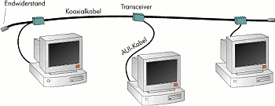
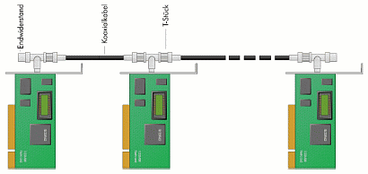
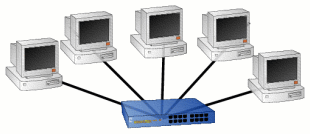
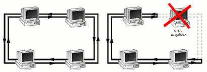
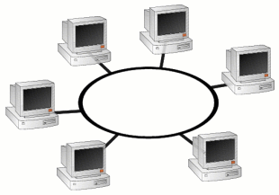
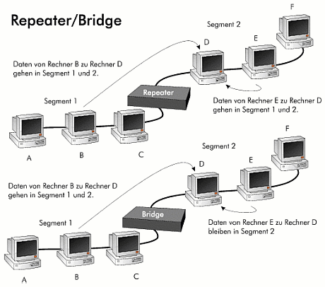
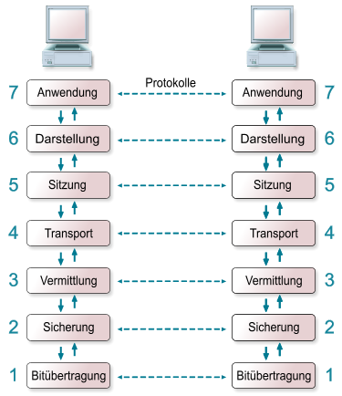
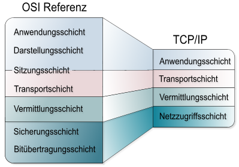
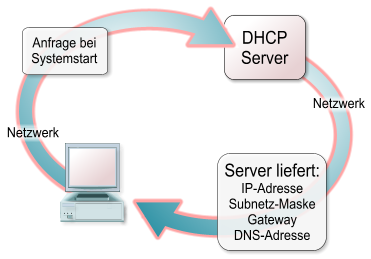
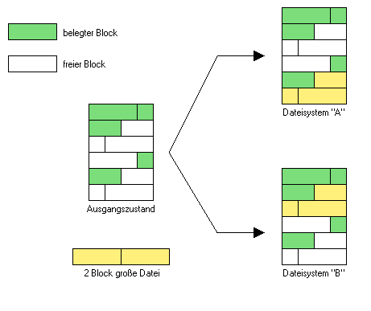

Linux im Netzwerk¶
WLAN unter Linux¶
Einleitung¶
Dieses Kapitel von SelfLinux erklärt Schritt für Schritt, wie man seine Funknetzwerkschnittstelle unter Linux einrichtet. Dabei wird auch das Thema Verschlüsselung angesprochen. Lange Zeit war es ein großes Problem, seine Netzwerkkarte unter Linux zum Funken zu bewegen. Mit der Zeit werden aber immer mehr WLAN-Chips direkt vom Linux-Kernel unterstützt. Der Rest kann - zumindest auf 32-Bit-Linux-Systemen - mit dem Ndiswrapper und dem Windows-Treiber verwendet werden.
Treiber¶
Generell sollte man zwischen WLAN-Chipsätzen, für die es native Linux-Treiber gibt, und denen für die es nur Windows-Treiber gibt unterscheiden. Im letzteren Fall wird der Windows-Treiber mit dem Programm Ndiswrapper geladen. Bei den nativ von Linux unterstützten Chipsätzen ist der Treiber entweder bereits im Linux-Kernel enthalten oder man muß das Modul für den WLAN-Chipsatz selbst kompilieren und laden. Beim selbst kompilieren benötigt man die Header-Dateien des installierten Linux-Kernels. Je nach benötigtem/verwendetem Treiber unterscheiden sich die Gerätenamen für die WLAN-Verbindung. Bei Chipsätzen, die per Ndiswrapper angesteuert werden, heißt das Gerät wlanX, andere Treiber hingegen bevorzugen meist die ethX-Nomenklatur. In diesem Kapitel wird als Gerätename für das Netzwerkgerät wlan0 verwendet.
Die Wireless-Tool¶
Die wichtigsten Programme zur Konfiguration drahtloser Netzwerkkarten unter Linux sind iwconfig und iwlist. Bei Debian sind sie im Paket wireless-tools zusammen mit weiteren Programmen enthalten. Als Alternative zu den Programmen iwlist und iwconfig existieren einige grafische Anwendungen zur Konfiguration von drahtlosen Netzwerken. Jedoch versagen sie beim Einrichten mancher Funknetzwerkschnittstellen.
iwlist¶
Die wichtigste Verwendung von iwlist, ist das Auffinden von Hotspots (offenen Funknetzwerken) und das scannen nach dem eigenen Netzwerk. Ein Beispiel zeigt das folgende Listing:
# iwlist wlan0 scan wlan0 Scan completed :
- Cell 01 - Address: 00:02:2D:39:9B:1A
- ESSID:”<hidden>” Protocol:IEEE 802.11b Mode:Master Channel:11 Encryption key:off Bit Rates:1 Mb/s; 2 Mb/s; 5.5 Mb/s; 11 Mb/s Quality=100/100 Signal level=-201 dBm Extra: Last beacon: 172ms ago
- Cell 02 - Address: 00:15:0C:4C:13:F1
ESSID:”FRITZ!Box Fon WLAN 7170” Protocol:IEEE 802.11bg Mode:Master Channel:6 Encryption key:on Bit Rates:1 Mb/s; 2 Mb/s; 5.5 Mb/s; 6 Mb/s; 9 Mb/s
11 Mb/s; 12 Mb/s; 18 Mb/s; 24 Mb/s; 36 Mb/s 48 Mb/s; 54 Mb/sQuality=100/100 Signal level=-206 dBm IE: WPA Version 1
Group Cipher : TKIP Pairwise Ciphers (1) : TKIP Authentication Suites (1) : PSKExtra: Last beacon: 204ms ago
Bei diesem Scan wurden zwei Funknetzwerke gefunden: Ein unverschlüsseltes mit versteckter Session-ID (Cell 01) und ein mit WPA verschlüsseltes Funknetzwerk mit sichtbarer ESSID (Cell 02). Beide Konfigurationen sollte man vermeiden. Allerdings ist das Netzwerk Cell 02 deutlich sicherer konfiguriert als das Netzwerk Cell 01.
iwconfig¶
Die Eingabe von iwconfig gibt für jede Netzwerkschnittstelle des Systems aus, ob sie drahtlos ist oder nicht. Wurden keine drahtlosen Schnittstellen erkannt, so könnte die Ausgabe wie folgt aussehen:
lo no wireless extensions.
eth0 no wireless extensions.
Dabei stellt lo die loopback-Schnittstelle und eth0 das kabelgebundene Netzwerkgerät dar. Ein Beispiel für die Ausgabe, wenn eine drahtlose und eine kabelgebundene Schnittstelle vorhanden sind könnte etwa so aussehen:
lo no wireless extensions.
eth0 no wireless extensions.
- wlan0 IEEE 802.11b/g ESSID:off/any Nickname:”Broadcom 4306”
- Mode:Managed Frequency=2.484 GHz Access Point: Invalid Bit Rate=1 Mb/s Tx-Power=15 dBm RTS thr:off Fragment thr:off Link Quality:0 Signal level:0 Noise level:0 Rx invalid nwid:0 Rx invalid crypt:0 Rx invalid frag:0 Tx excessive retries:0 Invalid misc:0 Missed beacon:0
Die wichtigsten Schritte, um sich mit einer Funkstation ohne Verschlüsselung anzumelden sind die Folgenden: root@linux /root# iwconfig wlan0 mode Managed root@linux /root# iwconfig wlan0 essid “ESSID”
Der erste Befehl sorgt dafür, daß der WLAN-Chip in den verwalteten Modus versetzt wird. Alternativ kann man durch den Parameter “Ad-Hoc” ein sogenanntes “Point-to-Point”-Netzwerk zwischen zwei Funknetzwerkkarten aufbauen. Der zweite Befehl setzt die Session-ID auf den Wert ESSID. Mit der ESSID “*” kann man jedem beliebigen offenen Netzwerk beitreten.
Nach dieser Konfiguration kann man, wenn sich im Funknetzwerk ein DHCP-Server befindet (meist die Funkstation) die konfigurierte Funknetzwerkschnittstelle mit root@linux /root# ifup wlan0
in Betrieb nehmen. Es wird an dieser Stelle jedoch explizit davor gewarnt, Funknetzwerke ohne Verschlüsselung zu betreiben. Dies birgt nicht nur Sicherheitsrisiken, sondern kann auch juristische Folgen nach sich ziehen. Weitere Bemerkungen dazu folgen in den Schlußbemerkungen zu diesem Kapitel.
Verschlüsselung¶
Aus den Gründen, die in den Schlußbemerkungen angesprochen werden, wird an dieser Stelle lediglich die Verschlüsselung per WPA (Wi-Fi Protected Access) besprochen.
Unter Linux ermöglichen die Zusatzprogramme xsupplicant und wpasupplicant die Möglichkeit, den Funkverkehr zu verschlüsseln. Von beiden Programmen gibt es wahrscheinlich auch Pakete Ihrer Linux-Distribution. Im Folgenden wird die Einrichtung der WPA-Verschlüsselung mit wpasupplicant beschrieben.
WPASupplicant¶
Nach der Installation von WPASupplicant trennen Sie nur noch die Konfiguration und das WPA-Zertifikat vom Betrieb Ihres “sicheren” Funknetzwerkes. Das WPA-Zertifikat erhält man vom Betreiber des Funknetzwerkes und sollte es im Linux-Dateisystem ablegen.
Ein Beispiel für eine Konfigurationsdatei, die ebenfalls an einer beliebigen Stelle im Dateisystem liegen kann (/etc bietet sich für Konfigurationsdateien an) zeigt das folgende Listing: Beispiel einer WPASupplicant-Konfigurationsdatei
- network={
pairwise=TKIP scan_ssid=1 key_mgmt=WPA-EAP eap=TTLS phase2=”auth=PAP”
# Passende ESSID ssid=”ESSID”
# Login Daten identity=”username” password=”password”
# Pfad zum Zertifikat ca_cert=”PFAD_ZUM_ZERTIFIKAT”
}
Selbstverständlich müssen die Werte von ssid, identity, password und ca_cert ersetzt werden. Ggf. verwenden Sie auch andere Authentifikationsmethoden dazu sollten Sie den Administrator des betreffenden Funknetzwerkes oder das Handbuch Ihrer Funkstation konsultieren.
Der Befehl root@linux /root# wpa_supplicant -i wlan0 -c /etc/wpasupplicant.conf -D ndiswrapper &
startet den WPASupplicant-Dienst wenn Ihre Konfigurationsdatei wpasupplicant.conf heißt und unter /etc liegt und Sie den ndiswrapper zum Betrieb Ihres WLAN-Chips nutzen. Andernfalls gilt es, auch diese Werte zu ersetzen. Verfügbare Werte für den verwendeten Linuxtreiber zeigt die folgende Tabelle. hostap Host AP Treiber (Intersil Prism2/2.5/3) Diese Option ist auch für den Linuxant-DriverLoader die richtige Wahl. hermes Agere Systems Inc. Treiber (Hermes-I/Hermes-II) madwifi MADWIFI 802.11 Chipsätze (Atheros, etc.) atmel ATMEL AT76C5XXx (viele USB- und PCMCIA-WLAN-Karten) wext Linux wireless extensions (generisch) ndiswrapper Linux Ndiswrapper broadcom Broadcom wl.o Treiber ipw Intel ipw2100/2200 Treiber wired Zur WPA-Verschlüsselung kabelgebundener Netzwerke
Anschließend kann das Funknetzwerk, wenn ein DHCP-Server darin vorhanden ist, mit dem bekannten Befehl “ifup wlan0” aktiviert werden.
Schlußbemerkungen¶
Es dürfte bekannt sein, daß es wenig hilft, ein Netzwerk mit WEP (Wired Equivalent Privacy) zu verschlüsseln. Lauscht ein versierter Angreifer wenige Minuten im verschlüsselten Netzwerkverkehr ist ihm aufgrund der Schwäche des Verschlüsselungsalgorithmus von WEP der ehemals geheime Schlüssel bekannt. Allein das Verstecken der ESSID bietet auch keinen ausreichenden Schutz. Am Besten verwendet man eine WPA-Verschlüsselung und versteckt die ESSID/SSID. Ansonsten ist nicht nur die Sicherheit des eigenen Funknetzwerkes in Gefahr, sondern man hat mit juristischen Kosequenzen zu rechnen, wenn jemand über ein nicht ausreichend geschütztes Funknetzwerk illegale Aktivitäten betreibt. Der Betreiber des Funknetzwerkes ist über den Provider und die vergebene öffentliche IP-Adresse ausfindig zu machen, aber selbst bei intensivem Protokollieren des Netzwerkverkehrs ist es nahezu unmöglich den WLAN-Hacker zu lokalisieren.
Wie immer freut sich der Autor über konstruktive Kritik, gefundene Fehler, Anregungen, etc.
Autor
Robin Haunschild H@unschild.de
Formatierung
Robin Haunschild H@unschild.de
WLAN mit Ndiswrapper¶
Einleitung¶
Netzwerke und Linux ist ein alter Hut, aber anders sieht es da mit Funknetzwerken aus: Die meisten Hersteller von WLAN-Chips stellen keine Linuxtreiber bereit. Einige legen die Spezifikationen ihrer Chips nicht offen, so dass die Programmierung freier Treiber unmöglich oder zumindest unnötig erschwert wird. Windows-Treiber stellt eigentlich jeder Hersteller bereit. Daher ist es ansich eine naheliegende Idee, die Windows-Treiber zur Nutzung unter Linux zu verwenden, wenn es keine Linux-Treiber für den WLAN-Chip gibt. Dies erledigt ndiswrapper.
Installation¶
Man benötigt zum Betrieb von ndiswrapper zum Einen das ndiswrapper Userspace-Programm und zum Anderen das ndiswrapper-Kernelmodul. Das Userspace-Programm ist in den meisten Distributionen als Paket enthalten. Mit dem Kernel-Modul verhält es sich meist auch so, hier aber nur für die Distributionskernel. Hat man einen eigenen Kernel oder bietet die verwendete Linux-Distribution kein ndiswrapper-Kernelmodul an, muss man es selbst kompilieren. Dazu müssen die Kernelquellen des verwendeten Kernels installiert sein, was bei einem selbstkompilierten Kernel der Fall sein sollte. Den Quellcode des Kernelmoduls kann man sich bei en Sourceforge herunterladen.
Durch ein root@linux /usr/src/modules/ndiswrapper# make install
als root im Verzeichnis des heruntergeladenen und ausgepackten Quellcodearchivs baut und installiert man das Kernelmodul für den momentan laufenden Kernel. Für jedes Kernel-Update muss dieser Vorgang wiederholt werden.
Verwendung¶
Zum Betrieb von ndiswrapper benötigt man noch die INF-Dateien des Windows-Treibers. Mit dem Kommando root@linux ~# ndiswrapper -i /Pfad/zur/INF/Datei/Modellname.INF
ebenfalls als root, installiert man den Windows-Treiber in der ndiswrapper-Umgebung. Bevor man den Treiber verwenden kann, muss man das Kernelmodul laden: root@linux ~# modprobe ndiswrapper
Im Erfolgsfalle sollte man am Ende der Ausgabe von dmesg eine Meldung vom ndiswrapper erhalten.
Mit: root@linux ~# ndiswrapper -l
kann man sich die installierten Treiber anzeigen lassen. Wichtig dabei ist, dass nach mindestens einem installierten Treiber die Bestätigung “driver present, hardware present” erscheint. In diesem Fall hat ndiswrapper die passende Hardware zum geladenen Treiber gefunden. Damit man nach jedem Neustart diese Prozedur nicht wiederholen muss, speichert man sie durch ein: root@linux ~# ndiswrapper -m
ab. Nun kann man die Funknetzwerkkarte mit den Distributionseigenen Programmen oder auf der console mit iwconfig konfigurieren.
Wie immer freut sich der Autor über konstruktive Kritik, gefundene Fehler, Anregungen, etc.
Autor
Robin Haunschild H@unschild.de
Formatierung
Robin Haunschild H@unschild.de
Lokale Netze¶
Einleitung¶
Wie bereits angedeutet, gibt es eine große Anzahl von Technologien zum Aufbau lokaler Netze (Local Area Networks kurz LANs). Als wichtigste Vertreter sollen im Folgenden Ethernet (mit all seinen Varianten), Token Ring, FDDI und ATM detailliert vorgestellt werden.
Allen LAN-Typen ist gemein, dass man für den Anschluss an das Netzwerk natürlich über entsprechende Hardware, in den meisten Fällen eine Netzwerkkarte des jeweiligen Typs im lokalen Rechner, verfügen muss.
Ethernet¶
Das Ethernet wurde 1973 am en Xerox PARC als Teil eines umfangreichen Forschungsprojektes für verteilte Systeme entwickelt und sollte die Vorteile einer schnellen, lokalen Vernetzung mit niedrigen Fehlerraten und ohne Verzögerungen aufzeigen.
Auf Grund seiner Einfachheit und der kostengünstigen Hardware hat Ethernet bis heute eine starke Verbreitung gefunden und ist in seinen Variationen in sehr vielen LANs anzutreffen.
Thick Ethernet (10Base5)¶
Das Original-Ethernet (festgelegt im en Standard IEEE 802.3) besteht aus einem Koaxial-Kabel mit einem halben Zoll (1,27 cm) Durchmesser, an das die Rechner über sogenannte “Transceiver” angeschlossen sind. An jedem Ende des Kabels befindet sich ein Endwiderstand von 50 Ohm, der auch als “Terminator” bezeichnet wird (siehe Abbildung). Über ein derartiges Netzwerk lassen sich Geschwindigkeiten bis 10 Mbps (Megabit pro Sekunde) erreichen.
Ein Kabel mit einem derartigen Durchmesser ist etwas unhandlich, daher wird diese Art des Ethernets auch als “Thick Ethernet” oder “10Base5” bezeichnet.
Thick Ethernet
Hinweis: Den tatsächlich erreichbaren Übertragungswert in Megabyte pro Sekunde erhält man, indem man den Megabit-Wert durch die Zahl 8 dividiert. Diese maximalen Transferraten werden in der Praxis auch nur selten erreicht. Überhaupt ist die Frage nach der notwendigen Geschwindigkeit eines Netzes eng mit der Frage nach den tatsächlich genutzten Anwendungen verbunden.
Thin Ethernet (10Base2)¶
Das beim “Thin Ethernet” verwendete Koaxialkabel ist dünner, billiger und einfacher zu handhaben. Der Anschluss an die Netzwerkkarte des Rechners erfolgt über ein sogenanntes “T-Stück”, an das links und rechts ein Netzwerkkabel angeschlossen wird, während die `untere’ Seite des T’s mit der Netzwerkkarte verbunden ist.
Am Anfang und am Ende des Kabelstrangs befinden sich auch hier Endwiderstände von 50 Ohm (Terminatoren). Die Steckverbindungen erfolgen über BNC-Anschlüsse. Mit einem Thin Ethernet kann man Geschwindigkeiten bis 10 MBit erreichen.
Thin Ethernet mit Koaxialverkabelung
10BaseT¶
Im Gegensatz zum normalen Thin Ethernet mit seiner Busstruktur ist ein 10BaseT-Netz sternförmig aufgebaut. Von einem Verteiler, dem sogenannten “Hub”, führen Twisted-Pair-Kabel zu den einzelnen Rechnern. Der Anschluss erfolgt über RJ45-Stecker, wie sie auch oft bei Telefonen verwendet werden.
Diese Verkabelungsart beseitigt einen gravierenden Nachteil der Busstruktur. Wird der Bus nämlich an einer Stelle unterbrochen, sei es durch ein defektes Kabel oder eine übereifrige Reinigungskraft, ist das Netzwerk vollständig lahm gelegt. Bei einer sternförmigen Verkabelung ist bei einem Kabelschaden nur ein Rechner betroffen, die anderen können ganz normal im Netz weiterarbeiten.
Wäre 10BaseT nicht aufwendiger und teurer als die Koaxialverkabelung, wäre letztere sicher schon ganz von der Bildfläche verschwunden.
Sternförmiges Ethernet mit Hub
Fast Ethernet (100BaseT)¶
Der Aufbau eines “Fast Ethernets” ähnelt stark dem eines 10BaseT-Netzes. Jedoch müssen aufgrund der höheren Datengeschwindigkeit von 100 Mbps aufwendigere Twisted-Pair-Kabel der Kategorie 5 verwendet werden. Neben dem Hub müssen natürlich auch die eingesetzten Netzwerkkarten für eine Geschwindigkeit von 100 Mbps vorgesehen sein.
Übertragungsraten von bis zu 1000 Mbps erreicht man mit Hilfe von geschirmten Kabeln (Shielded Twisted Pair - STP) bzw. Glasfaserleitungen. Netzwerkkarten und Hubs für derartige Geschwindigkeiten müssen wesentlich aufwendiger konstruiert sein und sind dementsprechend teuer. Da kaum ein Rechner einen Datenstrom von 1 Gbps (enspricht 125 MByte pro Sekunde!) verarbeiten kann, werden Gigabit-Ethernets vor allem als Backbone-Leitungen verwendet, die ganze Netzwerke miteinander verbinden.
Die folgende Tabelle zeigt noch einmal eine Übersicht über alle Ethernet- Varianten: Ethernet-Typ Geschwindigkeit max. Länge Struktur Kabelart Anschluss am Rechner 10Base2 (Thin Ethernet) 10Mbps 185m Bus Koaxial BNC-Buchse, T-Stück, (RG58, T-Stück, Endwiderstand) 10Base5 (Thick Ethernet) 10Mbps 500m Bus Koaxial AUI-Buchse, Transceiver 10BaseF 10Mbps 2000m Bus Glasfaser Optokoppler 10BaseT 10Mbps 100m Stern Twisted Pair RJ45-Anschluss Kat.3 100BaseT 100Mbps 100m Stern Twisted Pair RJ45-Anschluss Kat.5 Gigabit-Eth. 1Gbps 1Gbps Stern STP Spezieller Anschluss Kat. 6
1Gbps 500m Stern Glasfaser Optokoppler
Funktionsweise¶
Neben der Verkabelung ist es natürlich interessant zu wissen, was auf einem Ethernet-Kabel eigentlich passiert. Jedes Gerät im Ethernet hat eine eindeutige Hardware-Adresse von 6 Byte Länge, die auch als MAC-Adresse bezeichnet wird. Das Kürzel MAC steht hier für Media Access Control. Diese Adresse hat nichts mit den IP-Nummern des TCP/IP-Protokolls zu tun (zumindest nicht direkt) und auch nichts mit den Computern der de Firma Apple (auch nicht indirekt). Pakete im Ethernet enthalten immer die Hardware-Adresse des Senders und des Empfängers.
Das Versenden von Daten erfolgt über ein sogenanntes “Packet Broadcasting”, d.h. jedes Paket wird einfach auf das Kabel gesendet. Alle anderen Stationen erhalten, bzw. `sehen’ dieses Paket, es wird jedoch nur von dem festgelegten Empfänger entgegengenommen und verarbeitet.
Wenn zwei Stationen gleichzeitig Daten senden, kommt es konsequenterweise zu Paketkollisionen (natürlich “rumst” es nicht im Kabel, sondern die elektrischen Impulse der beiden Sender überschneiden sich und werden damit unbrauchbar). Das Ethernet definiert drei Varianten, mit diesem Verhalten umzugehen:
Die Stationen `lauschen’ ständig am Bus und merken so, ob auf dem Kabel Datenverkehr stattfindet. Eine Station sendet erst, wenn keine Signale mehr auf dem Kabel liegen, um die laufende Übertragung nicht zu zerschmettern. Sollten zwei Stationen genau zum selben Zeitpunkt mit dem Senden beginnen, kommt es trotzdem zur Kollision. Während eine Station sendet, prüft sie gleichzeitig auf dem Empfangskanal, ob die Signale korrekt versendet wurden. Da alle Stationen im Netz einschließlich der Sendenden die Signale empfangen, stellt dies kein Problem dar. Erkennt die sendende Station nun, dass die Daten nicht korrekt übertragen werden, handelt es sich wahrscheinlich um eine Kollision. Die sendende Station schickt ein Kollisionssignal in das Kabel, was bewirkt, dass alle Stationen im Netz ihre Sendetätigkeit abbrechen (die ja vorhanden sein muss, sonst hätte es keine Kollision gegeben). Nach einer zufällig bestimmten Zeit versucht die Station wieder zu senden. Die andere Station, mit der es zur Kollision kam, hat eine andere Zufallszeit ermittelt und wird dann merken, dass das Netz bereits belegt ist. Sollten beide Stationen trotzdem wieder zur selben Zeit senden, was extrem unwahrscheinlich ist, beginnt das Spiel eben wieder von vorn. Als Sicherungsmaßnahme wird die Prüfsumme eines Ethernet-Paketes (korrekt heißt es Ethernet-Frame) mit dem tatsächlichen Inhalt verglichen. Kommt es dabei zu Unstimmigkeiten, wird das Paket vom Empfänger abgewiesen.
FDDI¶
Die Abkürzung FDDI steht für “Fiber Distributed Data Interconnect”. Dieser Netzwerktyp überträgt seine Daten nicht über Kabel, sondern über Lichtimpulse auf Glasfaserleitungen. Dies hat den Vorteil, dass die Datenübertragung nicht durch elektromagnetische Störungen beeinflusst werden kann. Außerdem ist mit Lichtimpulsen eine höhere Datenübertragungsrate möglich als bei elektrischen Signalen.
Ein FDDI-Netz ist ein Token-Ring-Netzwerk mit einer Bandbreite von 100 Megabit pro Sekunde. Um Störungen automatisch beheben zu können, besteht ein FDDI-Netz aus zwei in entgegengesetzte Richtungen laufenden Ringen. Der Datenverkehr erfolgt wie bei jedem Token-Ring-LAN über ein Token, dass ständig im Kreis läuft. Im normalen Betrieb wird von den zwei vorhandenen Ringen lediglich einer genutzt. Interessant wird das Verhalten von FDDI, wenn ein Hardware-Fehler im Netz auftritt. Wenn ein Gerät bemerkt, dass eine Kommunikation zu einem anderen Gerät im Netz nicht möglich ist, benutzt es automatisch den zweiten Ring, um den aufgetretenen Defekt zu umgehen. Wird der Ring also, aus welchen Gründen auch immer, an einer Stelle unterbrochen, leiten die zwei benachbarten Stationen den Datenverkehr automatisch auf den zweiten Ring um. Die Abbildung illustriert dieses Verhalten:
FDDI-Netz im normalen Betrieb (links) und bei einem Defekt (rechts): Der Netzverkehr kann trotzdem weiter durchgeführt werden.
Token Ring¶
Token-Ring-Netze wurden relativ früh entwickelt, sind jedoch nicht so stark verbreitet wie andere LAN-Technologien. Die logische Struktur dieses Netztyps entspricht, wie der Name schon sagt, der eines geschlossenen Ringes. Die tatsächliche Struktur muss dem nicht entsprechen, Token-Ring-Netze sind auch mit sternförmiger Verkabelung möglich. Beschränken wir uns also auf die Art der Datenübertragung:
Um die Funktionsweise von Token-Ring-Netzwerken zu verstehen, kann man das Beispiel eines Güterzuges heranziehen, der immer wieder eine Kreisstrecke befährt und regelmäßig an allen Stationen vorbeikommt. Die Lokomotive stellt hierbei das sogenannte “Token”-Paket dar. Je nachdem ob Waggons, also Daten, angehängt wurden, wird die Lokomotive als frei oder belegt gekennzeichnet. Möchte eine Station nun Daten versenden, prüft sie, ob das Token frei ist. Ist dies der Fall, wird das Token als belegt gekennzeichnet, mit der Zieladresse versehen und die Daten angehängt. Unser Zug fährt weiter im Kreis, bis er die festgelegte Zielstation erreicht hat und trennt sich dort von seinen Daten. Das Token wird wieder als frei gekennzeichnet und kann erneut Daten transportieren.
So geht das Token ständig von Rechner zu Rechner. Ist der Inhalt des Datenpakets nicht für den jeweiligen Rechner bestimmt, sendet er das Token weiter. So ist gewährleistet, dass jede Station die gleichen Chancen hat, Daten senden zu können. Anders als beim Ethernet gibt es hier nicht das Problem mit den Paketkollisionen, da ja immer nur ein Paket unterwegs ist.
Token Ring Netzwerk
ATM - Asynchronus Transfer Mode¶
Bei ATM handelt es sich um eine verbindungsorientierte Hochgeschwindigkeitsnetzwerk-Technologie, die sowohl in lokalen Netzen als auch in Wide Area Networks (WANs) zum Einsatz kommt. Üblicherweise meint “Hochgeschwindigkeit” Netzwerke mit Datentransferraten von 100 Mbps und höher. ATM kann je nach darunter liegender Netzwerktechnik Transferraten bis in den Gigabit-Bereich erreichen. Entsprechend teuer ist auch die für ATM erforderliche Hardware.
Um derartig hohe Geschwindigkeiten erreichen zu können, verwendet ATM mehrere spezielle Hardware- und Software-Techniken:
Ein ATM-Netzwerk besteht aus einem oder mehreren ATM-Switches, die mit Host-Rechnern oder wiederum mit weiteren ATM-Switches verbunden sein können. ATM benutzt optische Medien wie Glasfaserleitungen zur Datenübertragung, auch als Verbindung zwischen Hosts und ATM-Switch. Pakete (sog. “Cells”) in der untersten Schicht von ATM-Netzwerken haben eine feste Länge. Da jedes Paket exakt dieselbe Größe hat, können ATM-Cells sehr schnell verarbeitet werden.
ATM unterscheidet sich stark von den bisher beschriebenen paketorientierten Netzwerken. Im Gegensatz zu ihnen ist ATM verbindungsorientiert angelegt und eignet sich daher auch zur Übertragung von Sprache (große Teile des Telefonnetzes bauen auf ATM-Backbones auf). Doch bleiben wir bei Rechnernetzen: Möchte ein Host eine Verbindung zu einem anderen aufbauen, kontaktiert er den nächsten ATM-Switch und teilt ihm seinen Verbindungswunsch samt Adresse des Zielrechners mit. Der Switch versucht nun, eine Verbindung zu diesem herzustellen. Dabei entsteht eine Art Pfad über weitere Switches. Ersterer Switch legt nun für diese Verbindung bzw. diesen Pfad eine eindeutige Nummer fest und teilt dem Host diese mit. Ist eine Verbindung einmal aufgebaut, sind Übertragungen mit garantierter Bandbreite darüber möglich. Eine Verbindung bleibt bestehen, bis einer der beiden Partner diese trennt, also ‘auflegt’.
Möchte der Host nun Daten versenden, schickt er diese samt Verbindungsnummer (die Verbindung besteht bereits) zum Switch. Dieser hat die Nummer gespeichert und weiß, an welchen Switch er die Daten weiterschalten und welche ID-Nummer er dort benutzen muss. Der nächste Switch tut genau dasselbe bis die Daten irgendwann beim Zielrechner angekommen sind. Dabei weiß jeder Switch nur, an wen er die Daten einer bestimmten Verbindung weiterleiten muss. Er hat keine Information über die Herkunft oder den letztendlichen Empfänger. Dies sorgt dafür, dass im Netz sehr wenig Overhead (Verwaltungsdaten) durch die Leitungen geschoben wird, was der Geschwindigkeit direkt zugute kommt.
Netzwerk-Hardware¶
Für ein funktionierendes Netzwerk, bedarf es einiger technischer Geräte. Für ein kleines Netzwerk sind dies im einfachsten Fall zwei Netzwerkkarten und ein Kabel. Bei größeren Netzwerken tauchen aber bereits Bezeichnungen wie Router, Hubs, Switches und ähnlich ‘selbsterklärende’ Begriffe in nicht geringer Anzahl auf, mit denen ein normaler Anwender selten etwas anzufangen weiß. Genau diese Bezeichnungen werden in diesem Kapitel näher erläutert.
Netzwerk-Interface¶
Um einen Computer an einem Netzwerk teilhaben zu lassen, benötigt er natürlich mindestens eine Netzwerkkarte, auch als “Network Interface Card (NIC)” bezeichnet. Diese Karte muss zu dem vorhandenen Netzwerk passen. Es gibt verschiedenste Ausführungen, vom 10MBit-Ethernet bis zur ultraschnellen Glasfaserübertragung ist alles dabei. Bei Ethernet-Netzwerkkarten ist eine Hardware-Adresse auf der Karte `eingebrannt’, die diese Karte weltweit eindeutig im Netzwerk identifiziert. Diese Adresse wird auch als “de MAC-Adresse” (MAC für Media Access Control) bezeichnet. MAC-Adressen werden den Hardwareherstellern von einer en zentralen Stelle zugewiesen. Anhand der Adresse lässt sich en dort auch der Hersteller der Hardware ermitteln. Wenn die Karte dann noch im Betriebssystem des Rechners ordentlich eingerichtet wurde, steht einem Betrieb im Netz nichts mehr im Wege. Netzwerkkarten sind entweder aus Platzgründen bereits auf dem Motherboard des Rechners fest eingebaut oder werden als separate Steckkarten verkauft. Für ihren Betrieb ist in der Regel eine passende Treibersoftware nötig.
Repeater¶
Repeater werden vor allem in busförmigen Ethernets (sprich: Koaxialkabel) verwendet. Ihre einzige Funktion ist die empfangenen Signale zu verstärken und weiterzugeben. So ist es möglich, ein Koaxial-Ethernet in mehrere Segmente zu teilen, um mehr als 185 Meter maximale Kabellänge zu erreichen. In einem Netzwerk können maximal drei solcher Segmente gebildet werden. Diese Segmente erscheinen den angeschlossenen Rechnern aber wie ein Netz, da ja die elektrischen Impulse von der einen Seite des Repeaters auf der anderen nur verstärkt werden. Repeater agieren daher im OSI-Schichtenmodell in der Schicht 1, also rein hardwarebasiert.
Bridges¶
Im Gegensatz zu Repeatern entscheiden Bridges anhand der MAC-Adresse des Empfängers, ob sie ein Paket oder Frame in das nächste Segment weiterleiten. Bridges werden vor allem zur Segmentierung und Geschwindigkeitssteigerung von Netzwerken eingesetzt, da sie im Gegensatz zu Repeatern das Signal nicht einfach verstärken, sondern auch filtern. Sie arbeiten auf dem Level 2 des OSI-Schichtenmodells.
Wirkungsweise von Repeatern und Bridges
Hubs¶
Ein Hub wird auch als “Konzentrator” oder “Verteiler” bezeichnet. In sternförmig aufgebauten Netzwerken bildet er den zentralen Punkt. Kabel führen immer von einem Port des Hubs zu einem Rechner im Netz, so dass letztendlich eine Art Stern entsteht (siehe Abbildung im Abschnitt Lokale Netze).
Statt eines Rechners kann man an einen Hub auch einen weiteren Hub anschließen, so dass weitere Anschlüsse zur Verfügung stehen. Hubs gibt es für Twisted-Pair-Ethernet mit üblicherweise 5 bis 24 Ports. Sie können entweder für Geschwindigkeiten von 10 oder 100 Mbps konstruiert sein. Es sind auch Dual-Speed-Hubs erhältlich (10 und 100Mbps). Diese beinhalten aber eigentlich zwei getrennte Hubs, die switch-artig miteinander gekoppelt und entsprechend teurer sind. Auch Hubs leiten den Netzwerkverkehr lediglich von einer Station auf alle anderen weiter, so dass sich alle am Hub angeschlossenen Stationen die Bandbreite teilen müssen. Sie arbeiten nur auf dem untersten Hardware-Level der Schicht 1 des OSI Modells.
Switches¶
Im Vergleich zu Hubs sind Switches schon etwas intelligenter. Äußerlich sind sie von Hubs nicht zu unterscheiden, im Inneren verbirgt sich allerdings eine ganz andere Technik. Im Gegensatz zu einem Hub, wo sich alle Rechner die gesamte Bandbreite des Netzes teilen müssen, kann jeder an einen Switch angeschlossene Host die volle Bandbreite nutzen. Dementsprechend schneller sind geswitchte Netze.
Doch wie funktioniert dies im Einzelnen? Im Gegensatz zum Hub, leitet ein Switch Pakete nur an den Switch-Port weiter, an dem sich der Empfänger befindet. Statt also ein Paket von Rechner A zu Rechner B an alle Ports und damit in das gesamte Netz zu “blasen”, wird es nur zu dem Port geschaltet, an dem Rechner B angeschlossen ist. Damit entsteht eine Art virtuelle Verbindung zwischen den beiden Kommunikationspartnern. So wird unnötige Netzlast in den anderen Segmenten vermieden und die Geschwindigkeit gesteigert. Switches sind auf der Schicht 2 (Sicherungsschicht) des OSI-Modells einzuordnen.
Router¶
Der Begriff “Router” (darüber, ob man dieses Wort als Ruter’ oder ‘Rauter ausspricht, konnte sich noch niemand so recht einigen, daher sind beide Varianten akzeptabel) bezeichnet Geräte, die zwei oder mehrere Netzwerke miteinander verbinden. Hierbei ist ein Router dafür zuständig, die Pakete aus einem Netz in das andere zu leiten. Im Gegensatz zu Bridges können sie völlig unterschiedliche Netzwerkmedien, z.B. Token Ring und FDDI, miteinander verbinden.
Damit das Routing über mehrere Netze funktioniert, hält jeder Router eine Routingtabelle vor, die Einträge in Form von Netzwerkadressen enthält. Anhand dieser Tabelle leitet er Pakete in das korrekte Netzsegment weiter. Ein Router kann dabei ein Rechner sein, der mit mehreren Netzwerkkarten ausgestattet und mit jeder Karte an je ein Netzwerk angeschlossen ist. Es gibt aber auch spezielle Geräte, die für das Routing optimiert wurden und eine wesentlich höhere Anzahl Pakete routen können. Als Beispiel sei hier das Routing im Internet erwähnt, wo jede Anfrage durch etliche Netze geleitet werden muss. Um nachzuvollziehen, über welche Hosts eine Anfrage weitergeleitet wird, kann man das Programm traceroute (bzw. tracert unter Windows) verwenden.
Router arbeiten auf Schicht 3 des OSI-Schichtenmodells, da sie bereits Entscheidungen anhand von konkreten Adressen treffen.
Autor
Guido Ehlert guido@ge-soft.de
Formatierung
Frank Börner frank@frank-boerner.de
Das OSI-Referenzmodell¶
Beschreibung
Das OSI-Referenzmodell ist das bekannteste Modell zur Beschreibung offener Kommunikationsarchitekturen und eignet sich hervorragend zur Erläuterung des Aufbaus von Computernetzen.
Das OSI-Modell¶
Im Umgang mit Netzwerken hat sich die Bezugnahme auf ein Referenzmodell der en International Organization for Standardization (ISO) als ausgesprochen hilfreich erwiesen. Hier soll von Anfang an betont werden, dass es sich um ein Modell handelt, das eine Standard-Netzarchitektur beschreiben soll. Ein Modell ist jedoch nicht die Realität, und das Open Systems Interconnection-Modell (OSI) ist und war auch zu keinem Zeitpunkt die Realität in der Netzwerkwelt. Trotz seines Modellcharakters kann man seine Rolle beim Verständnis der Zusammenhänge in einem Netzwerk kaum überschätzen.
Das OSI-Modell wird auch als 7-Schichten-Modell bezeichnet. Es definiert 7 Schichten und ordnet jeder einzelnen Schicht spezielle Funktionalität zu. Über diese Grundidee lohnt es sich nachzudenken.
Zunächst einmal müssen wir verstehen, dass ein Netzwerk seinen Benutzern Dienste bereitstellt. Im einfachsten Sinne überträgt es Daten von A nach B. Damit dies auf die Art und Weise geschieht, die wir im Sinn haben, müssen jedoch tatsächlich eine Vielzahl von Aufgaben bewältigt werden. Die Probleme, die dabei gelöst werden müssen, reichen von Fragen der elektronischen Übertragung der Signale über eine geregelte Reihenfolge in der Kommunikation (wer darf wann senden?) bis hin zu abstrakteren Aufgaben, die sich innerhalb der kommunizierenden Anwendungen ergeben. Die Vielzahl dieser Probleme und Aufgaben lässt es sinnvoll erscheinen, das Netz nicht als einen einzigen Dienstleister zu betrachten, sondern seine Dienste ganz bestimmten Kategorien zuzuordnen. Als besonders geeignet hat sich die Aufteilung in Schichten erwiesen.
Schichten sind in zweierlei Hinsicht interessant. Erstens stellt jede Schicht ganz bestimmte Dienste zur Verfügung. Betrachten wir das Problem der elektronischen Datenübertragung. Werden die Daten über ein Kabel übertragen, so stellt sich die Frage, welches elektrische Signal als 0 und welches als 1 erkannt werden soll. Da 0 und 1 die elementaren Informationseinheiten sind, macht es keinen Sinn, etwa die Reihenfolge der Kommunikation regeln zu wollen, bevor dieses Problem gelöst ist - alles Weitere baut dann auf dieser Problemlösung auf. Wir können also sagen, dass eine Schicht der über ihr liegenden Schicht bestimmte Dienste zur Verfügung stellt. Die höhere Schicht verlässt sich darauf, dass die untere Schicht ihre Aufgaben korrekt erledigt. Sie benutzt ihre Dienste, um damit ihre eigenen Aufgaben zu erledigen.
Zweitens dürfen wir nicht aus den Augen verlieren, dass wir von kommunikativen Prozessen reden. Auch hier spielt das Schichten-Modell eine zentrale Rolle. Die Schicht (um beim Beispiel zu bleiben), die für die elektronische Übertragung zuständig ist, wird die hier auftretenden Probleme alleine mit ihrer Partnerschicht in den Nachbarrechnern klären, und nicht etwa auch die darüberliegenden Schichten bemühen, welche von Elektronik auch gar nichts wissen. Eine Schicht, welche die Reihenfolge der Kommunikation regelt, wird dies nur mit ihrer Partnerschicht tun. Nur diese Partnerschicht weiß überhaupt, dass hier eine Regelung gefunden werden muss, folglich kann nur sie Antwort geben, und nur mit ihr kann eine Vereinbarung getroffen werden. Wir sehen also, dass eine Schicht zwei Dinge tut: Erstens stellt sie den anderen Schichten (im selben System) ihre Dienste zur Verfügung, zweitens kommuniziert sie mit ihrer Partnerschicht in einem oder mehreren fremden Systemen. Indem die Kommunikation mit der Partnerschicht eines fremden Systems erfolgreich ist, kann die Schicht ihren Dienst erfolgreich an die höheren Schichten im eigenen System weitergeben.
Damit ist es nun an der Zeit, die einzelnen Schichten näher zu betrachten. Wir beginnen ganz unten und arbeiten uns Schicht für Schicht nach oben.
Die verschiedenen Schichten¶
Grafik Rolf Brunsendorf
Die Bitübertragungsschicht¶
Die Bitübertragungsschicht (engl. Physical Layer) löst die Probleme der Übertragung von Datenbits über physikalische Medien. Dies beginnt bei den Spezifikationen bestimmter Übertragungsmedien (Kupferkabel, Lichtwellenleiter, Stromnetz, Luft etc.), der Definition von Steckverbindungen u.s.w. Darüber hinaus muss auf dieser Ebene gelöst werden, auf welche Art und Weise überhaupt ein einzelnes Bit übertragen werden soll. Was ist damit gemeint?
Nun, wie wir wissen, baut die Informatik auf dem alles entscheidenden Unterschied zwischen 0 und 1, zwischen wahr und falsch auf. Diese Informationseinheit nennen wir Bit, und es steht außer Frage, dass wir nichts Sinnvolles übertragen könnten, wenn wir nicht die Möglichkeit hätten, 0 und 1 zu übertragen. Selbstverständlich sind dem Übertragungsmedium selbst, z.B. einem Kupferkabel im Falle elektrischer Übertragung, oder auch der Luft im Falle von Funkübertragung, die Werte 0 und 1 unbekannt. Für jedes Medium muss daher eine Codierung dieser Werte gefunden werden, beispielsweise ein Stromimpuls von bestimmter Spannung oder eine Funkwelle mit bestimmter Frequenz, jeweils bezogen auf eine bestimmte Dauer.
Insgesamt können wir sagen, dass die Bitübertragungsschicht zu großen Teilen mechanische und elektrotechnische Probleme löst. Dies bedeutet jedoch nicht, dass wir keine weiteren Kenntnisse über diese Schicht zu haben brauchen. Durch die Wahl einer bestimmten hardwaretechnischen Lösung werden häufig bereits viele Eigenschaften und Einschränkungen des Netzwerkes festgelegt, die sich später nicht mehr ändern lassen. Falsche Entscheidungen können hier Unsummen von Geld verschlingen, weil häufig ein großer Teil der Hardware durch anderes Material ersetzt werden muss. Wir werden daher im Kapitel Lokale Netze auf bestimmte Kabeltypen und die Eigenschaften des meistverbreiteten Netztypes, des Ethernet, eingehen. Verschiedene Netztypen wie Ethernet, Token Ring und andere haben ihre Wurzeln meist tief in Schicht 1 und sind eng mit bestimmten hardwaremäßigen Entscheidungen verbunden.
Die Sicherungsschicht¶
Während Schicht 1 lediglich einen rohen Strom an Bits kennt, werden die Daten in der Sicherungsschicht (engl. Data-Link Layer) zu sogenannten Frames (Datenrahmen) zusammengefasst. Dabei steht jeweils eine bestimmte Bitfolge für den Beginn eines Frames, eine andere für dessen Ende. Innerhalb eines Frames können weitere Steuerinformationen abgelegt werden.
Ein Frame umfasst typischerweise einige hundert bis einige tausend Bytes. Auf das Senden eines Frames folgt die Bestätigung des Empfängers durch einen Bestätigungsrahmen (Acknowledgement Frame), welcher den korrekten Empfang eines Datenrahmens quittiert. Sowohl beim Senden eines Frames als auch beim Senden der Bestätigung kann es zu Fehlern kommen. Es kann auch geschehen, dass der Empfänger vom Sender (oder von mehreren Sendern) mit Daten überflutet wird, so dass er die Menge der gesendeten Pakete nicht mehr ordnungsgemäß empfangen und quittieren kann. Auch diesem Problem, bekannt unter dem Stichwort Flusskontrolle, wird bereits auf der Sicherungschicht begegnet.
Im Vergleich mit der unstrukturierten Bitübertragungsschicht ist damit bereits ein erhebliches Maß an Übertragungssicherheit gegeben, das übrigens häufig auch von erfahrenen Administratoren und Entwicklern unterschätzt wird. Der Grund für diese Unterschätzung ist vermutlich darin zu suchen, dass auch in höheren Schichten häufig noch Sicherheitsmechanismen verwendet werden, was der Sicherungsschicht in gewisser Weise das Misstrauen ausspricht. Nichtsdestotrotz kommt man für viele Anwendungen auch ohne weitere Sicherungsmechanismen aus, was dafür spricht, dass die Sicherungsschicht durchaus bereits hervorragende Arbeit leistet.
Die Vermittlungsschicht¶
Bislang haben wir den Horizont unseres Nachbarrechners nicht überschritten. Dieser Schritt wird erst ab der Vermittlungsschicht vollzogen. In den seltensten Fällen wollen wir in einem Netzwerk tatsächlich nur mit unserem physischen Nachbarrechner kommunizieren. Um genau zu sein, wissen wir häufig gar nicht, wo der Rechner, auf dem unsere Nachricht landen wird oder von dem wir unsere Daten beziehen, überhaupt lokalisiert ist. Automatisch stellt sich die Frage, wie unser Datenpaket seinen Weg zum eigentlichen Bestimmungsort finden soll.
Die Problematik wird nicht einfacher, wenn wir uns vergegenwärtigen, dass ein Paket auf seinem Weg womöglich durch viele verschiedene Teilnetze hindurchgeleitet werden muss. Diese Netze gehören uns nicht, und wir können auch nicht ahnen, ob es gerade Sinn macht, das eine oder das andere Teilnetz zu bevorzugen, weil dort vielleicht gerade weniger Verkehr ist. Probleme dieser Art, die man unter dem Stichwort Routing zusammenfassen kann, werden in der Vermittlungsschicht (engl. Network Layer) gelöst.
Beim Durchqueren von fremden Teilnetzen können vielerlei Aufgaben und Probleme entstehen. Ein wichtiger Faktor ist sicher das Finden der richtigen Route in Fällen, in denen die Route dynamisch ermittelt wird. Bei Datenübertragungen über das Internet ist dies eher die Regel als die Ausnahme. Man kann davon ausgehen, dass beispielsweise im Verlaufe eines Downloads ein Teil der übertragenen Daten eine ganz andere Route genommen hat als ein anderer Teil. Die Wahl der Route obliegt sogenannten Routern, die man sich - einfach gesagt - wie Lotsen zwischen den unzähligen Teilnetzen vorstellen kann. Auch Linux-Rechner können als Router eingesetzt werden.
Die Transportschicht¶
Auch wenn Schicht 3 bereits dafür sorgt, dass Daten den eigentlichen Zielrechner erreichen, können wir noch nicht wirklich von einer Kommunikation zwischen den Rechnern reden. Was bisher geschehen ist, können wir mit dem Landen eines Briefes im Briefkasten vergleichen: Der Brief hat sein Ziel erreicht, doch die eigentliche Information will noch gelesen und möglichst auch beantwortet werden. Eine echte sogenannte Ende-zu-Ende-Kommunikation beginnt erst ab Schicht 4, der Transportschicht (engl. Transport Layer).
Kommunikation muss zwischen Partnern stattfinden, die sich verstehen können. Nun “hausen” in einem Rechner üblicherweise Unmengen von Applikationen und Prozessen, und es stellt sich automatisch die Frage, für wen die empfangene Nachricht eigentlich bestimmt ist. Möglicherweise ist auch der adressierte Partner augenblicklich gar nicht verfügbar - sei es, weil der Prozess gerade anderweitig beschäftigt ist, weil er hängt oder gar nicht gestartet wurde. In jedem Fall muss die Kommunikation an einen bestimmten Dienst gekoppelt werden, wenn sie erfolgreich sein soll. Irgendjemand muss das Gespräch entgegennehmen.
Es wäre freilich auch sinnvoll, wenn der Sender über den Empfang der Daten eine Rückmeldung erhielte - insbesondere dann, wenn es sich um wichtige Daten handelt. Schicht 4 bietet diese Möglichkeit an und stellt somit gewissermaßen einen weiteren Sicherheitsmechanismus gegenüber der Low-Level-Sicherung der Schicht 2 zur Verfügung. Der Preis für diese Sicherheit wird in jedem Fall eine langsamere Kommunikation sein, denn auch das Versenden und der Erhalt von Bestätigungen will besorgt sein. Wenn es auf schnelle Verbindungen ankommt, kann das Versenden von Bestätigungen auch eher unerwünscht sein und muss daher nicht erfolgen.
Stellen wir also nochmals in den Vordergrund, was die Transportschicht im Wesentlichen erreicht: Sie stellt eine Ende-zu-Ende-Verbindung her und ermöglicht damit erst die eigentliche Kommunikation zwischen zwei Partnerprogrammen auf 2 verschiedenen Rechnern. Das Öffnen einer solchen Verbindung ermöglicht nun beispielsweise eine sogenannte Sitzung...
Die Sitzungsschicht¶
Eine Sitzung lebt von geordnetem Dialog. Wenn alle gleichzeitig reden, kann der Erfolg einer Sitzung fraglich sein. Tatsächlich haben viele Netzverbindungen Sitzungscharakter, d.h. die Kommunikation verläuft nicht nur in eine Richtung, sondern muss geregelt werden, da es sonst zu Konfusionen kommen kann. Eine solche Dialogsteuerung wird auf der Sitzungsschicht (engl. Session Layer) bereitgestellt. Zu den Aufgaben, die dabei anfallen, gehören der Auf- und Abbau von Sitzungen, Vereinbarungen über den Sitzungsverlauf, das Setzen von Sicherungspunkten bei Datenübertragungen (um bei Störungen die Übertragung an einem solchen Sicherungspunkt wieder aufnehmen zu können) usw.
Die Darstellungsschicht¶
Verschiedene Endsysteme stellen bestimmte häufig verwendete Elemente auf verschiedene Weise dar. Die Darstellung von Datentypen wie Zeichenketten oder Ganzzahlen, von Dateien, von Steuerzeichen für den Drucker und vieles andere variieren von System zu System, und da Anwendungen meist mit solchen Codierungen (und nicht etwa mit reinen Bitfolgen) kommunizieren, ist es gerechtfertigt, eine Standardcodierung für das Netz zu verwenden. Diese Standardcodierung wird von der Darstellungsschicht (engl. Presentation Layer) erzeugt bzw. beim Empfang in die interne Darstellungsform des Computers konvertiert. Zu den Aufgaben, die dabei anfallen, gehört auch die Komprimierung oder Verschlüsselung von Daten, die im heutigen Datenverkehr eine wichtige Rolle spielt.
Die Anwendungsschicht¶
Schicht 1 ist von der Hardware nicht zu trennen, obwohl ihr die Hardware selbst nicht angehört. Ebenso, nur mit Perspektive auf die Anwendungsprogramme, verhält es sich mit Schicht 7. Die Aufgabe dieser Schicht lässt sich nicht wirklich auf den Punkt bringen, da für verschiedene häufige Anwendungsfälle auch ganz verschiedene Funktionen bereitgestellt werden.
Die Anwendungsschicht (engl. Application Layer) stellt Protokolle für häufige Anwendungsfälle zur Verfügung, und gewährleistet, dass sich die Anwendungen auch auf unterschiedlichen Endsystemen erwartungsgemäß verhalten. Besinnen wir uns auf den Begriff Protokoll: Das Protokoll eines Staatsbesuches beispielsweise legt exakt fest, in welcher Reihenfolge welche Handlungen vollzogen werden, vom ersten Empfang am Morgen bis zum abendlichen Dinner. Solchen Protokollen sind wir bereits in niedrigeren Schichten begegnet, doch dort dienten sie nahezu ausschließlich der zuverlässigen Übertragung der Datenpakete. Auf Anwendungsebene interessieren uns nicht mehr die einzelnen Pakete, sondern größere inhaltliche Einheiten, die je nach Anwendung variieren können.
Bleiben wir einmal bei dem Vergleich mit einem Staatsbesuch: Dem hohen Regierungsvertreter werden beim Empfang die Hände geschüttelt, und die Fahnen der Nationen wehen einmütig im Wind. Schön wäre es doch auch, wenn wir zum Empfang auf einem anderen Rechner eine Willkommensmeldung erhielten, in netten und informativen Worten auf unser Terminal geschrieben. Doch selbstverständlich kann sich das fremde System nicht darum kümmern, welchen Terminaltyp wir gerade benutzen - und davon gibt es Hunderte! Und jedes Terminal benutzt seinen eigenen Satz von Steuerzeichen. Die Willkommensmeldung würde ein unverständliches Chaos auf unserem Bildschirm auslösen, wenn sie nicht speziell für unser verwendetes Terminal umgesetzt würde. Auch dies gehört zu den Aufgaben der Anwendungsschicht.
Im Verlaufe des Staatsbesuches müssen wichtige Dinge besprochen werden. Bestimmte Informationen müssen erfragt, andere sollen vermittelt werden. So gehören beispielsweise auch zu einer E-Mail ganz bestimmte Informationen, ohne die eine E-Mail nicht vollständig ist: wie z.B. ein Subject, eine Absenderadresse, eine Zieladresse und auch ein Endezeichen, um zu ermitteln, wann der Textkörper beendet ist. Solche Teile eines Protokolls, die freilich von Anwendung zu Anwendung stark variieren können (je nachdem, welche Information gerade erfragt bzw. vermittelt werden soll) werden für häufige Anwendungen auf Schicht 7 festgelegt.
Autor
Matthias Kleine kleine_matthias@gmx.de
Formatierung
Matthias Nüßler m.nuessler@web.de
TCP/IP¶
Beschreibung
TCP/IP ist das Internetprotokoll, das auch von Linux verwendet wird. Dieses Kapitel beschäftigt sich mit TCP/IP Grundlagen.
Einleitung¶
“TCP/IP” ist einer dieser typischen Begriffe, die im Zusammenhang mit Netzwerken immer wieder auftauchen, mit denen man aber selten etwas anzufangen weiß. Diesen Begriff zu klären soll Ziel der folgenden Abschnitte sein. Hier wird mit “TCP/IP” immer die Protokollversion 4 gemeint.
Als erstes ist TCP/IP eine Abkürzung für Transmission Control Protocol / Internet Protocol, was die Deutung auch nicht unbedingt erleichtert. Allerdings scheint es sich hier um ein Protokoll zu handeln. Genauer gesagt handelt es sich nicht um ein Protokoll, sondern um eine ganze Gruppe von Netzwerk- und Transportprotokollen, die unter dem Begriff TCP/IP zusammengefaßt werden. Zu TCP/IP gehört so immer das Protokoll ICMP und auch UDP wird von IP Implementationen grundsätzlich angeboten.
Genau diese Gruppe von Protokollen bildet die Grundlage für alle Netzwerkaktivitäten unter Linux bzw. UNIX. Doch auch unter anderen Betriebssystemen findet es immer mehr Verbreitung (schließlich baut das gesamte Internet auf TCP/IP auf).
TCP/IP entstand mit dem Internet seit 1983 und hat mehrere Ziele:
Hardwareunabhängigkeit keine zentrale Verwaltung, kein zentraler Knoten, dadurch höhere Ausfallsicherheit applikationsunabhängig, es kann also für verschiedenste Zwecke genutzt werden
Mit dem Begriff Internet wird das größte zusammenhängende IP Netzwerk bezeichnet. Das Internet ging aus einem ARPANET, später DARPANET genannten Forschungsnetz hervor, dessen Grundlagen 1969 erarbeitet wurden.
TCP/IP ist anders als das ISO/OSI-Schichtenmodell nicht offiziell standardisiert, Aufbau der Protokolle wird in den sogenannten RFC’s beschrieben (Request for Comment). Verfügbar sind diese z.B. unter http://www.rfc-editor.org.
Da es von der Hardware unabhängig ist, kann es auf den verschiedensten Netzwerktypen eingesetzt werden. Doch bevor wir uns detailliert den einzelnen Schichten von TCP/IP zuwenden, wollen wir uns damit beschäftigen, wie sich die Rechner im TCP/IP-Netz gegenseitig ansprechen.
Adressierung im IP¶
Jeder Host im Netzwerk erhält eine eindeutige Adresse, die sogenannte IP-Adresse oder IP-Nummer. Das ‘IP’ in der Bezeichnung deutet darauf hin, daß hierfür das Internet Protocol zuständig ist.
In der aktuellen Version von TCP/IP wird jedem Rechner eine 32 Bit lange Adresse zugeordnet, die der besseren Lesbarkeit halber in der Form xxx.xxx.xxx.xxx geschrieben wird. Hierbei werden die einzelnen Bytes durch Punkte getrennt. So sind IP-Adressen von 0.0.0.0 bis 255.255.255.255 möglich. Für die Verwendung durch Hosts nicht alle Nummern nutzbar, einige z.B. sind für die Netzadresse oder sogenannte Broadcasts reserviert. Mehr dazu weiter unten.
Eine typische IP-Adresse könnte nun lauten 141.89.64.1 (ist in diesem Fall der Nameserver der Universität Potsdam). In Binärschreibweise wäre dies 10001101 1011001 1000000 00000001 Eine IP-Adresse gliedert sich nun in einen vorderen und einen hinteren Teil. Der vordere Teil stellt die Netzadresse dar, der hintere Teil die Host-Adresse. Die IP-Adresse bezeichnet das Netz, in dem sich ein Rechner befindet und seine Nummer in diesem Netz. Die Trennung dieser beiden Teile kann prinzipiell an jedem Bit der Adresse erfolgen. Dazu benötigt man aber noch die sogenannte Netzmaske. Diese Netzmaske ist genauso lang wie die IP-Adresse und wird bis zu einem bestimmten Bit mit Einsen gefüllt. Der Rest wird auf Null gesetzt. Alle Bits in der IP-Adresse, die in der Netzmaske belegt sind, zählen dann zum Netzanteil, der Rest zum Hostanteil.
Lassen wir der Theorie einige Beispiel folgen und zwar in der nächsten Abbildung: Beispiel
[1] Binär Dezimal IP-Adresse 10001101 1011001 01000000 00000001 141.89.64.1 Netzmaske 11111111 1111111 00000000 00000000 255.255.0.0
- —————- —————- ——- —
- Netz-ID Host-ID Netz Host
[2] Binär Dezimal IP-Adresse 00111010 00010001 10000011 00101100 58.17.131.43 Netzmaske 11111111 11111111 11111111 00000000 255.255.255.0
- ———————— ——– ——- —
- Netz-ID Host-ID Netz Host
[3] Binär Dezimal IP-Adresse 01111011 00000101 01100100 00000010 123.5.100.2 Netzmaske 11111111 11111111 11110000 00000000 255.255.240.0
- ———————— ——– ——- —
- Netz-ID Host-ID Netz Host
Im ersten Beispiel verwenden wir als Netmask 255.255.0.0, d.h. die ersten 16 Bit der Adresse sind dem Netzteil vorbehalten, hier 141.89, die restlichen 16 Bit werden zur Adressierung des Hosts in diesem Netz verwendet, dazu bleiben 254*254, also gut 64.516 Möglichkeiten - praktisch können also über 64.000 Hosts in diesem Netz adressiert werden. Die Adresse 141.89.0.0 ist für das Netzwerk selbst reserviert, die Adresse 141.89.255.255 bezeichnet die sogenannte Broadcast-Adresse: Pakete an diese Adresse werden an alle Stationen im Netz verschickt.
Doch fahren wir mit unseren Beispielen fort. Beispiel Nummer zwei beschreibt den Host 58.17.131.43 mit der Netmask 255.255.255.0. Hier sind also 24 Bit für den Netz- und 8 Bit für den Hostanteil reserviert. Theoretisch kann es in diesem Netz maximal 254 Hosts geben. Adresse dieses Netzwerk ist 58.17.131.0, Broadcasts gehen an 58.17.131.255.
Das dritte Beispiel zeigt nun, dass man sich bei der Netzmaske keinesfalls auf ganze Bytes beschränken muß. Bei dieser Adresse macht der Netzanteil 20 Bit aus, der Hostanteil 12 Bit. Die Netzadresse ist hier 123.5.6.0 (bis zum 20. Bit), Broadcasts gehen an 123.5.112.255 (Alle Bits ab dem 21. sind auf 1 gesetzt).
Die verschiedenen Netzmasken lassen sich in verschiedene Klassen unterteilen: Class-A-Netz haben die Netmask 255.0.0.0, Class-B-Netze die Netmask 255.255.0.0 und Class-C-Netze die Netmask 255.255.255.0. Netze mit anderen Netmasks bezeichnet man als Subnetze.
Man sieht, dass eine Netzmaske mit “1” beginnen und mit “0” aufhören muß. Eine Netzmaske “11111111000000011111110000000” macht keinen Sinn, da der Netzwerkanteil hier nicht geschlossen auftauchen würde; es gibt ja zwei Grenzen zwischen Netz- und Hostanteil! Eigentlich beschreibt die Netzmaske also eine Grenze an einer bestimmten Bitposition. Diese Grenze kann man auch einfach als eine Zahl angeben. Dazu zählt man einfach die “1”. Aus “1111111111111111111110000000” bzw. 255.255.255.0 wird dann kurz “24” und aus 255.255.0.0 wird dann “16”. Üblich ist folgende Notation: man schreibt die kurze Netzmaske durch einen Schrägstrich getrennt hinter eine Netzwerkadresse. Aus 141.89.0.0, Netzmaske 255.255.0.0 wird dann kurz 141.89.0.0/16 oder noch kürzer 141.89/16 (durch die Netzmaske ist ja klar, daß hinter der Netzwerkadresse nur noch “0” kommen können).
Heute verwendet man jedoch weitgehend CIDR, Classless Internet Domain Routing. Das heißt, man ist nicht mehr auf Netzklassen A, B und C festgelegt, sondern kann auch kleinere Netze verwenden. Dadurch werden Netzmasken wie zum Beispiel 255.255.255.252, kurz 30 verwendet, die ein Netz mit lediglich 4 IP Adressen bezeichnet, das kleinste sinnvolle Netz (2 IP ist wenig sinnvoll, da ja die erste [kleinste] Adresse das Netzwerk, und die größte für Broadcast reserviert ist, so dass hier keine [0] Adresse nutzbar wäre). Bei Standleitungen bekommt man in Deutschland häufig 8 IP Adressen, Netzmaske ist demzufolge 255.255.255.248, kurz 29. Von diesen sind dann 6 nutzbar.
Das Kopfrechnen ist hier unübersichtlich. Bei der Netzmaske in Langform erhält man die Zahl der IP Adressen, in dem man schaut, wieviel zwischen Netzmaske und 255.255.255.255+1 übrig bleibt. Das + 1 kommt daher, dass die letzte Position selbst auch Teil des Netzes ist: 256-252=4, 256-248=8. Mit der kurzen Netzmaske ist das etwas anders. Man subtrahiert diese zunächst von 32 und erhält die Anzahl der Bits für den Hostanteil (also die möglichen Adressen): 32-30=2, 32-29=3. Um von Bits auf mögliche Werte zu kommen, muß man nun (wie immer) “zwei hoch Bit” rechnen, also 2^2=4, 2^3=8. Man kommt hier natürlich auf das gleiche Ergebnis, wie wenn man die Langform verwendet.
Bei der Kurzform kann man übrigens keine ungültigen Netzmasken angeben, bei der Langform hingegen schon. Man überlege sich die Netzmaske 255.255.255.127. Vielleicht ist das auf den ersten Blick nicht erkennbar, aber binär ist das ja “1111111 111111 111111 0111111”. Man sieht eine “0” in der “Mitte”. Diese Netzmaske kann man gar nicht in Kurzform schreiben. Genauer gesagt, ist diese Angabe überhaupt keine Netzmaske.
Natürlich kann man sich IP-Adressen nicht einfach ausdenken, denn die Netzwerke, mit denen man Daten austauschen möchte, müssen diese Adresse ja erreichen können, also den Weg zu dieser Adresse finden. Wählt man sich über einen Internet Provider in das Internet ein, so erhält man von diesem beispielsweise eine Adresse zugewiesen (man bekommt meistens bei jeder Anwahl eine neue und nennt diese Adressen daher “dynamisch”). Mietet man sich eine Standleitung, erhält man in der Regel gleich mehrere IP-Adressen. Diese Adressen “gehören” meistens weiterhin dem Provider, jedoch wird der Endkunde meistens in einer öffentlich zugänglichen Datenbank eingetragen.
Adressen für private Netze¶
Nun wollen wir mit unserem Netz aber gar nicht fest an das Internet angebunden sein. Dann steht uns die Wahl der Netzadressen im Grunde genommen frei, dies kann aber später zu Problemen führen. Stellen wir uns vor, wir möchten ein Netzwerk mit der Adresse 141.89.0.0 aufbauen. Soweit kein Problem, unsere Rechner bekommen IP-Nummern von 141.89.1.1 bis 141.90.254.254 mit Netzmaske 255.255.0.0 und alles sollte funktionieren. Wenn dieses Netzwerk allerdings irgendwann in das Internet eingebunden wird kommt es zwangsläufig zu Konflikten mit Hosts irgendwo da draußen.
Abhilfe schaffen hier die sogenannten privaten Adressräume. Hierbei handelt es sich um Bereiche von IP-Adressen die im Internet nicht geroutet werden (dürfen) und für LANs frei verwendet werden können. Diese werden in RFC 1918 definiert. Im einzelnen sind dies:
1 Class-A-Netz 10.0.0.0 ... 10.255.255.255 16 Class-B-Netze 172.16.0.0 ... 172.31.255.255 256 Class-C-Netze 192.168.0.0 ... 192.168.255.255
Da heute “classless” geroutet wird (CIDR), notiert man diese meistens:
10.0.0.0/8 172.16.0.0/12 192.168.0.0/16
Letzteres zum Beispiel kann man sich dann in 256 C-Netze oder in 512 Netze mit je 128 Adressen oder auch in verschiedene unterschiedlich große aufteilen.
Protokollschichten¶
Genauso wie das OSI-Schichtenmodell verfügt die TCP/IP-Protokollsuite über mehrere Schichten bzw. Layer, durch Zusammenfassung einzelner Ebenen allerdings im Gegensatz zu sieben Schichten im OSI-Modell nur über vier. Im einzelnen handelt es sich hier um den Link Layer, Network Layer, Transport Layer und Application Layer. Die folgende Abbildung zeigt diese Schichten und die darin angesiedelten Protokolle, welche wir im folgenden detailliert behandeln werden. Das TCP/IP Link Layer faßt OSI Physical Layer und OSI Data Link Layer zusammen, da aus Sicht von IP die darunter liegenen Protokolle uninteressant sind.
TCP/IP selbst definiert Network und Transport Layer. Es benötigt also ein darunter liegendes Protokoll (oder mehrere), die Link und Network Layer bereitstellen. TCP/IP stellt an dieses keine hohen Anforderungen. Es muß lediglich möglich sein, Blöcke einer bestimmten Größe (wenige hundert Byte reichen bereits für sinnvollen Betrieb) von einem Geräte zu einem anderen übertragen zu können. Protokolle wie zum Beispiel Ethernet definieren diese Schichten.
Grafik Rolf Brunsendorf
Protokolle im Link Layer¶
Der Link Layer faßt die Hardware-Schicht zusammen, hier tummeln sich alle Netzwerkmedien, über die man TCP/IP betreiben kann. Durch seine hohe Hardwareunabhängigkeit sind dies natürlich eine ganze Menge. Auf die verschieden Hardwareprotokolle soll an dieser Stelle nicht detailliert eingegangen werden. Häufig wird TCP/IP über ein Ethernetprotokoll gefahren. Interessant ist daher vielleicht in Verbindung mit dem Ethernet das ARP-Protokoll, dazu gleich mehr.
Aus Sicht von TCP/IP ist Ethernet das Link Layer. Aus Sicht des OSI Referenzmodelles sind das (etwa) Physical Layer und Data Link Layer.
Ethernet kann Pakete (die man hier meistens Frames, Rahmen nennt) von einem Host (die man im Ethernet Sprachgebrauch meistens als Stationen bezeichnet) zu einem unmittelbar angeschlossenen übertragen. Dieses Protokoll ist umständlich: die Paketgröße ist stark begrenzt (üblich sind 1500 Bytes), und alle Hosts müssen direkt aneinander geschlossen sein. Die maximale Paketgröße nennt man MTU: maximum transfer unit. Direkt angeschlossen bedeutet hier, das sie am gleichen Bus sind (Cheap Ethernet), über einen Hub oder Switch verbunden sind. Ein Hub ist im Prinzip nur ein Signalverstärker, der das Signal eines Frames einer Station an alle anderen angeschlossenen weitersendet. Einen Switch kann man sich als intelligenten Hub vorstellen, denn der sendet das Signal nur an die Station oder Stationen, für die es bestimmt ist. Ein Switch muß dazu im Gegensatz zu einem Hub das Ethernetprotokoll verstehen, denn er muß in die Frames hineinschauen und die Zieladresse verstehen und sich in Tabellen merken, an welchen Anschluß (Port) diese Station angeschlossen ist.
Damit das Ethernet weiß, an welche Station ein Paket gesendet wurde, werden die Daten des Frames um einen Header erweitert. Das kann man mit einem Briefumschlag vergleichen, der um ein Anschreiben herum “gepackt” wird. In diesem Header steht beispielsweise Absender- und Empfängeradresse.
ARP - Adress Resolution Protocol¶
Jede Ethernet-Karte besitzt eine eindeutige Hardware-Adresse, auch als MAC-Adresse bezeichnet. Jedem Host im Netz wurde aber nun auch noch eine IP-Adresse zugeordnet und damit hat das Ethernet ein Problem: Mit der IP-Adresse 192.168.23.1 weiß es nichts anzufangen, mit der MAC-Adresse 08:00:00:04:72:98 allerdings schon. Ein Übersetzer muß her: Das Adress Resolution Protocol (ARP) übersetzt die IP-Adressen in Ethernet-Adressen. So gesehen gehört es eigentlich auch nicht vollständig in den Link Layer, sondern ist irgendwo zwischen Link und Network Layer einzuordnen.
Möchte nun eine Station die Hardware-Adresse des Hosts 192.168.20.11 herausbekommen, schickt sie einen ARP-Request ins Kabel: “Wer hat hier IP 192.168.20.11?”. Der betreffende Host antwortet: “Zu IP 192.168.20.11 gehört MAC-Adresse 08:00:a2:12:4d:aa”. Damit weiß der sendende Rechner, wohin er sein Ethernet-Paket zu schicken hat.
Protokolle im Network Layer¶
Diese Schicht ist fast ausschließlich dem Internet Protocol vorbehalten, zur Kontrolle des Datenflusses gibt es dann noch ein Internet Control Message Protocol.
IP - Das Internet Protocol¶
IP benötigt irgendein Link Layer Protokoll, zum Beispiel Ethernet. Das IP erweitert die Paketvermittlung. Ein IP-Paket wird in gegebenenfalls mehrere Teile aufgeteilt, von denen jedes klein genug ist, um über das Link Layer Protokoll übertragen werden zu können. Diese Teile nennt man Fragmente.
IP selbst fügt den Daten wiederum einen Header hinzu, diesmal einen IP-Header. Dieser enthält unter anderem Absender- und Empfängeradresse; jetzt sind dies jedoch IP Adressen. Er enthält auch etliche weitere Informationen.
IP fügt noch eine weitere wichtige Eigenschaft hinzu: es kann über verschiedene “Zwischenstationen” Pakete ausliefern. Als Beispiel denke man sich einen Host A, der mit einem Host B verbunden ist, und einen Host C, der mit Host B verbunden ist. Über Ethernet können A und C nicht kommunizieren. Über IP funktioniert das, da IP in diesem Fall ein an C adressiertes IP Paket in ein oder mehrere an B adressierte Ethernetframes einpackt.
Die Daten sind hier also doppelt verpackt: Um die Daten herrum sind die Zusätze des IP-Frames (also beispielsweise der IP-Header mit den IP-Adressen), und um das IP-Frame herum sind die Zusätze des Ethernet-Pakets (also beispielsweise die Ethernet-MAC-Adressen).
Diese Frames werden dann von B empfangen. Die IP Implementation von B wirft die Zusätze des Ethernetframes weg, nach dem diese verarbeitet wurden. Übrig bleibt das IP-Frame (und natürlich die Daten). Nun erkennt B an der IP Adresse, daß das Paket an C gesendet werden soll, und packt es daher wieder in ein Ethernetframe, dass diesmal jedoch an C adressiert ist (B kann ja C erreichen) und sendet es. Diesen Vorgang bezeichnet man als Routing.
Durch das Zusammenspiel von Fragmentierung und Routing kann ein IP Paket in Form von mehreren Fragmenten beim Empfänger eventuell in falscher Reihenfolge ankommen. Das IP setzt diese Fragmente wieder ordentlich zusammen, und es entsteht wieder das IP Paket.
Dabei arbeitet das Protokoll verbindungslos und ungesichert, d.h. vor dem Versenden der Pakete wird keine explizite Verbindung zum Empfänger hergestellt, sondern diese werden einfach abgeschickt. Es existieren auf IP-Ebene keine Sicherungsmechanismen, die sicher stellen, dass die Daten auch korrekt beim Empfänger ankommen, lediglich der Header ist prüfsummengeschützt, um Übertragungsfehler zu erkennen. Die Daten selbst sind jedoch nicht prüfsummengeschützt. Dies wird gegebenfalls von höheren Schichten erledigt.
Die weiter vorn beschriebene Adressierung in TCP/IP-Netzen wird ebenfalls durch das IP gehandhabt.
ICMP - Internet Control Message Protocol¶
Das ICMP dient zur Übermittlung von Fehler- und Statusinformationen. ICMP wird auch von IP selbst verwendet, um beispielsweise Fehler zu melden. ICMP ist daher zwingend in IP vorhanden; funktional gesehen ist es Teil von IP, technisch setzt es jedoch auf IP auf. ICMP kann aber auch direkt von Applikationen verwendet werden.
ICMP Pakete werden verwendet, wenn beispielsweise der Zielrechner oder das Zielnetzwerk nicht erreichbar ist. In diesem Fall gibt ein TCP/IP Router beispielsweise ein ‘host unreachable’ bzw. ‘network unreachable’ Paket zurück. ICMP ist im Network Layer angesiedelt, ist aber eigentlich kein wirklich eigenständiges Protokoll, da die Übermittlung von ICMP-Nachrichten durch IP-Pakete erfolgt und dazu dient, die Übertragung von den eigentlichen Daten zu steuert. ICMP ist damit kein Datenfluß sondern ein Kontrollfluß, welches den Datenfluß steuert.
Eine recht bekannte Anwendung von ICMP ist das Programm ping, mit dem man die Erreichbarkeit eines anderen Rechners prüfen kann. Dazu wird ein ICMP echo request an den Zielrechner geschickt, dieser sendet ein ICMP echo reply zurück, wenn er denn verfügbar ist.
Hier wollen wir auch mal eine Theorie-Pause machen und ein bißchen pingen. Ping wird aufgerufen an der Shell mit dem Befehl ping und danach der anzupingenden Adresse. Abgebrochen wird die Pingerei mit STRG+C. user@linux $ ping 192.168.102.1 PING 192.168.102.1 (192.168.102.1) from 192.168.102.1 : 56(84) bytes of data. 64 bytes from 192.168.102.1: icmp_seq=0 ttl=255 time=0.4 ms 64 bytes from 192.168.102.1: icmp_seq=1 ttl=255 time=0.2 ms 64 bytes from 192.168.102.1: icmp_seq=2 ttl=255 time=0.2 ms — 192.168.102.1 ping statistics — 3 packets transmitted, 3 packets received, 0% packet loss round-trip min/avg/max = 0.2/0.2/0.4 ms
Ist ein Rechner nicht erreichbar erscheinen keine Antwortmeldungen.
ICMP wird meistens von IP für den Benutzer unsichtbar verwendet, zum Beispiel um herauszubekommen, wie groß ein Paket sein kann, welches von Link Protokoll übertragen werden kann, oder um Fehler zu melden.
Protokolle im Transport Layer¶
UDP - User Datagram Protocol¶
Das UDP ist das simpelste Protokoll auf der Transportebene. Es stellt im Gegensatz zum noch folgenden TCP nicht sicher, ob die versendeten Pakete auch wirklich beim Empfänger ankommen, sondern sendet auf gut Glück, bzw. nach dem Motto ‘fire and forget’. Dafür ist es sehr schnell und erzeugt nicht so eine hohe Netzlast wie sein großer Bruder TCP. Somit eignet es sich gut für Anwendungen, die kleine Datenmengen schnell austauschen, wie verteilte Dateisysteme (NFS) oder Nameserveranfragen (DNS).
Da über IP nur eine Station adressierbar ist, könnte man zunächst ja nur eine Verbindung von Station zu Station verwenden. UDP fügt daher sogenannte Portnummern ein. Diese unterscheiden verschiedene logische Kanäle, die wiederum Diensten oder Anwendungen zugeordnet werden können. UDP ermöglicht 65535 verschiedene Portnummern, also theoretisch 65535 unterscheidbare UDP Kanäle. Die meisten Hosts unterstützen jedoch weit weniger gleichzeitig, beispielsweise 1024 oder 4096. Diese Informationen (Absender- und Empfängerport) werden wieder in einem Header vermerkt, dem UDP-Header.
Zusätzlich zum reinen IP-Paket besitzt ein UDP-Paket also noch einige wenige zusätzliche Daten wie Portnummer und Prüfsumme über die Nutzdaten (und den Header).
TCP - Transmission Control Protocol¶
Das Transmission Control Protocol ist im Gegensatz zu den bisher beschriebenen Protokollen ähnlich wie das Telefonnetz verbindungsorientiert aufgebaut. Es verwendet IP, um Daten zu übertragen. Bevor man irgendwelche Daten per TCP an einen anderen Rechner senden kann, muß man eine Verbindung zu diesem aufgebaut haben. Damit hat TCP die Haupteigenschaft, nicht mehr einzelne Pakete, sondern Datenströme zu verarbeiten. Im Gegensatz zu Paketen sind die Datenlängen hier nicht mehr begrenzt. Über eine TCP Verbindung können Gigabytes von Daten übertragen werden, die natürlich in Millionen von IP Paketen aufgeteilt werden.
Da alle darunter liegenden Protokolle allerdings paketorientiert arbeiten, ist die Verbindung natürlich nur ‘virtuell’. Durch diese festgelegte Verbindung können die zwei Verbindungspartner auch sicherstellen, dass die gesendeten Daten auch wirklich korrekt ankommen und zwar auch in der richtigen Reihenfolge und nicht doppelt. Dadurch ist es natürlich wesentlich komplexer aufgebaut als UDP. In der Regel gibt es in der Verbindung einen Client und einen Server. So verwenden auch die meisten Internetanwendungen TCP als Übertragungsprotokoll.
Eine typische TCP-Verbindung sieht so aus, dass der Client eine Verbindungsanforderung an den Server schickt. Dieser bestätigt diese Verbindung, wenn er dies möchte. Er Client bestätigt diese Antwort. Damit besteht eine feste Verbindung zwischen den beiden Partnern. Da drei Schritte erforderlich sind, um eine Verbindung aufzubauen, bezeichnet man diesen Vorgang auch als three-way-handshake (dreifach Händeschütteln). Nun können fleißig Daten übertragen werden bis entweder der Server oder der Client die Zeit gekommen sehen, die Verbindung zu trennen. Dazu sendet er einfach eine Ende-Anforderung an den anderen Rechner und nach Bestätigung durch diesen wird die Verbindung beendet.
TCP erstellt nun für eine bestimmte Menge an Daten des Datenstromes ein (IP) Paket und sendet dieses über IP. Ebenso wie UDP kennt TCP Portnummern und verwendet einen eigenen Header. Wie auch bei IP können die TCP Fragmente in falscher Reihenfolge ankommen. Diese werden von TCP sortiert und zusammengesetzt, ähnlich, wie das auch IP macht. TCP numeriert die Pakete (diese Nummer steht im TCP Header), um dies zu ermöglichen. Im TCP Header steht auch eine Header- und Datenprüfsumme.
Paketbestätigungen werden automatisch verschickt. Eine Paketbestätigung ist ein spezielles TCP Paket. Eine Bestätigung gilt immer für eine bestimmte Paketnummern. Kommt innerhalb einer bestimmten Zeit keine Bestätigung, so ist entweder das ursprüngliche Paket oder dessen Bestätigung verlorengegegangen. Verlorengegangene Pakete werden von der TCP Schicht automatisch wiederholt. Der Empfänger merkt sich die gefolgten Pakete, bis er die fehlenden erhalten hat. Dann erst kann er den Datenstrom wieder korrekt zusammensetzen.
Wird TCP verwendet, wird also sichergestellt, dass die Daten so ankommen, wie sie gesendet werden. Ein TCP Dienst muß also keine Datenprüfungen durchführen.
Zum Verbindungsabbau werden wieder spezielle Pakete verwendet, analog zum Verbindungsaufbau.
Ports¶
Ports wurden schon kurz erwähnt, aber kaum erklärt. Dies soll an dieser Stelle nachgeholt werden.
Über das TCP und UDP Protokoll können Daten zu einem anderen Rechner übertragen werden. Nun hat man aber häufig mehrere Dienste auf einem Rechner, und möchte gleichzeitig mit mehreren Diensten kommunizieren können. Da also ein Rechner in der Regel mehr als einen Dienst anbietet (z.B. FTP, Telnet, POP, ...), muß man neben der IP-Adresse ein weiteres Adressierungsmerkmal finden. Dies sind die sogenannten Ports. So erreicht man z.B. den Dienst FTP auf einem Rechner in der Regel über TCP Port 21, Telnet läuft über TCP Port 23, DNS auf UDP Port 53. Hinter jedem Port steht auf dem Rechner ein Prozeß, der auf Anfragen wartet, hinter Port 21 entsprechend der FTP-Daemon. Solche üblichen und allgemein bekannten Ports nennt man “well-known ports”.
Man sollte die Informationen nicht verwechseln. Adressen sind Teile von IP. Ports sind Teile von UDP und TCP. Es gibt damit also keine IP-Ports, sondern nur UDP Ports und TCP Ports.
In der Datei /etc/services sind etliche “well-known ports” aufgeführt.
Protokolle im Application Layer¶
Wie bereits angedeutet, ist der Begriff Application Layer vom gleichnamigen Begriff des OSI Referenzmodelles zu unterscheiden. Hiermit wird in etwa die Zusammenfassung der OSI Layer Session, Presentation und Application gemeint.
Viele Protokolle setzen auf TCP oder UDP auf. Beispiele für UDP basierte Protokolle sind zum Beispiel DNS (DomainNameService), verschiedene Windows-Protokolle und RIP (Routing Information Protocol). Beispiele für TCP basierte Protokolle sind HTTP (Hyper Text Transfer Protocol), FTP (File Transfer Protocol) und SSH (Secure Shell).
Beispiel¶
Zum Abschluß soll ganz kurz eine Verbindung erklärt werden. Angenommen, es gibt mehrere Ethernet-Netzwerke. Weiterhin einen Host CLIENT, der an einen IP-Router ROUTER1 angeschlossen ist. Dieser Router hat eine zweite Netzwerkkarte. In diesem zweiten Ethernet-Netzwerk steht ein DNS Server und ein Router ROUTER2. An dessen anderem Netz steht ein Server SERVER, der Webseiten über HTTP anbietet. Die folgende Beschreibung ist natürlich stark vereinfacht.
Auf CLIENT läuft eine Anwendung, die Webseiten von SERVER holen soll (es könnte sich um einen Browser handeln). Der CLIENT weiß, daß es dazu HTTP verwenden muß, und dass dieses Protokoll auf TCP aufsetzt. Er weiß weiterhin, dass er dazu die IP-Adresse von SERVER kennen muß, um das Paket adressieren zu können.
Zunächst muß CLIENT also die IP-Adresse von SERVER herauskriegen. Dazu kennt er das DNS-Protokoll, welches über UDP verwendet wird. CLIENT sieht in /etc/services nach, und erkennt, daß DNS (domain) Port 53 verwendet. Er sieht in /etc/resolv.conf nach, und kennt die IP-Adresse des Nameservers. Er sendet nun ein UDP Paket mit der Anfrage nach der Adresse von SERVER. Um das UDP Paket verschicken zu können, muß IP einen Router verwenden, da IP an Hand der IP Adresse erkennt, dass der DNS Server in einem anderen Netzwerk liegt. Hierzu schaut IP nun in der sogenannten Routingtabelle nach, und stellt fest, dass ROUTER1 verwendet werden muß, und das Netzwerk zu erreichen. CLIENT packt das IP Paket mit dem UDP Paket (welches wiederum die eigentliche Anfrage enthält) in ein Ethernetframe. Über ARP bekommt CLIENT heraus, wie die Ethernetadresse (MAC Adresse) von ROUTER1 ist (bisher kennt CLIENT ja aus der Routingtabelle nur dessen IP Adresse). Diese setzt er dann in das Ethernetframe ein. Das Frame sieht dann wie folgt aus: Ethernetframe
|
In diesem Beispiel sieht man auch gut, wieviel zusätzliche Daten benötigt werden! Die hier dargestellten Kästchen entsprechen den Layern des TCP/IP Modells (Daten gehören zum Application Layer).
Der ROUTER1 empfängt dieses Paket, da er die MAC Zieladresse ist. Er entpackt das Ethernetframe und reicht dessen Inhalt an IP weiter. IP erkennt, dass das Paket an DNS-Server adressiert ist. IP erkennt auch, dass DNS-Server im selben Netz liegt, und das kein Router verwendet werden muß. Über ARP wird die MAC Adresse vom DNS-Server bestimmt, und das IP Paket wird in ein an diese MAC Adresse adressiertes Ethernetframe verpackt und verschickt.
DNS-Server empfängt das Ethernetframe und packt es aus. IP erkennt, dass das Paket nicht weiterverschickt werden muß. Es packt es aus und reicht es an UDP weiter. UDP erkennt an der Portnummer, dass es an den DNS Prozeß weitergereicht werden muß. Der DNS Prozeß erkennt eine Adressanfrage für SERVER. Er schaut die IP Adresse in seiner Datenbank nach und erzeugt ein UDP-Antwort-Paket. Das IP erkennt nun, dass wieder ROUTER1 verwendet werden muß und schickt ein entsprechendes Ethernetframe. ROUTER1 sendet das UDP/IP Paket über ein neues Ethernetframe wiederum weiter zu CLIENT. Der empfängt dies und gibt die Antwort letztlich an die Anwendung weiter.
So, nun kennt die Anwendung die Adresse von SERVER. Über /etc/services findet es TCP Port 80 für HTTP. Sie schickt ein TCP-Verbindungsaufbaupaket an SERVER, Port 80. IP erkennt, das ein Router verwendet werden muß, und findet ROUTER1 als zuständig. Diesem wird also ein Ethernetframe geschickt. Das IP erkennt hier jedoch, dass die Zieladresse (immer noch) in einem anderen Netzwerk liegt. Anhand der Routingtabelle findet IP heraus, dass ROUTER2 verwendet werden muß und macht eine entsprechende ARP Anfrage. Über die gelernte MAC Adresse wird nun das Paket zu ROUTER2 geschickt, der wiederrum eine ARP Anfrage für die MAC Adresse von SERVER macht, und letztendlich das Paket an diese verschickt.
Endlich hat SERVER ein Paket empfangen. Hier wird geschaut, ob es einen Dienst für Port 80 bekannt ist. In diesem Fall wird eine Bestätigung geschickt (ansonsten eine entsprechende Meldung als Paket verschickt). Ist SERVER überhaupt nicht erreichbar (ROUTER2 bekommt zum Beispiel keine Antwort auf seine ARP Anfrage), so würde ein ICMP Paket von ROUTER2 an CLIENT geschickt werden. Diese Antwort wird über ROUTER2 und ROUTER1 entsprechend an CLIENT geschickt, der sie bestätigt (über ROUTER1 und ROUTER2). Nun kann CLIENT anfangen, TCP Nutzdaten zu schicken. Die Pakete gelangen dann zu SERVER und werden nun an die Anwendung weitergereicht.
In der Praxis hat man oft nicht nur zwei, sondern 10 oder manchmal 20 und mehr Router auf dem Weg! Die Beschreibung hier hat viele viele Details weggelassen; in der Praxis ist der Vorgang weitaus komplexer.
Mit diesem Wissen ärgert man sich vielleicht nicht mehr so sehr über langsamen Webseitenaufbau, da man bedenkt, welche komplexen Vorgänge hier ablaufen...
Autor
Steffen Dettmer steffen@dett.de
Formatierung
Matthias Nuessler m.nuessler@web.de
Network Address Translation¶
Einleitung¶
Willkommen, geschätzter Leser,
Du bist dabei, in die faszinierende (und manchmal schreckliche) Welt der NAT einzutauchen: Network Address Translation, und dieses HOWTO wird etwas wie Dein Führer zum 2.4er Kernel und weiter sein.
Mit Linux 2.4 wurde eine Infrastruktur für das Untersuchen von Paketen, genannt netfilter, eingeführt. Eine darauf aufbauende Schicht bietet NAT, komplett von den vorangegangenen Kerneln neu implementiert.
Wo ist die offizielle Website und Mailingliste?¶
Es gibt drei offizielle Seiten:
Dank an Penguin Computing en http://netfilter.filewatcher.org. Dank an The Samba Team and SGI en http://netfilter.samba.org. Dank an Harald Welte en http://netfilter.gnumonks.org.
Für die offizielle Netfilter-Mailingliste siehe Sambas Listserver Netfilter List en http://www.netfilter.org/contact.html#list.
Was ist Network Address Translation?¶
Gewöhnlich reisen Pakete in einem Netzwerk von ihrer Quelle (z.B. Dein Computer) zu ihrem Ziel (z.B. en http://www.gnumonks.org) durch viele verschiedene Links: ungefähr 19 von da, wo ich in Australien bin. Keiner dieser Links verändert das Paket wirklich, sie schicken es einfach weiter.
Wenn einer dieser Links NAT machen würde, dann würde er die Quelle oder das Ziel des Paket verändern, wenn es eintrifft. Wie Du Dir vorstellen kannst, wurde das System nicht entworfen, so zu arbeiten, also ist NAT immer etwas, was man mit Vorsicht behandeln sollte. Gewöhnlich wird sich der Link, der NAT macht, daran erinnern, wie er das Paket verändert hat, und wenn ein Antwortpaket aus der anderen Richtung kommt, wird er genau das Umgekehrte darauf anwenden, und so funktioniert es.
Warum sollte ich NAT wollen?¶
In einer perfekten Welt würdest Du das gar nicht. In der Zwischenzeit sind hier die Gründe:
Modemverbindungen zum Internet Die meisten Internetanbieter geben Dir eine einzelne Adresse, wenn Du Dich bei ihnen einwählst. Du kannst Pakete mit welcher Quelladresse auch immer verschicken, aber nur Pakete mit dieser Antwortadresse werden zu Dir zurückkommen. Wenn Du mehrere verschiedene Maschinen (so wie ein Heim-Netzwerk) benutzen willst, um Dich durch diesen Link mit dem Internet zu verbinden, wirst Du NAT brauchen.
Dies ist die heute am meisten verbreitete Art von NAT, gewöhnlich in der Linuxwelt als Masquerading bekannt. Ich nenne dies SNAT, weil die Quell- (Source) Adresse des ersten Pakets verändert wird. Mehrere Server Manchmal möchtest Du ändern, wohin einkommende Pakete in Deinem Netzwerk gehen sollen. Oft ist das so, weil Du (wie oben erwähnt) nur eine IP-Adresse hast, Du möchtest den Leuten aber die Möglichkeit geben, auch die Rechner hinter dem einen mit der echten IP-Adresse zu erreichen. Du kannst das schaffen, wenn Du das Ziel von einkommenden Paketen ändern kannst.
Eine bekannte Variation dessen nennt sich load-sharing: Eine große Anzahl von Paketen wird über eine Reihe von Maschinen verändert, indem die Pakete aufgefächert werden. Diese Version von NAT wurde unter früheren Linuxversionen Port-Forwarding genannt. Transparente Proxies Manchmal möchtest Du so tun, also ob jedes Paket, das durch Deinen Linuxrechner geht, für ein Programm auf dem Linuxrechner selbst bestimmt ist. Dies wird für transparente Proxies verwendet: ein Proxy ist ein Programm, das zwischen Deinem Netzwerk und der Außenwelt steht und die Kommunikation dazwischen regelt. Der transparente Teil kommt daher, weil Dein Netzwerk nicht einmal weiß, dass es mit mit einem Proxy redet, es sei denn natürlich, der Proxy funktioniert nicht.
Squid kann auf diese Art konfiguriert werden, unter früheren Linuxversionen hieß das Umleiten (Redirection) oder auch transparentes Proxying.
Die zwei Formen von NAT¶
Ich unterscheide NAT in zwei verschiedene Typen: Source Nat (SNAT) und Destination NAT (DNAT).
Wenn Du die Quelladresse des ersten Pakets änderst, ist das Source NAT: Du veränderst den Ursprung der Verbindung. Source NAT ist immer Post-Routing, es wirkt, gerade bevor das Paket in die Leitung geht. Masquerading ist eine spezielle Form von SNAT.
Wenn Du die Zieladresse des ersten Pakets anderst, ist das Destination NAT: Du veränderst das Ziel, wohin die Verbindung geht. Destination NAT ist immer Pre-Routing, gerade wenn das Paket aus der Leitung kommt.Port-Forwarding, load-sharing und transparente Proxies sind alles Formen von DNAT.
Schnelle Übersetzung vom 2.0er und 2.2er Kernel¶
Sorry an alle von Euch, die noch immer geschockt sind vom Übergang von 2.0 (ipfwadm) auf 2.2 (ipchains). Es gibt gute und schlechte Neuigkeiten.
Zuerst einmal kannst Du ipfwadm und ipchains wie gewohnt weiterbenutzen.Um das zu tun, musst Du das ipchains.o oder ipfwadm.o Kernelmodul aus der letzten netfilter-Distribution laden (insmod). Diese beiden schließen sich gegenseitig aus (Du bist gewarnt) und sollten nicht mit anderen netfilter-Modulen kombiniert werden.
Sobald eins dieser Module installiert ist, kannst Du ipchains und ipfwadm wie gewohnt benutzen, mit den folgenden Unterschieden:
Das Masquerading Timeout mit ipchains -M -S, oder mit ipfwadm -M -S, zu setzen, bringt nichts. Da die neuen Timeouts der neuen NAT-Infrastruktur länger sind, sollte das aber egal sein. Die init_seq, delta und previous_delta Felder in der ausführlichen Masqueradingliste sind immer Null. Gleichzeitig die Zähler auflisten und auf Null setzen (-Z -L) funktioniert nicht mehr: Die Zähler werden nicht zurückgesetzt.
Für Hacker:
Du kannst jetzt auch Ports von 61000-65095 einbinden, sogar wenn Du Masquerading machst. Der Masquerading Code hatte früher angenommen, dass alles im diesem Bereich freigehalten werden sollte, so dass Programme ihn nicht nutzen konnten. Der (undokumentierte) getsockname Hack, welchen man nutzen konnte, um bei transparenten Proxies das wirkliche Ziel herauszufinden, funktioniert nicht mehr. Der (undokumentierte) bind-to-foreign-address Hack ist auch nicht implementiert; dies wurde verwendet, um die Illusion von transparenten Proxies komplett zu machen.
Ich will nur Masquerading! Hilfe!¶
Das ist das, was die meisten Leute wollen. Wenn Du durch eine PPP-Verbindung eine dynamische IP-Adresse hast (wenn Du das nicht weißt, dann hast Du eine), möchtest Du Deinem Rechner einfach sagen, dass alle Pakete, die aus Deinem internen Netzwerk kommen, so aussehen sollen, als ob sie von dem Rechner mit der PPP-Verbindung kommen würden.
- # Das NAT-Modul laden (dies zieht all die anderen mit).
- modprobe iptable_nat
# In der NAT-Tabelle (-t nat) eine Regel für alle an ppp0 (-o ppp0) # ausgehenden Pakete hinter dem Routing (POSTROUTING), die maskiert # werden sollen, anhängen (-A).
iptables -t nat -A POSTROUTING -o ppp0 -j MASQUERADE
- # IP-Forwarding aktivieren
- echo 1 > /proc/sys/net/ipv4/ip_forward
Beachte, dass Du hier keine Pakete filterst: hierzu lese das Paket-Filtering-HOWTO: Kombinieren von NAT und Paketfiltern.
Was ist mit ipmasqadm?¶
Das ist eine verzwicktere Sache, und ich habe mir hier keine grossen Sorgen um die Rückwärts-Kompatibilität gemacht. Um Port-Forwarding zu verwenden, kannst Du einfach iptables -t nat benutzen. Unter Linux 2.2 hättest Du es zum Beispiel so machen können:
# Linux 2.2 # TCP-Pakete, die an 1.2.3.4 Port 8080 gehen, an 192.168.1.1 Port 80 # weiterleiten
ipmasqadm portfw -a -P tcp -L 1.2.3.4 8080 -R 192.168.1.1 80
Jetzt würdest Du folgendes tun:
# Linux 2.4 # Eine Pre-Routing (PREROUTING) Regel an die NAT-Tabelle (-t nat) # anhängen (-A), die besagt, dass alle TCP-Pakete (-p tcp) für 1.2.3.4 # (-d 1.2.3.4) Port 8080 (–dport) auf 192.168.1.1:80 # (–to 192.168.1.1:80) gemappt werden (-j DNAT).
iptables -A PREROUTING -t nat -p tcp -d 1.2.3.4 –dport 8080 -j DNAT –to 192.168.1.1:80
Wenn Du willst, dass diese Regel auch lokale Verbindung verändert (ich meine, wenn sogar auf dem NAT-Rechner selbst ein Telnet auf 1.2.3.4 Port 8080 an 192.168.1.1 Port 80 geleitet wird), kannst Du diese Regel in die OUTPUT-Kette (für lokal ausgehende Pakete) einfügen:
- # Linux 2.4
- iptables -A OUTPUT -t nat -p tcp -d 1.2.3.4 –dport 8080 -j DNAT –to 192.168.1.1:80
Kontrollieren, worauf man NAT anwendet¶
Du musst NAT-Regeln erstellen, die dem Kernel sagen, was für Verbindungen er ändern soll, und wie er sie ändern soll. Um das zu tun, setzen wir das vielseitige iptables Tool ein und sagen ihm durch das Angeben der -t nat Option, dass es die NAT-Tabelle ändern soll.
Die Tabelle der NAT-Regeln enthält drei Listen, die Ketten genannt werden: Alle Regeln werden der Reihe nach untersucht, bis eine davon zutrifft. Die drei Ketten heißen PREROUTING (für Destination NAT, da die Pakete hereinkommen), POSTROUTING (für Source NAT, da die Pakete ausgehen) und OUTPUT (für Destination NAT von lokal generierten Paketen).
Wenn ich irgendein künstlerisches Talent hätte, würde dieses Diagramm es ganz gut zeigen:
_____ _____/ / PREROUTING –>[Routing ]—————–>POSTROUTING—–> D-NAT/ [Entscheidung] S-NAT/
——–>Lokaler Prozess——
Wenn ein Paket durchgeht, schauen wir an jedem der obigen Punkte nach, zu was für einer Verbindung es gehört. Wenn es eine neue Verbindung ist, sehen wir in der entsprechenden Kette der NAT-Tabelle nach, was zu tun ist. Die Antwort, die wir erhalten, wird auf alle weiteren Pakete dieser Verbindung angewendet.
Einfache Auswahl mit iptables¶
iptables benötigt eine Reihe von Standardoptionen, die weiter unten aufgelistet werden. Die Optionen mit einem doppelten Gedankenstrich können abgekürzt werden, solange iptables sie danach noch von den anderen Optionen unterscheiden kann. Wenn Dein Kernel iptables als Modul unterstützt, wirst Du das iptables.o Modul zuerst laden müssen: insmod iptables.o.
Die wichtigste Option ist hier die, mit der man die Tabelle auswählen kann, -t. Für alle NAT Operationen wirst Du -t nat verwenden wollen, um in die NAT-Tabelle zu schreiben. Die zweitwichtigste Option ist das -A, mit dem man eine neue Regel an das Ende einer Kette anhängen kann (z.B. -A POSTROUTING), oder -I, um eine Regel am Anfang einer Kette einzufügen (z.B. -I PREROUTING).
Du kannst die Quelle (-s oder –source) und das Ziel (-d oder (–destination) eines Pakets bestimmen, auf das Du NAT anwenden willst. Diesen Angaben kann eine einzelne IP-Adresse (z.B. 192.168.1.1), ein Name (z.B. en http://www.gnumonks.org) oder ein Netzwerkadresse (z.B. 192.168.1.0/24 oder 192.168.1.0/255.255.255.0) folgen.
Du kannst die Schnittstelle bestimmen, an der Pakete eingehen (-i oder –in-interface) oder ausgehen (-o oder –out-interface), aber welche von beiden hängt davon ab, in welche Kette Du diese Regel einfügst: Bei der PREROUTING-Kette kannst Du nur die eingehende Schnittstelle wählen, und bei der POSTROUTING-Schnittstelle (OUTPUT) nur die ausgehende. Wenn Du die falsche wählst, wird iptables Dir eine Fehlermeldung geben.
Genauere Auswahl der betreffenden Pakete¶
Ich habe weiter oben gesagt, dass Du eine Quell- und eine Zieladresse bestimmen kannst. Wenn Du die Quelladresse weglässt, wird jegliche Adresse zutreffend sein. Wenn Du die Zieladresse weglässt, wird jegliche Zieladresse zutreffend sein.
Du kannst auch ein bestimmtes Protokoll (-p oder –protocol) angeben, so wie TCP oder UDP; nur auf Pakete dieses Typs wird die Regel zutreffen.Der Hauptgrund hierfür besteht darin, dass das Bestimmen eines Protokolls Extra-Optionen erlaubt: insbesondere die –source-port und die –destination-port Optionen (abgekürzt als -sport und -dport).
Diese Optionen erlauben Dir, zu bestimmen, dass eine Regel nur auf Pakete mit einem bestimmten Quell- oder Zielport zutrifft. Dies ist nützlich für umgeleitete Web-Anfragen (TCP-Port 80 und 8080) und lässt andere Pakete außer Acht.
Diese Optionen müssen der -p Option folgen (welche den Nebeneffekt hat, dass die Erweiterungen für die shared libraries für das entsprechende Protokoll geladen werden). Du kannst Portnummern verwenden oder Namen aus der /etc/services Datei.
All die verschiedenen Eigenschaften, nach denen Du Pakete auswählen kannst, werden in schmerzhaften Einzelheiten detailliert in der Man-Page beschrieben (man iptables).
Wie die Pakete verändert Werden sollen¶
Jetzt wissen wir also, wie wir die Pakete, die wir verändern wollen, auswählen können. Um unsere Regel zu vervollständigen, müssen wir dem Kernel sagen, was genau er mit dem Paket tun soll.
Source NAT¶
Du möchtest Source NAT machen; verändere die Quelladresse von Paketen zu etwas anderem. Dies wird in der POSTROUTING Kette gemacht, kurz bevor das Paket schließlich geschickt wird; dies ist ein wichtiges Detail, da es bedeutet, dass alles andere auf dem Linuxrechner selbst (Routing, Paketfilter) das unveränderte Paket sehen wird. Es bedeutet auch, dass die -o (ausgehende Schnittstelle) Option verwendet werden kann.
Source NAT wird durch -j SNAT bestimmt und die –to-source Option bestimmt eine IP-Adresse, eine Reihe von IP-Adressen, und einen optionalen Port oder eine Reihe von Ports (nur für UDP und TCP Protokolle).
## Quelladresse auf 1.2.3.4 ändern # iptables -t nat -A POSTROUTING -o eth0 -j SNAT –to 1.2.3.4
## Quelladresse auf 1.2.3.4, 1.2.3.5, oder 1.2.3.5 ändern # iptables -t nat -A POSTROUTING -o eth0 -j SNAT –to 1.2.3.4-1.2.3.6
## Quelladresse zu 1.2.3.4, Ports 1 - 1023, ändern # iptables -t nat -A POSTROUTING -p tcp -o eth0 -j SNAT –to # 1.2.3.4:1-1023
Masquerading
Es gibt einen Spezialfall von Source NAT, der Masquerading genannt wird: es sollte nur für dynamisch zugeordnete IP-Adressen verwendet werden wie bei normalen Wählverbindungen (Benutze bei statischen IP-Adressen SNAT weiter oben).
Beim Masquerading musst Du die Quelladresse nicht explizit angeben: es wird die Quelladresse der Schnittstelle nehmen, an der das Paket ausgeht.Wichtiger ist, dass, wenn der Link unterbrochen wird, die Verbindungen (die jetzt sowieso verloren sind) vergessen werden, was weniger Störungen bedeutet, wenn die Verbindung mit einer neuen IP-Adresse wieder aufgebaut wird.
## Maskiere alles, was an ppp0 ausgeht # iptables -t nat -A POSTROUTING -o ppp0 -j MASQUERADE
Destination NAT¶
Dies wird in der PREROUTING-Kette erledigt, wenn das Paket gerade eingegangen ist; das bedeutet, dass alles andere auf dem Linuxrechner selbst (Routing, Paketfilter) das Paket zum wirklichen Ziel gehen sehen wird.Es bedeutet auch, dass die -i Option (eingehende Schnittstelle) verwendet werden kann.
Um das Ziel von lokal generierten Paketen zu ändern, kann auch die OUTPUT-Kette benutzt werden, das ist aber eher ungewöhnlich.
Destination NAT wird durch -j DNAT bestimmt und die –to-destination Option bestimmt eine IP-Adresse, eine Reihe von IP-Adressen, und einen optionalen Port oder eine Reihe von Ports (nur für UDP und TCP Protokolle).
## Zieladresse zu 5.6.7.8 ändern # iptables -t nat -A PREROUTING -i eth1 -j DNAT –to 5.6.7.8
## Zieladresse zu 5.6.7.8, 5.6.7.9 oder 5.6.7.10 ändern # iptables -t nat -A PREROUTING -i eth1 -j DNAT –to 5.6.7.8-5.6.7.10
## ändern der Zieladresse von Webtraffic auf 5.6.7.8 Port 8080 # iptables -t nat -A PREROUTING -p tcp –dport 80 -i eth1
-j DNAT –to 5.6.7.8:8080
## Lokale Pakete für 1.2.3.4 an das Loopback umleiten # iptables -t nat -A OUTPUT -d 1.2.3.4 -j DNAT –to 127.0.0.1
Umadressierung (Redirection)
Es gibt einen speziellen Fall von Destination NAT, der Redirection genannt wird: Es ist eine einfache Bequemlichkeit, die genau das gleiche tut wie NAT auf der eingehenden Schnittstelle.
## Eingehenden Webtraffic an Port 80 an unseren (transparenten) Squid- #Proxy weiterleiten # iptables -t nat -A PREROUTING -i eth1 -p tcp –dport 80
-j REDIRECT –to-port 3128
Mappings genauer betrachtet¶
Es ist gibt ein paar subtile Einzelheiten bei NAT, um die sich die meisten Leute nie werden kümmern müssen. Für die Neugierigen sind sie hier dokumentiert.
Auswahl von mehrere Adressen in einer Reihe
Wenn eine Reihe von IP-Adressen gegeben ist, wir diejenige ausgewählt, die im Moment am wenigsten für IP-Verbindungen, von denen die Maschine weiß, benutzt wird. Dies macht primitives load- balancing möglich.
Ein Null NAT Mapping erstellen
Du kannst das -j ACCEPT Ziel verwenden, um eine Verbindung zuzulassen, ohne dass irgendein NAT stattfindet.
Standard NAT-Verhalten
Gewöhnlich verändert man eine Verbindung so wenig wie möglich, entsprechend den Vorgaben einer durch den Benutzer gegebenen Regel. Das bedeutet, dass wir Ports nicht re-mappen werden, solange wir es nicht unbedingt tun müssen.
Implizites Quellport-Mappen
Sogar, wenn für eine Verbindung kein NAT benötigt wird, kann Quellport- Veränderung stillschweigend auftreten, wenn eine andere Verbindung über die neue gemappt wurde. Stell Dir den Fall von Masquerading vor, der recht gewöhnlich ist:
Eine Webverbindung von einem Rechner 192.168.1.1 Port 1024 ist zu www.netscape.com Port 80 aufgebaut. Dies wird von einem Masquerading-Rechner maskiert, um 1.2.3.4 als Quelle zu verwenden. Der Masquerading-Rechner versucht, von 1.2.3.4 (die Adresse seiner externen Schnittstelle) Port 1024, eine Webverbindung zu www.netscape.com aufzubauen. Damit die Verbindung sich nicht überschneidet, wird der NAT-Code die Quelle der zweiten Verbindung auf 1025 ändern.
Wenn dieses implizite Quell-Mapping auftaucht, werden Ports in drei Klassen aufgeteilt:
Ports unter 512. Ports zwischen 512 und 1023. Ports ab 1024.
Ports werden niemals implizit in eine andere Klasse gemappt.
Was passiert, wenn NAT versagt
Wenn es keine Möglichkeit gibt, eine Verbindung einheitlich zu mappen wie es der Benutzer verlangt, so wird sie verworfen werden. Dies trifft auch auf Pakete zu, die nicht als Teil einer Verbindung klassifiziert werden konnten, weil sie beschädigt sind, oder der Rechner nicht genug Speicher hat, etc.
Mehrere Mappings, Overlaps und Clashes
Du kannst NAT-Regeln haben, die Pakete in denselben Bereich mappen; der NAT-Code ist clever genug, um Zusammenstöße zu vermeiden. Es ist also okay, zwei Regeln zu haben, die die Quelladressen 192.168.1.1 und 192.168.1.2 jeweils auf 1.2.3.4 mappen.
Außerdem kannst Du über wirklich verwendete IP-Adressen mappen, solange diese Adressen auch durch den Mapping-Rechner müssen. Wenn Du also ein zugewiesenes Netzwerk (1.2.3.0/24) hast, aber auch ein internes Netzwerk, das dieselben Adressen benutzt, und eins, das private Internet Adressen (192.168.1.0/24) verwendet, kannst Du die 192.168.1.0/24-er Adressen auf das 1.2.3.0/24-er Netzwerk mappen, ohne Dir Sorgen um Zusammenstöße machen zu müssen:
# iptables -t nat -A POSTROUTING -s 192.168.1.0/24 -o eth1 -j SNAT –to 1.2.3.0/24
Dieselbe Logik kann auf Adressen angewandt werden, die der NAT-Rechner selbst benutzt: So funktioniert Masquerading (indem die Adressen der Schnittstellen von maskierten Paketen mit den wirklichen Paketen, die durch den Rechner gehen, geteilt werden).
Außerdem kannst die dieselben Pakete auf viele verschiedene Ziele mappen, und sie werden aufgeteilt werden. Du könntest zum Beispiel, wenn Du nichts über 1.2.3.5 mappen willst, folgendes tun:
- # iptables -t nat -A POSTROUTING -s 192.168.1.0/24 -o eth1
- -j SNAT –to 1.2.3.0-1.2.3.4 –to 1.2.3.6-1.2.3.254
Das Ziel von lokal-generierten Verbindungen verändern
Wenn das Ziel eines lokal-generierten Pakets geändert wird (ich meine durch die OUTPUT-Kette) und das bewirkt, dass das Paket durch eine andere Schnittstelle muss, wird die Quelladresse auch zu der Adresse der Schnittstelle geändert. Wenn Du zum Beispiel das Ziel eines Loopback-Pakets auf eth0 änderst, wird die Quelle auch von 127.0.0.1 zur Adresse von eth0 geändert werden; im Gegensatz zu anderen Source- Mappings geschieht das im selben Augenblick. Natürlich wird beides wieder umgekehrt, wenn Antwortpakete eintreffen.
Spezielle Protokolle¶
Manche Protokolle werden nicht gern geNATted. Für jedes dieser Protokolle müssen zwei Erweiterungen geschrieben werden; eine für das Connection-Tracking des Protokolls, und eine für das eigentliche NAT.
In der netfilter-Distribution gibt es zur Zeit Module für FTP: ip_conntrack_ftp.o und ip_nat_ftp.o. Wenn Du diese Module mit insmod in den Kernel lädst (oder sie permanent hineinkompilierst), sollte NAT auf FTP-Verbindungen funktionieren. Wenn Du das nicht tust, kannst Du nur passives FTP verwenden, und sogar das könnte nicht zuverlässig funktionieren, wenn Du mehr als einfaches Source-NAT machst.
Einsprüche gegen NAT¶
Wenn Du NAT auf einer Verbindung machst, müssen alle Pakete in beide Richtungen (in und aus dem Netzwerk) durch den NAT-Rechner, sonst wird es nicht zuverlässig funktionieren. Im Besonderen heißt das, dass der connection tracking Code Fragmente wieder zusammensetzt, was bedeutet, dass Deine Verbindung nicht nur unzuverlässig sein wird, sondern könnten Pakete sogar überhaupt nicht durchkommen, da Fragmente zurückgehalten werden.
Autor
Melanie Berg mel@sekurity.de
Formatierung
Matthias Hagedorn matthias.hagedorn@selflinux.org
Dynamic Host Configuration Protocol¶
Beschreibung
Die Automatisierung der TCP/IP-Netzwerkadministration lässt sich mit dem DHCP-Protokoll recht erfolgreich durchführen. In diesem Text werden die Grundzüge des Protokolls erklärt. Außerdem werden einige einfache Beispielkonfigurationen besprochen.
DHCP¶
Über das Dynamic Host Configuration Protocol (DHCP) werden einem Client-Rechner alle nötigen Netzparameter übermittelt.
Siehe DHCP RFC-2131 und andere.
Leistungsmerkmale¶
DHCP dient der einfachen Zuteilung von Netzwerkinformationen in lokalen TCP/IP-Netzen. Zu diesen Informationen gehören z.B. IP-Nummer, Domainname, Routing und DNS-Server.
Bei Diskless-Workstations bilden DHCP oder BOOTP die Grundlage.
Kurzbeschreibung der Arbeitsweise¶
Beim Booten kennt der Rechner nur die MAC-Adresse seiner Netzwerkkarte. Diese ist meistens in der Netzwerkhardware (Ethernet, FDDI, Firewire, Wireless LAN) programmiert. Bereiche für MAC-Adressen werden nach einem internationalen Standard von einem Gremium (siehe en http://standards.ieee.org/regauth/oui/index.shtml) an die Hersteller der Hardware vergeben. Diese wiederum teilen jedem Netzwerkport eine eindeutige MAC-Adresse zu.
Mit der MAC-Adresse sendet der Rechner eine Rundfrage (Broadcast) ins Netz mit der Bitte, ihm eine Netzwerkkonfiguration mitzuteilen.
Der DHCP-Server wartet auf solche Rundfragen und teilt dem anfragenden Rechner die entsprechenden Daten mit.
Grafik Rolf Brunsendorf
Außerdem speichert der Server sowohl die MAC-Adresse des Clients als auch die ihm zugeteilte IP-Adresse in einer Datei. (dhcp.leases)
Diese IP-Adresse wird für eine bestimmte Laufzeit (Lease Time) für diesen Client reserviert. Nach einiger Zeit versucht der Client, seine Adresse beim Server zu erneuern (renewing). Gelingt ihm dies nicht, so fragt er etwas später alle Server nach seiner Adresse (rebinding).
Wird seine Adresse auch nach dieser Anfrage nicht erneuert, muss er alle Netzwerkaktivitäten beenden. Allerdings darf er das DHCP-Protokoll neu beginnen.
Arten der Zuteilung von IP-Adressen¶
Feste IP-Adresse aufgrund der MAC-Adresse¶
MAC-Adressen und IP-Adresse werden fest in die dhcp.conf eingetragen. Ausschnitt dhcp.conf
- host test{
- hardware ethernet 00:00:c0:5d:bd:95; fixed-address 192.168.0.121;
# Bei laufenden Nameservice ist auch # fixed-address test.local.invalid; # möglich }
Feste IP-Adresse, automatisch zugeteilt, mit Zeitbegrenzung¶
Hierbei wird die IP-Adresse für eine unbegrenzte (schlecht) oder eine lange Laufzeit zugeteilt.
Hier sollte man die Laufzeit (lease-time) auf einen höheren Wert setzen: Ausschnitt dhcp.conf file
max-lease-time 432000; # 24*60*60*5 -> 5 Tage subnet 192.168.0.0 netmask 255.255.255.0 {
range dynamic-bootp 192.168.0.32 192.168.0.40;
}
Dynamische Zuteilung¶
Die Vorgehensweise ist hier dieselbe wie oben, allerdings wird die Laufzeit auf einen niedrigeren Wert gesetzt.
Konfiguration der Clients¶
Heute sind die meisten Rechner mit Client-seitiger DHCP-Unterstützung vorkonfiguriert. Das DHCP-Protokoll vereinfacht die Netzwerkonfiguration erheblich.
Beim Client müssen keinerlei rechnerspezifische Netzwerkeinstellungen mehr vorgenommen werden. Im Prinzip muss man den Rechnern nur mitteilen, dass DHCP verwendet werden soll.
DHCP-Client¶
Linux
pump, dhcpclient, dhcpcd, dhclient. .......
Auch DHCP-Clients können umfangreich konfiguriert werden, siehe /etc/dhcpc/config im Paket dhcpcd. So kann man zum Beispiel verhindern, dass vom DHCP-Server Daten übernommen werden, die eine spezielle Netzwerkkonfiguration überschreiben würden.
BSD
Ebenso wie Linux unterstützen auch BSD-Varianten DHCP als Client und Server.
Windows
Auch neuere Windows-Systeme bieten direkt nach der Installation DHCP-Unterstützung.
Mac
Sofort nach der Installation ist die Unterstützung vorhanden, ob man will oder nicht.
DHCP-Server (www.isc.org)¶
Die Installation des Servers sollte in den gängigen Distributionen kein Problem sein. Bei Debian z.B. sieht sie folgendermaßen aus: root@linux # apt-get install dhcp3-server
Bei Debian befindet sich nach der Installation die Konfigurationsdatei /etc/dhcp3/dhcpd.conf auf dem System.
Die Datei ist gut kommentiert, und man sollte sie den eigenen Bedürfnissen anpassen (Domain-Name, IP-Adressen usw.)
Falls man den Server in der Testphase nur von Hand starten möchte, sollte man die Links in den entsprechenden Runleveln löschen. Debian: root@linux # update-rc.d -f dhcp3-server remove
Nach der Testphase kann man diese wieder aktivieren, bei Debian z.B. folgendermaßen: root@linux # update-rc.d dhcp3-server defaults
Eine erste Konfigurationsdatei¶
Alles, was man nicht versteht, kommentiert man zunächst einmal aus. Ich habe das meiste der Übersichtlichkeit halber gelöscht. minimal dhcp.conf file
# # Beispielkonfigurationsdatei für ISC dhcpd3 # Debian 3.0 Woody #
# Optionsdefinitionen für alle unterstützten # Netzwerke... # option domain-name “local.invalid”;
- subnet 192.168.0.0 netmask 255.255.255.0 {
- range dynamic-bootp 192.168.0.31 192.168.0.40;
}
Nun kann der DHCP-Server den DHCP-Clients zehn Adressen dynamisch zuweisen.
Testen des Servers¶
Auf einem Debian-System sollte nochmals geprüft werden, ob in /etc/default/dhcp3-server das richtige Interface angegeben ist (z.B. eth0).
Danach kann man zum Testen (Debuggen) übergehen.
Starten des Servers: root@linux # /etc/init.d/dhcp start
bzw. root@linux # /etc/init.d/dhcp3-server start
Es empfiehlt sich, mit tail -f /var/log/syslog den Startvorgang zu verfolgen, um zu sehen, ob der Server korrekt läuft. “ps ax” bzw. “pidof dhcpd3”
Der folgende Aufruf ist zum Debuggen besser geeignet: root@linux # dhcpd3 -d -f
Bitte unbedingt die Fehlermeldungen beachten!
Auch ein Blick in die Dateien unter /var/log lohnt sich!
Wird auf einem zweitem Rechner, z.B. de Knoppix (Debian von CD), getestet, so verwendet man pump: root@linux # pump -s
Auf dem Server kann die Anfrage mit root@linux # tcpdump -e
verfolgt werden.
Dabei muss der Client eine Anfrage absetzen, die vom Server beantwortet wird. tcpdump Ausgabe
(ist leider eine lange Zeile mit getrennt) 09:47:32.690249 0:48:54:12:4c:df Broadcast ip 342: 0.0.0.0.bootpc > 255.255.255.255.bootps: xid:0x1c97abed [|bootp] [tos 0x10]
09:47:32.700021 8:0:46:49:60:8d 0:48:54:12:4c:df ip 62: lapwoody.local.invalid > 192.168.0.40: icmp: echo request (DF)
Der erste Abschnitt ist die Broadcast-Anfrage des Clients. Danach folgt die Antwort des Servers, in der dieser dem Client eine IP-Adresse mitteilt.
Anmerkung: Wer die Pakete mit ganzem Inhalt sehen möchte, kann für die Aufzeichnung auch ngrep verwenden.
Nun sollte ein einfacher DHCP-Server laufen.
Der Server bekommt weitere Fähigkeiten¶
Als Nächstes sollten die sinnvollen Standard-Angaben wieder aktiviert werden. Die Optionen, die nicht “ausgeklammert” sind, gelten als Vorgaben für alle späteren Angaben. config-datei
ddns-update-style none; # Wir haben unseren DHCP- nicht mit einem # DNS-Server kombiniert.
option domain-name “local.invalid”; option domain-name-servers 192.168.0.1; # Unsere Domain und die Nameserver
default-lease-time 600; max-lease-time 7200; # Wann müssen die Adressen, die wir verteilt haben, # erneuert werden? Die Laufzeit ist in Sekunden angegeben, # d.h. alle DHCP-Rechner sollten nach 10 min anfangen, # sich neue Adressen zu holen. Falls die Adresse innerhalb # von 2 Stunden nicht erneuert werden konnte, liegt # irgendein Fehler vor und der Client-Rechner sollte # seine IP-Adressen nicht mehr benutzen.
authoritative; # Regelt, welcher DHCP-Server Priorität hat. :-) # Aktivieren, sobald wir fertig sind.
Weitere Möglichkeiten mit DHCP¶
Es gibt globale Angaben, die von lokalen Angaben überschrieben werden können.
Einige Optionen aus: “man dhcpd.conf” und “man dhcp-conf” (offizielle Optionen sind in RFC 2132 beschrieben): config-datei
option domain-name “local.invalid”; option domain-name-servers 192.168.0.1, 192.168.0.2;
Übertragung des Domain-Namens und der DNS-Server. config-datei
option routers 192.168.0.1;
Angabe des Default-Gateway.
Links¶
en http://www.isc.org/products/DHCP/ en http://standards.ieee.org/regauth/oui/index.shtml en http://www.phystech.com/download/dhcpcd.html en ftp://ftp.rfc-editor.org/in-notes/rfc2132.txt
Andere Quellen: de http://www.linux-praxis.de/linux3/dhcp.html de http://www.linux-fuer-alle.de/doc_show.php?docid=8 de http://www.linuxwiki.de/DHCP
Autor
Andreas Schockenhoff asc@gmx.li
Formatierung
Florian Frank florian.frank@pingos.org
Netzwerkzeitprotokoll¶
Einleitung¶
Uhrzeiten (zusammen mit einem Datum) sind ein wichtiger Bestandteil des täglichen Lebens. Man verabredet sich für eine bestimmte Zeit oder erwartet eine Fernsehsendung zu einer bestimmten Zeit. Seit Jahrhunderten verwendet die Menschheit Uhren, um die Zeit möglichst genau zu messen. Mit der Kenntnis einer genauen Uhrzeit können auch längere Zeitspannen genau gemessen werden. Inzwischen ist man mit sogenannten Atomuhren in der Lage, mit viel technischem Aufwand die Zeit unheimlich genau zu messen: eine Atomuhr misst die Zeit auf mindestens 0.00000000001 Sekunden genau! Das bedeutet, dass eine Atomuhr nach zehn Jahren um maximal eine Millisekunde oder nach 10.000 Jahren nur um eine Sekunde falsch geht.
Es ist sicherlich einsichtig, dass es wichtig ist, dass auch jeder die gleiche Uhrzeit verwendet. Falsch gehende Armbanduhren können zu bösen Überraschungen beim ersten Rendevouz führen...
Auch bei Rechnersystemen und in Netzwerken spielt die genaue Uhrzeit eine wichtige Rolle: nur so können Protokoll- und Logdateien sinnvoll genutzt werden, Dateiänderungen korrekt dokumentiert und verglichen werden.
Dieser Text beschreibt, wie man es erreicht, dass ein Linuxsystem über das Netzwerkzeitprotokoll NTP über eine sehr genaue Zeit verfügt und diese einem Windowssystem über Samba zur Verfügung stellen kann. Netzwerkzeit ist ein Basisdienst eines Netzwerkes und sollte immer eingerichtet werden. Dies ist auch nicht sehr aufwendig.
Die Begriffe Uhrzeit und Zeit schließen im Folgenden das Datum grundsätzlich mit ein.
Über dieses Dokument¶
Dieses Dokument kann nur einen kleinen Überblick über das Thema geben. Viele Details werden nur angerissen oder überhaupt nicht erwähnt. Trotz aller Sorgfalt kann es leider passieren, dass einige der Informationen aus diesem Dokument fehlerhaft sind.
Der Autor Steffen Dettmer ( steffen@dett.de) freut sich natürlich über Kommentare und Anregungen zu diesem Text.
Zeitzonen¶
Mittags erwarten wir, dass die Sonne den höchsten Stand hat. Nun ist klar, dass dies regional unterschiedlich ist: ist es in Europa Mittag, so herrscht in Australien gerade tiefe Nacht. Also hat man verschiedene Uhrzeiten. Nun wäre es natürlich umständlich, in Berlin ausrechnen zu müssen, wie spät es gerade in Hamburg ist (vermutlich ein paar Sekunden früher), daher hat man sogenannte Zeitzonen eingeführt. Innerhalb einer Zeitzone verwendet man die gleiche Uhrzeit (auch wenn dann die Sonne erst ein paar Minuten nach zwölf Uhr im Zenit steht). Vereinfacht gesprochen hat man jeweils etliche Länder oder grössere Regionen in eine Zeitzone gesteckt, deren Zeit weniger als eine Stunde von einander abweicht. So erhält man 24 Zeitzonen (in der Praxis gibt es allerdings mehr). Im Internet findet man Seiten, die Karten der Zeitzonen zeigen.
Weltzeit und Sommerzeit¶
Beispielsweise im internationalen Schiffsverkehr, aber auch in internationalen Chaträumen ist es aufwendig, die Zeitzonen entsprechend ineinander umzurechnen. Daher hat man eine Weltzeit Coordinated Universal Time UTC definiert. Diese entspricht der Zeit am Nullmeridian und ist damit (ziemlich genau) gleich der Greenwich Mean Time (GMT). Die Zeit in Mitteleuropa ist im Winter eine Stunde, im Sommer zwei Stunden weiter (später).
Sommerzeit wurde eingeführt, um das Tageslicht besser ausnutzen zu können. Man kennt das: zweimal im Jahr werden die Uhren um je eine Stunde verstellt. Da man die Uhrzeit im Sommer eine Stunde vorstellt und die UTC keine Sommer- oder Winterzeit unterscheidet, hat man im Sommer also zwei Stunden Differenz.
Bei Zeitsynchronisation verwendet man UTC oder GMT. Die lokale Zeit wird dann vom System entsprechend der lokalen Zeitzone angezeigt. Die Umstellung von Sommer- auf Winterzeit und umgekehrt ist in diesem Modell auch keine Zeitumstellung, sondern lediglich eine Änderung der Zeitzone; so sind CET und MET Winterzeit, CEST und MEST sind Varianten dieser Zeitzonen in Sommerzeit.
Das Kommando date gibt die aktuelle Systemzeit und die lokale Zeitzone aus: user@linux ~$ date Sun Apr 13 16:08:15 CEST 2003
man erkennt, dass wir Sommerzeit haben. Die Weltzeit UTC kann das GNU date Kommando über die Option –utc anzeigen: user@linux ~$ date –utc Sun Apr 13 14:11:15 UTC 2003
Mitteleuropäische Zeit ist eine Stunde Differenz, die zweite kommt durch die Sommerzeit - daher beträgt die Zeitdifferenz im Winter nur eine Stunde.
Zeitverteilung¶
Dass es super genaue Atomuhren gibt, hilft einem zunächst erstmal nicht sehr viel: man bräuchte einen grossen Keller und sehr preiswert sind diese Uhren auch nicht. Nun ist es aber möglich, die Atomzeit zu verteilen. Ein bekanntes Beispiel sind die Funkuhren, die die Uhrzeit auf ca. 20 Millisekunden genau über das DFC77 Protokoll aus Frankfurt/Main per Funk empfangen. Mit dem Satelliten-Navigationssystem GPS ist es sogar möglich, die Uhrzeit auf eine Mikrosekunde genau zu erhalten, jedoch ist dies technisch deutlich aufwendiger.
Neben Funkverbindungen bietet sich das Internet an, um Uhrzeitdaten zu übermitteln. Leider ist die Signallaufzeit im Internet deutlich größer und vor allem ungenau, so dass man einige Tricks benutzen muß, um eine Genauigkeit besser als eine Sekunde zu erreichen. Es gibt Server im Internet, die die Uhrzeit auf Anfrage verschicken. Die physikalisch-technische Bundesanstalt beispielsweise betreibt eine Atomuhr und solche Zeitserver.
Es gibt etliche Programme, die eine genaue Zeitsynchronisation über das Internet ermöglichen.
Server¶
Häufig wird das Network Time Protocol (NTP) verwendet. Es gibt Server, die über eine externe Quelle, beispielsweise über einen GPS Empfänger, mit einer Atomuhr verbunden sind. Man bezeichnet diese als Stratum 1 Server. Diese können die Zeit mittels NTP zur Verfügung stellen. Server, die ihre Zeit über Stratum 1 Server beziehen, und damit indirekt von einer Atomuhr, nennt man Stratum 2 Server. So hat man ein Maß für die Qualität der Zeit. Auch Stratum 2 Server sind auf Sekundenbruchteile genau.
Manche Zeitserver im Internet dürfen nur nach Vereinbarung oder Erlaubnis benutzt werden. Insbesondere Stratum 1 Server sind oft stark belastet. Für die meisten Anwendungen ist ein Stratum 2 Server jedoch mehr als ausreichend (im Heimbereich ist eine auf hundertstel Sekunde genaue Uhrzeit sicherlich immer ausreichend).
Zeit Einstellen¶
Beim Systemstart, wenn der Kernel bootet, wird die aktuelle Uhrzeit aus der Echtzeituhr des Computers ausgelesen. Diese ist in einem Baustein auf dem Mainboard angebracht. Man erkennt diesen kleinen schwarzen Käfer oft an einer kleinen Uhrengrafik und der Beschriftung RTC (Real Time Clock, englisch für Echtzeituhr). Da dieser über eine Batterie gepuffert wird, stimmt bei einem Neustart also auch die Systemzeit in etwa.
Um die Zeit genau einzustellen, gibt es das Tool ntpdate. Dieses Programm nimmt Verbindung mit einem oder mehreren Timeservern auf und stellt die Systemuhrzeit ein. Dabei werden etliche Packete verschickt und empfangen und anschließend wird das halbe Antwortzeitmittel von der Uhrzeit abgezogen. Der Aufruf ist denkbar einfach: lediglich ein paar Servernamen sind als Parameter notwendig. Bei den Einstellungen sind die Standardwerte meistens passend.
Um die Zeit einzustellen, muß man über root-Rechte verfügen. Man schreibt dann beispielsweise: root@linux ~# ntpdate clock.isc.org ptbtime1.ptb.de ntps1-0.cs.tu-berlin.de 12 Jan 21:12:38 ntpdate[2382]: adjust time server 192.53.103.103 offset 3.493504 sec
ntpdate hat die Linux-Kerneluhr eingestellt, und dabei die Uhrzeit um dreieinhalb Sekunden vorgestellt. Wenn man das Kommando jetzt noch ein paarmal ausführt, gewinnt man einen Eindruck, wie präzise dieser Mechanismus ist: in der Regel wird die Zeit dann nur noch um wenige Millisekunden verstellt, so genau funktioniert das! Um die Genauigkeit zu halten, könnte man ntpdate alle paar Stunden laufen lassen.
Nun kann man diese Uhrzeit noch in die BIOS-Echtzeituhr eintragen, damit man nach dem nächsten Neustart eine genauere Zeit hat. Dazu gibt es das Tool hwclock. Mit dem Parameter –systohc schreibt man die Systemzeit in die hardware clock (bei PCs also in den RTC des Mainboards). Der Aufruf sieht dann so aus: root@linux ~# hwclock –systohc
Das dauert ein paar Sekunden, dann stimmt die Zeit in der Echtzeituhr.
Mit dieser Methode kann man also schon eine Genauigkeit erreichen, die für Heimanwender ausreichend ist. Hier hat man oft Internetwählverbindungen. Da bei Linux bei einer PPP Anwahl das Script /etc/ppp/ip-up ausgeführt wird, paßt hier ein Aufruf von ntpdate gut rein. Beispielsweise kann man hier einfügen: Datei /etc/ppp/ip-up (Auszug)
#Ein paar Server, die zur Synchronisation verwendet werden # können. Bitte nicht unbedingt diese verwenden, sondern andere # aus http://www.eecis.udel.edu/~mills/ntp/ auswählen /usr/sbin/ntpdate -bs
clock.isc.org ptbtime1.ptb.de ntps1-0.cs.tu-berlin.de
Die Option -s gibt ab, dass man syslog für die Ausgaben verwenden möchte. Oft sieht man hier zusätzlich den Schalter -b, dieser gibt an, dass hier mit der Zeit gesprungen werden darf und sollte angegeben werden, wenn man ntpdate nur selten startet.
Der XNTP Deamon¶
Der xntpd ist ein Dienst, der die Zeit eines Linuxservers synchronisiert. Dazu verwendet er, wie ntpdate, Zeitserver im Internet. Der Dienst arbeitet jedoch noch aufwendiger. Zunächst sendet er alle paar Minuten (je nach Genauigkeit) Zeitpackete, um die Zeit ständig aktuell zu halten. Dies ist notwendig, da die Kerneluhr (und auch die Hardware- Echtzeituhr) nicht so genau sind und beispielsweise temperaturbedingter Schwankungen unterliegen.
Daher muß die Kerneluhr auch nachgestellt werden. Der xntpd macht das Nachstellen allerdings sehr geschickt: er setzt nicht einfach ruckartig die Zeit eine Sekunde zurück (oder natürlich vor), sondern er bremst die Kerneluhr ein kleines bißchen ab, bis die Zeiten gleich sind. Im Prinzip regelt der Dienst also die Geschwindigkeit der Kerneluhr (und gleicht so die temperaturabhängiger Schwankungen aus). So hat man - eine Internetverbindung vorrausgesetzt - ständig eine genaue Zeit. Genau heißt hier, auf einen Sekundenbruchteil genau; beispielsweise auf eine Millisekunde genau. Das ist beachtenswert, denn die Antwortzeiten der Server betragen oft mehr als das hundertfache (also eine zehntel Sekunde).
Der Daemon sollte als ntpd oder als xntpd Paket in jeder Distribution zu finden sein.
Installation¶
Dieser Text erklärt nicht ausführlich, wie man das ntpd Paket installiert, da es in den großen Distributionen verfügbar ist und hier auf die gleiche Weise wie andere Softwarepakete einfach installiert werden kann. Meistens wird es soagr bereits installiert sein, da man diesen Basisdienst auf fast allen Server einsetzt. Man verwendet den Paketmanager oder das Distributionsspezifische Installationswerkzeug, um das Paket gegebenenfalls zu installieren.
Natürlich ist es auch möglich, den Quellcode downzuladen und selbst zu kompilieren. Diese Prozedur basiert auf GNU autoconf und ist daher sehr ähnlich zu anderen Softwarepaketen, die GNU autoconf verwenden.
Konfiguration¶
Eine einfache Konfigurationsdatei ist schnell erstellt. Im westentlichen werden ein paar Server eingetragen und der Zugriff darauf etwas beschränkt. Datei /etc/ntp.conf
#lokale Uhr server 127.127.1.0 #stratum 10 bedeutet “schlechte Qualität” fudge 127.127.1.0 stratum 10
#Nun ein paar Server, die zur Synchronisation verwendet werden # können. Bitte nicht unbedingt diese verwenden, sondern andere # aus http://www.eecis.udel.edu/~mills/ntp/ auswählen. # Stratum 2 Server sind mehr als ausreichend. server ntps1-0.cs.tu-berlin.de prefer server clock.isc.org server ptbtime1.ptb.de server ptbtime2.ptb.de
#Hat man mehrere NTP Server im LAN, sollte man diese als peer # konfigurieren: #peer ntps2-0.bedi.net # local time peer server
#Die ermittelte Laufzeitabweichung des Systems hier speichern: driftfile /etc/ntp.drift
#Andere Server oder Clients dürfen die Zeit nur abfragen restrict default notrust nomodify #localhost darf alles (siehe “ntpdc”) restrict 127.0.0.1 #Normalerweise vertrauen wir dem Partnerserver im LAN auch: #restrict ntps2-0.bedi.net
Starten¶
Vor dem Starten sollte man ntpdate ausführen, um eine korrekte Ausgangszeit zu haben. Weicht die Zeit beim Start von ntpd stark ab, so wird die Zeit vom ntpd nicht automatisch korrigiert, da es sich möglicherweise um Fehler handelt, die manuell korrgiert werden sollten.
Man könnte den xntpd einfach von der Kommandozeile starten, aber dass kann die verwendete Distribution auch automatisch beim Start über die sogenannten rc-Skripte. Bei SuSE-Distributionen kann man beispielsweise über das Konfigurationswerkzeug den Dienst aktivieren lassen und auch per Hand starten: root@linux ~# /etc/rc.d/xntpd start
Bei anderen Distributionen kann der Name geringfügig abweichen und beispielsweise ntpd oder ntp lauten.
Hierachien aufbauen¶
Hat man viele Server im LAN, so muss man natürlich nicht mit jedem Server die Zeit aus dem Internet heraus synchronisieren. Man kann auch Stratum 2 Server verwenden, um zwei (oder mehrere) interne Stratum 3 Server zu betreiben. Diese sollten untereinander als peer konfiguriert sein, um bei Internetausfall höhere Genauigkeit zu bieten.
Die anderen lokalen Server können die Uhrzeit dann von den eigenen Stratum 3 Servern beziehen. Dieses Verfahren ermöglicht immernoch Zeiten auf hunderstel Sekunde genau, was meistens ausreichend sein sollte. Man kann die lokalen Server auch alle untereinander als peer konfigurieren, beziehungsweise die mit ausreichend genauen Uhren (manche PCs haben sehr ungenaue Systemuhren). Dies ist jedoch ein grosser Aufwand, der nicht unbedingt durch Nutzen überwogen wird.
Überwachung des Servers¶
Betreibt man ntp Server, so sollte man diese hin und wieder kontrollieren. Weicht die Zeit einmal erheblich ab, so stellt der ntpd die Zeit beispielsweise nicht mehr automatisch nach.
Das Kontrollprogramm ntpdc verwenden¶
Zur Überwachung gibt es das Werkzeug ntpdc. Dieses baut eine Verbindung zum Server auf und kann über Kommandos Einstellungen und Statusanzeigen abfragen und setzen. Daher sollte auch die restrict Option im Server gesetzt werden, um zu verhindern, daß jeder Optionen ändern kann.
ntpdc verbindet per Voreinstellung zu localhost. Möchte man zu einem anderen Server, so gibt man dessen Name einfach auf der Kommandozeile an.
Nach dem Start befindet sich das Werkzeug im interaktiven Modus, was durch ein Prompt angezeigt wird, und erwartet ein Kommando.
Eine Hilfe gibt es mit dem Kommando help.
Partner Server anzeigen¶
Ein Überblick gibt eine Tabelle, in der die verwendeten Server und Informationen darüber angezeigt werden. Diese Tabelle kann man sich mit dem Kommando peers anzeigen lassen: ntpdc> peers
remote local st poll reach delay offset disp
=hora.cs.tu-berl 193.178.163.162 2 1024 377 0.03644 -0.001299 0.01486 +secu.bedi.net 193.178.163.162 2 1024 376 0.11745 -0.003707 0.02843 =ntp2.ptb.de 193.178.163.162 1 1024 377 0.03380 -0.001047 0.01485 =clock.isc.org 193.178.163.162 2 1024 377 0.21767 -0.012278 0.01485 =ntp-nasa.arc.na 5.0.0.0 16 1024 0 0.00000 0.000000 0.00000 =ntp0-rz.rrze.un 5.0.0.0 16 1024 0 0.00000 0.000000 0.00000
Hier erkennt man, dass mit fünf Servern die Zeit synchron läuft. Zusätzlich werden Informationen über die lokale Systemuhr (LOCAL) angezeigt. Die unteren beiden Einträge stammen von Servern, die vermutlich nicht erreichbar sind und deuten auf eine ungünstige Konfiguration hin (beispielsweise eine Firewall, die diese Pakete abweist).
Die Spalte offset gibt an, wie synchron die Uhren laufen. Die Spalte disp gibt die Dispersion, also Streuung, der Zeitwerte an. Eine Dispersion größer als 1 deutet auf grobe Fehler hin, ist diese jedoch kleiner als 0.1, sind die Werte in Ordnung.
Beim Start des Servers ist die Dispersion zunächst sehr groß und pegelt sich im Laufe der Zeit auf einen kleineren Wert ein. Dies kann jedoch etliche Minuten dauern!
Details über Server anzeigen¶
Im Beispiel sah man, das der Server clock.isc.org gute, der Server ntp.nasa.gov (ntp-nasa.arc.nasa.gov) jedoch keine sinnvollen Werte übermittelt. Das Kommando pstats gibt nähere Informationen. Zunächst für den ersten Server: ntpdc> pstats clock.isc.org remote host: clock.isc.org local interface: 62.154.193.196 time last received: 778s time until next send: 247s reachability change: 3079649s packets sent: 19408 packets received: 18658 bad authentication: 0 bogus origin: 0 duplicate: 0 bad dispersion: 11395 bad reference time: 0 candidate order: 3
Man sieht, das vor 778 Sekunden Daten empfangen wurden und in 247 Sekunden das nächste Mal ein Datenaustausch stattfinden soll. Der Server ist seit 35 Tagen (3079649 Sekunden) ununterbrochen erreichbar gewesen. ntpdc> pstats ntp.nasa.gov remote host: ntp-nasa.arc.nasa.gov local interface: 7.0.0.0 time last received: 3209635s time until next send: 10s reachability change: 3209635s packets sent: 3150 packets received: 0 bad authentication: 0 bogus origin: 0 duplicate: 0 bad dispersion: 0 bad reference time: 0 candidate order: 0
Man erkennt, dass der Server seit 37 Tagen (3209635 Sekunden) nicht erreichbar ist. Möglicherweise ist dieser Server nicht mehr frei verfügbar.
Systeminformationen anzeigen¶
Für globale Serverinformationen gibt es die Kommandos sysinfo und sysstats. sysinfo gibt den aktuellen Serverstatus aus: ntpdc> sysinfo system peer: ntp1.ptb.de system peer mode: client leap indicator: 00 stratum: 2 precision: -17 root distance: 0.07309 s root dispersion: 0.01715 s reference ID: [192.53.103.103] reference time: c243ecfe.50fd08d4 Sun, Apr 13 2003 16:04:46.316 system flags: auth monitor ntp kernel stats kernel_sync jitter: 0.001297 s stability: 0.003 ppm broadcastdelay: 0.003998 s authdelay: 0.000000 s
Man erkennt, welcher Server momentan zur Synchronisation verwendet wird (hier ntp1.ptb.de), und das im Clientmode gearbeitet wird. Hat man mehrere NTP Server im LAN, die untereinander auch peer sind, arbeitet ein System bei Internetzugangsproblemen im peer Modus. Der Beispielserver befindet sich aber im Clientmodus, so dass die Internetverbindung offensichtlich funktioniert.
Die Ausgaben von systats: ntpdc> sysstats system uptime: 19681383 time since reset: 19681383 bad stratum in packet: 0 old version packets: 21927 new version packets: 525853 unknown version number: 0 bad packet length: 0 packets processed: 114444 bad authentication: 0 limitation rejects: 0
zeigen beispielsweise, wie lange (in Sekunden) das System schon läuft (hier also 19.681.383 Sekunden, das entspricht ca. 227 Tagen) und das 114.444 Pakete bearbeitet wurden.
Automatisierte Überwachung¶
Es bietet sich an, den Dienst automatisch überwachen zu lassen: so kann man es nicht vergessen und wird informiert, sobald ein Fehler auftritt.
Man kann das netsaint Paket verwenden, dass man über en http://www.netsaint.org downloaden kann. Netsaint hat neben vielen anderen Tests auch ein check_ntp, welches NTP Server über das Netzwerk kontrolliert. Antwortet ein Server nicht, oder hat seine Uhrzeit schlechte Qualität, kann ein Information verschickt werden. Der Administrator bekommt dann eine eMail mit einer entsprechenden Fehlermeldung. Über ein Webfrontend kann er sich Details anschauen, beispielsweise die Verfügbarkeit des Dienstes als Diagramm.
Zeit für Windows¶
Meistens hat man viele Windows Arbeitstationen im LAN. Es ist natürlich wichtig, auch diesen eine genaue Zeit einzustellen. Windows verfügt von Haus aus über keinen genauen, präzisen Mechanismus, jedoch ist für Workstations im LAN eine nur sekundengenaue Uhrzeit mehr als ausreichend.
Dieser Abschnitt beschreibt, wie man die Uhrzeit über einen Sambaserver an Windows verteilen kann.
Samba Konfigurieren¶
/etc/smb.conf (Auszug)
; Zeitsynchronisation mit Server. Optionen: ; time server, logon server, logon script, netlogon share
- ; (Samba’s) Time Server aktivieren
- time server = yes
- ; LogOn Server für logon script aktivieren
- logon server = yes
- ; Das Script, relativ zur LogOn-Share
- logon script = scripts/logon.bat
; Und die Share mit dem Script [netlogon]
comment = Netlogon Service browseable = no read only = yes public = yes path = /var/spool/samba/netlogon
LogOn Script anlegen¶
Das LogOn-Script benötigt nur eine Kommandozeile zusätzlich (ein Aufruf von net time). Hat man bereits eines, zu fügt man diesen Aufruf einfach dazu. Sicherheitshalber hier ein Beispiel-Script (danke an Carsten Heinrici ( carsten@heinrici.net)): netlogon/scripts/logon.bat
rem sync time with server on logon net time /set /yes
Einsatz¶
Wenn man alles nochmals überprüft hat, kann man den Samba-Server neustarten. Loggt sich ab jetzt ein Windows-Benutzer auf diesem Server ein, so wird automatisch das Logon-Script logon.bat ausgeführt. Damit wird die Zeit automatisch beim Einloggen gesetzt.
Mit Windows 95/98/ME ist das schon alles. Bei Windows 2000 muß man jedoch davon ausgehen, dass der Benutzer nicht berechtigt ist, die Uhrzeit zu setzen. Hier muß das Windowssystem entsprechend konfiguriert werden.
Zusammenfassung und Ausblick¶
Die Werkzeuge ntpdate (insbesondere für Dial-Up-Verbindungen) und ntpd (insbesondere für Server mit permanenter Internetanbindung) für die Zeitsynchronisation mit NTP wurden hier kurz vorgestellt. Dieses Protokoll und der Dienst ist sehr mächtig, hier wurde nur auf die wichtigsten Optionen eingegangen.
Es gibt einfache Werkzeuge, wie netdate und rdate, die auf ganz einfache Weise Zeiten synchronisieren, jedoch westenlich ungenauer sind und daher nicht so gerne benutzt werden. Weiterhin gibt es das Paket chrony, das auch NTP verwendet und damit sehr genau ist.
Im Internet finden sich viele Informationen zu Zeiten, beispielsweise auf der Homepage des NTP Projektes:
David L. Mills pflegt eine Seite mit Informationen rund um das Thema:
die oft referenziert wird und beispielsweise Listen öffentlicher Zeitserver enthält.
Autor
Steffen Dettmer steffen@dett.de
Formatierung
Matthias Hagedorn matthias.hagedorn@selflinux.org
NIS - Yellow Pages¶
Beschreibung
Der Network Information Service (NIS) stellt auf einem Server eine Datenbank zur Verfügung. Jeder Computer im Netzwerk, auf dem ein NIS Client läuft, kann eine Abfrage an diese Datenbank absetzen, um Benutzerinformationen zu erhalten (z. B. Login-Name, Passwort, User Groups,...). Durch diese Datenbank wird die zentralisierte Administration einer grossen Anzahl von Computern ermöglicht - insbesondere, wenn hier gleichzeitig ein Dateisystem wie NFS eingesetzt wird, da durch den Server und die Datenbank Änderungen der Benutzerinformationen sofort allen Clients zur Verfügung stehen.
Einleitung¶
Der Network Information Service (NIS) ist ürsprünglich eine Entwicklung von en Sun und als Sun Yellow Pages bekannt (noch bekannter einfach als Yellow Pages oder YP). Doch dies ist eigentlich eine Handelsmarke der British Telecom und dürfte konsequenterweise nicht ohne die entsprechenden Rechte benutzt werden. Die Yellow Pages der British Telecom sind das Branchentelefonbuch (wie im deutschsprachigen Raum die Gelben Seiten).
Die NIS Server speichern Kopien von gemeinsamen Konfigurationsdateien (z.B. /etc/shadow, /etc/passwd, /etc/group ...) verschiedener vernetzter Computer in einer Datenbank. Die NIS Clients wiederum richten ihre Anfragen an diese Server, anstatt eigene Konfigurationsdateien zu benutzen, bzw. als Erweiterung der eigenen Konfigurationsdateien.
Nehmen wir einmal an, wir wären User im Netzwerk und wollten das Passwort ändern. Und nehmen wir weiter an, YP sei nicht installiert. Wenn wir uns die Möglichkeit offenhalten wollten, uns von jedem Computer im Netzwerk einloggen zu können, müssten wir auch die Passwortdateien auf jedem einzelnen Computer aktualisieren. Wäre aber YP installiert, dann wäre es uns möglich, die Änderung auf einer einzigen Maschine vorzunehmen, auf der ein NIS-Client läuft. Das neue Passwort würde dann dem NIS-Server übermittelt und in der Datenbank geändert. Und wenn sich nun ein User an einem vernetzten Computer einklinken wollte, würde das Passwort mit dem in der Datenbank auf dem Server verglichen (natürlich müsste auch dann ein NIS-Client auf dem Computer des Users laufen).
glibc 2.x (libc6) unterstützt den Einsatz von NSS (Name Switch Service). Dieser Dienst bestimmt durch die Datei /etc/nsswitch.conf, in welcher Reihenfolge Informationen gesucht werden müssen. Er unterstützt Aliases, das Ethernet-Protokoll, Groups, Hosts, Netgroups, Netzwerke, Protokolle, öffentliche Schlüssel, Passwd, RPC, Dienste und Shadow Maps.
Wie funktioniert YP (NIS)?¶
Die Struktur¶
Im Netzwerk wird ein Computer als NIS-Server für eine Domäne dienen. Diese Domäne stimmt mehr oder weniger mit dem Namen der Datenbank überein, die vom Server verwaltet wird. Der Domänenname ist der Schlüssel, der von den NIS-Clients gebraucht wird, um die benötigte Information auf dem Server zu lokalisieren. Dieser Domänenname hat absolut nichts mit dem DNS Domain Name zu tun. Es kann mehr als einen NIS-Server in derselben DNS-Domain geben. Sie können auf dem NIS-Level unterschiedliche Domänen verwalten, oder diesselbe NIS-Domäne (in diesem Fall gibt es einen Master-Server und einen Slave-Server).
Die Slave-Server speichern lediglich eine Kopie der Datenbank des Master-Servers. Sie unterstützen den Master, wenn er zu viel Zeit benötigt, um die Anfragen der Clients zu beantworten, oder er gar in die Knie geht.
Die Slaves werden über jede Änderung im Datenbestand durch das Programm yppush informiert, und sie werden daraufhin ihre eigenen Datenbanken auf den neuesten Stand bringen, um die Master-Datenbank exakt wiederzuspiegeln.
Die Clients benötigen ihrerseits keine Pflege, da sie ständig mit dem NIS-Server verbunden sind und auf die Informationen in dessen Datenbank zugreifen können.
Die Maps¶
Die YP-Datenbanken liegen im GDBM-Format vor, das aus dem ASCII-Format erzeugt wird. Diese Konvertierung geschieht bei der Installation des Servers durch das Programm makedbm.
Diese Maps bestehen aus Schlüssel/Wert-Beziehungen. Alle YP-Maps basieren auf diesem Modell. Für den Server ist der Inhalt dieser Paare ohne Bedeutung (mit Ausnahme der Daten, die den Master-Server betreffen). Das bedeutet, dass für den Server eine Map mit Passwörtern, Gruppen, oder was-auch-immer, nichts anderes ist als eine Ansammlung von Schlüssel/Wert-Paaren. Nur der Client weiss, wie diese richtig zu deuten sind, und wie er die Information findet, die er braucht.
Diese Repräsentation von Daten kann problematisch werden. Da der Server den zu einem Schlüssel gehörenden Wert nicht interpretierend lesen kann, kann er auch einen zweiten, verborgenen Schlüssel nicht finden. An einem Beispiel wird deutlich, was gemeint ist: Sucht der Client nach Passwörtern, könnte er vom Login-Namen ausgehen oder von der UID (User ID, eine eindeutige Kennung für jeden User im Netzwerk). Um diese Suche zu ermöglichen, muss die Passwort-Information verdoppelt werden. Dies führt uns allerdings zu redundanter Information, wie man an den Dateien passwd.byname und passwd.byuid sehen kann. Für jede Form der Suche muss eine Map erzeugt werden, und bei einer Änderung müssen die Daten mehrfach übertragen werden.
Drei Parameter werden von dem Client benötigt, um eine gesuchte Information in der Datenbank aufzuspüren:
der Name der Domain: das ist der Name der Datenbank auf dem YP-Server der Name der Map der Name des Schlüssels
Benötigt also ein Client das Passwort des Users toto in der Domain titi, wird er in der Datei /var/yp/titi/passwd.byname nach dem User toto suchen.
Das führt zu einem sehr flexiblen System, da es nun, um eine neue Domain einzurichten, lediglich nötig ist, das Verzeichnis /var/yp/new_domain zu erzeugen, das Makefile zu kopieren, und mit den korrekten Optionen auszuführen.
Remote Procedure Calls (RPC)¶
Die Funktionalität der Yellow Pages basiert im wesentlichen auf den Remote Procedure Calls (RPCs), dem Austausch von Anfragen zwischen Server und den Clients.
Der RPC Portmapper portmap ist ein Programm, das die RPC-Programm-Nummern in Portnummern übersetzt. Wenn ein RPC gestartet wird, wird es portmap mitteilen, welchen Port es benutzen will und welche RPC-Programm-Nummer es ansprechen will.
Wenn ein Client eine RPC-Abfrage an eine bestimmte Programm-Nummer richten will, wird er zuerst den portmap-Server kontaktieren, um die Nummer des Ports zu erfahren, auf dem dieses Programm läuft. Dann kann der Client die RPC-Packete an den entsprechenden Port schicken. Das YP Client/Server-Modell ist also nur ein Sonderfall des RPC Client/Server-Modells.
Die Datei yp_prot.h enthält die Strukturen und die Prototypen für 11 Funktionen, die das RPC-Protokoll definieren.
YPPROC_DOMAIN und YPPROC_DOMAIN_NOACK ermöglichen den Clients, zu einer gegebenen Domain den richtigen Server zu finden. Die Funktionen YPPROC_MATCH, YPPROC_FIRST, YPPROC_NEXT und YPPROC_ALL ermöglichen es, auf die Daten der Maps zuzugreifen. YPPROC_XFR wird von yppush aufgerufen, um den Slaves anzuzeigen, dass sich die Map auf dem Master geändert hat und die Kopien auf den neuesten Stand gebracht werden müssen. YPPROC_CLEAR löscht den Inhalt des Caches und der File-Handles. Diese Funktion wird aufgerufen, nachdem eine Map upgedated wurde, z.B. nach dem makedbm -c Kommando. YPPROC_MASTER, YPPROC_ORDER und YPPROC_MAPLIST ermöglichen es, spezielle Informationen über die Maps zu erhalten. Wenn zum Beispiel auf einem Client ein Passwort geändert wird, ruft das Programm yppasswd die Funktion YPPROC_MASTER auf, um den Server zu bestimmen, bevor dort die Datenbank geändert wird.
Auf der Seite des Clients¶
Client Einführung¶
Die Client-Dienste, die zu yellow pages gehören, basieren auf dem ypbind Daemon. Er sendet die Anforderungen an den YP-Server. Zunächst betrachten wir seine Arbeitsweise und die Konfiguration. Danach sehen wir, wie das NIS-Protokoll arbeitet. Im Anschluss befassten wir uns mit den verschiedenen Tools, die auf der Client-Seite zur Verfügung stehen.
Konfiguration des NIS-Clients¶
Die einzige Voraussetzung, um einen NIS-Client zur Verfügung zu haben, ist der Start des ypbind-Dämons.
ypbind¶
ypbind etabliert die Verbindung zwischen Client und dem NIS-Server. Diese Verbindung wird sichtbar durch eine Datei im Verzeichnis /var/yp/binding1, die normalerweise in der Form domainname.version benannt ist. Die einzige z. Z. unterstützte Version ist Version 2. Wenn der Name der NIS-Domäne etwa messiah lautet, heißt die Datei messiah.2
Das Programm ypbind gehört dem Super-User (d. h. root), demzufolge findet es sich entweder in /sbin oder /usr/sbin.
Nach dem Start sucht und findet (hoffentlich) ypbind seine Anweisungen in der Datei /etc/yp.conf. Diese Datei kann folgende Einträge enthalten:
domain nisdomain server hostname: Der Client sucht nach hostname für die Domäne nisdomain; domain nisdomain broadcast: Der Client fragt per Rundspruch im lokalen Netzwerk nach der Domäne nisdomain; ypserver hostname: Der Client spricht direkt hostname für die lokale Domäne an. In dieser Konfiguration muß die IP-Adresse des Servers in der lokalen Datei /etc/hosts enthalten sein.
Wenn die Konfigurationsdatei nicht existiert oder falsche Einträge enthält, sucht ypbind per Rundspruch (broadcast) im lokalen Netzwerk nach dem NIS-Server für die lokale Domäne.
Mit wenigen Schritten lässt sich sicherstellen, dass ypbind korrekt konfiguriert ist.
- Erstellen Sie die Datei /etc/yp.conf.
- Überprüfen Sie, dass portmap aktiviert ist (ps aux | grep portmap). Wenn nicht, müssen wir ihn starten. Dieses Programm verbindet die TCP/IP- (oder UDP/IP)-Ports des Computers mit den Programmen. Während der Initialisierung eines RPC-Servers teilt dieser portmap mit, auf welchen Ports er lauscht und die Programmnummern, die er starten möchte. Wenn ein Client eine RPC-Anforderung für eine bestimmte Port-Nummer absetzt, nimmt er zunächst Kontakt mit portmap auf, um zu erfahren, an welchen Port die RPC-Pakete zu senden sind. Deshalb ist es unbedingt erforderlich, portmap vor ypbind zu starten.
- Erstellen Sie das Verzeichnis /var/yp.
- Starten Sie ypbind.
- Benutzen Sie das Kommando rpcinfo, um sicherzustellen, das ypbind korrekt arbeitet:
Die Ausführung von rpc -p localhost sollte folgende Informationen anzeigen: program vers proto port 100000 2 tcp 111 portmapper 100000 2 udp 111 portmapper 100007 2 tcp 637 ypbind 100007 2 udp 639 ypbind
oder program vers proto port 100000 2 tcp 111 portmapper 100000 2 udp 111 portmapper 100007 2 udp 758 ypbind 100007 1 udp 758 ypbind 100007 2 tcp 761 ypbind 100007 1 tcp 761 ypbind
oder versuchen Sie:
rpcinfo -u localhost ypbind, was als Ergebnis folgendes anzeigen sollte: program 100007 version 2 ready and waiting
oder program 100007 version 1 ready and waiting program 100007 version 2 ready and waiting
abhängig von der Version von ypbind. Der wichtige Teil ist die Zeile mit der Version 2.
Nachdem ypbind nun korrekt arbeitet, wird Ihr Rechner zu einem NIS-Client. Nun können Sie Ihren NIS-Server ansprechen. Z. B. zeigt Ihnen ypcat passwd.byname alle Passwörter nach Benutzern geordnet an, die im entsprechenden Verzeichnis vorhanden sind.
Einige Details¶
Einige Dateien benötigen noch kleinere Veränderungen, damit YP effizienter arbeiten kann:
/etc/host.conf: nis für Namensauflösung hinzufügen. /etc/passwd: folgende Zeile einfügen:
/etc/passwd
+:::::
Dies erlaubt allen Personen, die im Verzeichnis des Servers enthalten sind, Kontakt zum Client aufzunehmen. Diese Berechtigungen können durch die Symbole + und - verfeinert werden, um den Zugang zum Client zu gewähren oder zu sperren. Um z. B. den guest-Benutzer auszusperren, würden Sie die Zeile /etc/passwd
-guest:::::
hinzufügen. Die Felder, die Sie nicht verändern möchten, sollten leer bleiben. Es ist aber möglich, mehr hinzuzufügen: /etc/passwd
+me::::::/bin/ksh
Der Benutzer me bekommt ksh anstelle ihrer sonstigen Login-Shell (die in /etc/password des NIS-Servers definiert ist). Ich möchte noch hinzufügen, das NIS auch die Benutzung von Netzgruppen perfekt unterstützt /etc/passwd
+@sysadmins::::::
erlaubt den Mitgliedern der Netzgruppe sysadmins Verbindungen zu diesem Client.
/etc/group (und/oder /etc/shadow für bestimmte libc-Versionen): wie in /etc/passwd, müssen Sie hier /etc/shadow
+:
hinzufügen. Sie können auch mit Gruppenberechtigungen experimentieren, indem sie + und - hinzufügen.
/etc/nsswitch.conf: der Network Services Switch erlaubt es (wie /etc/hosts.conf), die Reihenfolge zu definieren, in der die gewünschte Information gesucht wird. Zur Auswahl stehen: nisplus Suche per NIS+ (d. h. NIS Version 3, eine sichere Version von NIS) nis Suche per NIS (NIS Version 2, entspricht YP) dns Suche per DNS (Domain Name Server) files Suche in den lokalen Dateien db Suche in der Datenbank /var/db
Hinter jeder Such-Option kann ein Befehl in folgender Form eingesetzt werden:
`[‘ ( `!’? STATUS `=’ ACTION )+ `]’
wobei:
STATUS => “success” oder “notfound” oder “unavail” oder “tryagain” ACTION => “return” oder “continue”
Abhängig von der verwendeten libc-Version verlaufen nicht alle Abfragen gleich. Zum Beispiel verwaltet die libc5 keine Passwörter in /etc/shadow. Die auf einer Maschine zur Verfügung stehenden Dienste benutzen die Bibliothek /lib/libnss_SERVICE.so.X. Weitere Informationen zu diesem Service finden sich in den Handbuch-Seiten zu nsswitch.conf (“man nsswitch.conf”).
Shadow-Passwörter in NIS werden nur mit der glibc2.x-Bibliothek unterstützt. Deshalb sollte man sorgfältig überlegen, ob man sie in nsswitch.conf aktiviert.
Das NIS-Protokoll¶
Nachdem unser NIS-Client nun voll funktionsfähig ist, wollen wir sehen, wie er die benötigten Informationen gewinnt.
Wenn ein Client eine Information benötigt, die sich in einem YP-Verzeichnis befindet, sucht er zunächst nach einem YP-Server. Dazu öffnet er eine TCP-Verbindung zum lokalen ypbind-Dämonen. Der Client informiert ihn über die (NIS-)Domäne, zu der er gehört und ypbind setzt mittels der Funktion RPC YPPROC_DOMAIN_NOACK einen Rundspruch im lokalen Netz ab. Die NIS-Server, die diese Domäne bedienen, antworten mit einem ACK. Die anderen verhalten sich ruhig.
ypbind schickt dem Client das Ergebnis der Anfrage (Erfolg oder Misserfolg), und bei Erfolg die Adresse des YP-Servers, der zuerst geantwortet hat. Der Client kann nun den Server mit seiner Anfrage adressieren, indem er die Domäne, das Verzeichnis und den Schlüssel angibt.
Dieses Protokol ist ziemlich langsam, weil es TCP-Verbindungen benutzt. Dies wird noch dadurch verschlimmert, weil eine Menge Sockets benutzt werden. Um dies zu vermeiden, wartet ypbind nicht auf Anfragen von Clients. Tatsächlich verwaltet es eine Liste von Servern für jede Domäne in der Datei /var/yp/binding/<domainename>.<version> und überprüft regelmässig, ob diese Server noch aktiv sind.
Die yp-Tools¶
Dieser Abschnitt beschreibt kurz einige der Programme aus dem yp-Tools-Paket. Wenn Sie mehr darüber erfahren wollen, können Sie für jedes dieser Tools eine sehr ausführliche Handbuchseite aufrufen.
domainname: zeigt oder ändert (abhängig von Optionen) den NIS-Domänen-Namen ypcat: zeigt die Werte aller Schlüssel im NIS-Verzeichnis; ypmatch: zeigt die Werte eines oder mehrerer Schlüssel im NIS-Verzeichnis ypset: damit kann spezifiziert werden, zu welchen NIS-Server ypbind Verbindung aufnehmen muss ypwhich: gibt den Namen des NIS-Servers zurück. Mit -m Verzeichnisname” als Option gibt es den Namen des Hauptverzeichnisses zurück. yppoll: hat als Argument einen Verzeichnisnamen und gibt den Namen des Hauptservers zurück..
Einige Worte zu NIS+¶
Bis jetzt haben wir noch nicht über eine NIS-Variante gesprochen. NIS in einem Netzwerk zu benutzen, ist ein grosses Sicherheitsrisiko. Wenn z. B. der NIS-Server schlecht geschützt ist und eine Person mit bösen Absichten
den NIS-Domänen-Namen die IP-Adresse eines NIS-Clients
herausfindet, ist es sehr einfach vorzutäuschen, dass man von dieser Maschine mit dieser IP-Adresse arbeitet (Spoofing). Dann kann man durch ein ypcat passwd mit allergrößter Leichtigkeit die Passwort-Liste erhalten.
NIS+ bietet eine zusätzliche Sicherheitsschicht, indem es ein auf dem Austausch von Schlüsseln basierendes Authentifizierungsprotokoll integriert und Datenverschlüsselung unterstützt..
Die Daten werden in Tabellen gehalten, die sich in verschiedenen Verzeichnissen befinden. Jede Spalte einer Tabelle enthält einen Kopfeintrag, der z. B. angibt, ob bei den Daten Groß-/Kleinschreibung unterschieden wird oder ob es sich um binäre Daten handelt.
Die erwähnte Struktur erlaubt es, Zugriffsrechte für die Verzeichnisse und Tabellen und zusätzlich für die Spalten in den Tabellen zu definieren. Es ist daher möglich, den Zugriff auf die Passwort-Tabelle für jeden Benutzer zu sperren, der nicht auf dem NIS+-Server zugelassen. ist. Aber es erlaubt allen berechtigten Benutzerinnen Zugriff auf die gesamte Passwort-Tabelle mit Ausnahme des Passwort-Feldes. Nur der Eigentümer des Passwort-Feldes kann dieses abfragen..
Es gibt 4 Sicherheitsstufen:
Nobody: Der Benutzer ist nicht berechtigt. Owner: Der Benutzer ist als Eigentümer berechtigt. Group: Der Benutzer ist berechtigt und gehört zu einer Gruppe, die Zugriff auf dieses Objekt hat. World: Der Benutzer ist berechtigt, ist aber nicht Eigentümer und gehört keiner Gruppe mit Zugriff auf dieses Objekt an.
In dieser Konfiguration ist root fast nur ein gewöhnlicher Benutzer. Wenn er nicht die entsprechenden Rechte hat, hat er keinen Zugriff auf die Passwörter der anderen Benutzer. So ist es nicht mehr möglich, sich als ein anderer Benutzer zu authentifizieren, aber ein Wechsel mittels su ist noch möglich.
Die Daten werden mit Ausnahme der Passwörter im Netz unverschlüsselt übertragen. Kein Passwort wird im Klartext übertragen.
NIS+ ist ein mächtiges Werkzeug, aber es ist schwer zu konfigurieren.
Die Server - Seite¶
Server Einführung¶
Hier nun werden wir sehen, wie man den Server konfiguriert und wir werden einige Ratschläge zur Nutzung von NIS erteilen.
Vorwort¶
Bevor ich anfange, eine Präzisierung. Bis jetzt haben wir nur von NIS gesprochen. Jedoch gibt es davon zwei Varianten: das, was man das traditionelle NIS nennen könnte und NYS. Praktisch gibt es keine Unterschiede zwischen den Beiden (speziell bei der Konfiguration sowohl des Clients als auch des Servers). Das traditionelle NIS gibt es schon länger, aber es unterstützt nicht alle Neuerungen, wie Shadowpasswörter, die von NYS transparent verwaltet werden.
Wir behandeln hier eine aktuelle Version von ypserv (d.h. eine Version die neuer ist als 1.3.2, um unter anderem die Verwaltung von Shadowpasswörtern zur Verfügung zu haben). Deshalb handelt es sich um einen NYS Server und kein traditionelles NIS, wobei wir weiterhin fälschlich von NIS sprechen werden.
Der NIS Server¶
Es gibt zwei NIS Server: ypserv und yps. Die Konfuguration unterscheidet sich nicht wesentlich. Aber yps wird von seinem Autor nicht mehr gepflegt und hat schwere Sicherheitslücken. Wir werden uns deshalb nur mit ypserv beschäftigen.
Zuerst zeigen wir die Schritte, die nötig sind, um einen Server zu installieren. Wir zeigen Schritt für Schritt, wie die einzelnen Konfigurationsdateien auf den Installationsprozess des Servers einwirken.
Im Artikel arbeiten wir auf der Maschine charly. Die NIS Domäne trägt den Name bosley. Die Slaveserver sind sabrina, jill und kelly.
Installation¶
Zu allererst muss man sicherstellen, dass der portmap Dämon läuft. Wenn dem nicht so ist, muss er gestartet werden.
Danach legt man den Namen der NIS-Domäne fest. Es handelt sich dabei nicht um einen Domänennamen im Sinne von DNS, sondern im Sinne von YPs. Dieser Name muss aus Sicherheitsgründen anders als der der Maschine sein.
Mit dem Kommando domainname kann man den Domänennamen festlegen. In unserem Fall benutzen wir es wie folgt: root@linux # /bin/domainname bosley
Dieses Kommando fixiert den NIS-Domänennamen im RAM-Speicher. Jedoch, wenn die Serverkonfiguration beendet ist, dann wünscht man sich doch, dass dies automatisch beim Starten der Maschine erledigt wird. Dafür muss man eine Zeile in der Netzwerkkonfiguration /etc/sysconfig/network ändern: /etc/sysconfig/network
NISDOMAIN=bosley
oder bei Debian in /etc/defaultdomain /etc/defaultdomain
bosley
Sobald das Netzwerk beim nächsten Reboot initialisiert wird, wird auch automatisch der NIS-Domänenname festgelegt.
Der folgende Abschnitt beschäftigt sich mit dem Starten des ypserv Dämons. Zuvor muss man ihn mittels der Datei /etc/ypserv.conf konfigurieren. Dies ist eine ASCII-Datei:
- Kommentare: Die Zeilen, die mit dem #-Zeichen beginnen.
2. Optionen für den Dämon: Diese Zeile schreibt sich so: /etc/ypserv.conf
option: [yes|no]
Mögliche Optionen sind dns (der Server fragt DNS, um die Clients zu finden, die nicht in den hosts-Maps auftauchen), sunos_kludge (obsolet) und xfr_check_port (um den Server auf einen Port unter 1024 zu lenken - yes als Default)
- Zugangsregeln zum NIS-Server. Das Format ist
host:map:security:mangle[:field]
Sie erlauben es festzulegen, wer was sehen darf.
Die Manpage von ypserv.conf führt sehr klar alle Optionen und Möglichkeiten für Regeln aus.
Jetzt kann man den Server starten: root@linux # /etc/init.d/ypserv start
Um zu verifizieren, dass alles korrekt läuft: root@linux # rpcinfo -u localhost ypserv program 100004 version 1 ready and waiting program 100004 version 2 ready and waiting
Wir haben gesehen, dass es zwei Typen von Servern gibt: Master und Slaves. Der Master besitzt die NIS-Referenzdatenbank, wovon die Slaves nur eine Kopie haben. Sie dienen dazu, den Master von zu vielen Requests zu entlasten. Die Datenbank wird nur auf dem Server gepflegt. Erst danach wird sie auf die Slaveserver weiterkopiert.
Alles ist jetzt bereit, bis auf die Datenbank. Man muss sie nur noch erstellen. Und wer erstellen meint, sagt Makefile. Es ist bereits fertig geschrieben, es müßen lediglich ein paar Variablen angepasst werden. Es befindet sich im Verzeichnis /var/yp. Es ist ausführlich und klar kommentiert. Die wichtigste Zeile ist, wo die Maps, die von NIS benutzt werden sollen, definiert sind. Auf charly sind dies:
all: passwd group hosts rpc services netid protocols mail shadow
# netgrp publickey # networks ethers bootparams printcap # amd.home auto.master auto.home passwd.adjunct
Zu dem, was per Default vorgegeben ist, sollte man auch die Verwaltung der Shadowpasswörter hinzufügen. Man muss dann aber auch den Wert der Variable MERGE_PASSWD von true auf false setzen. Sie legt nämlich fest, dass für die Konstruktion der NIS-Datenbank die Dateien /etc/passwd und /etc/shadow zu mischen sind.
Noch ein letztes Detail bevor wir die NIS-Datenbank erstellen, die Verwaltung der Zugriffsrechte. Es gibt zwei Methoden den Zugang zum Server zu verwalten: entweder macht er alles selbst, oder über tcp_wrapper. Wir behandeln hier die Sicherheitseinstellungen über ypserv selbst.
Wenn Sie nur die Binaries von ypserv haben, dann sagt Ihnen die Option -v mit welcher Konfiguration Ihr Binary kompiliert wurde: root@linux # ypserv -v ypserv - NYS YP Server version 1.3.12 (with securenets)
Die Datei /etc/ypserv.securenets enthält paarweise Kombinationen von netmask/network, mit denen Sie den Serverzugang kontrollieren können. Sie müssen diese Datei unter allen Umständen modifizieren: als Default enthält sie:
0.0.0.0 0.0.0.0
was aller Welt den Zugang auf Ihren NIS-Server erlaubt. Es ist anzumerken, dass der Datei lediglich die IP-Adressen bekannt sind (nicht der Namen der Maschinen).
Jetzt können wir die NIS-Datenbank erstellen. Wir benutzen dazu das Kommando ypinit. Es erstellt die Datenbank in /var/yp und benutzt die Dateien aus /etc (dies ist der Standard, man kann auch ein anderes Verzeichnis im Makefile festlegen). Hier sind die Dateien, die die Daten für die Datenbank liefern (/etc/passwd, /etc/group, /etc/hosts, /etc/networks, /etc/services, /etc/protocols, /etc/netgroup, /etc/rpc).
Die Option -m gestattet es, den Server mit den Rohdaten zu initialisieren (-m für master), die Option -s kopiert die Daten von der Masterdatenbank auf einen Slave (-s für Slave - Sklave auf Englisch).
Auf Charly initialisieren wir unsere Datenbank wie folgt: root@linux # ypinit -m At this point, we have to construct a list of the hosts which will run NIS servers. localhost is in the list of NIS server hosts. Please continue to add the names for the other hosts, one per line. When you are done with the list, type a <control D>.
next host to add: localhost next host to add: sabrina next host to add: jill next host to add: kelly next host to add:
The current list of NIS servers looks like this:
localhost sabrina jill kelly
Is this correct? [y/n: y] y We need some minutes to build the databases... Building /var/yp/bosley/ypservers... Running /var/yp/Makefile... gmake[1]: Entering directory `/var/yp/bosley’ Updating passwd.byname... Updating passwd.byuid... Updating group.byname... Updating group.bygid... Updating hosts.byname... Updating hosts.byaddr... Updating rpc.byname... Updating rpc.bynumber... Updating services.byname... Updating netid.byname... Updating protocols.bynumber... Updating protocols.byname... Updating mail.aliases... Updating shadow.byname... # shadow publickey # networks ethers bootparams printcap # amd.home auto.master auto.home passwd.adjunct gmake[1]: Leaving directory `/var/yp/bosley’
Schon steht die Datenbank. Auf jedem Slaveserver muss man jetzt das folgende Kommando ausführen: root@linux # ypinit -s charly
Um sicherzustellen, dass alles korrekt läuft, reicht es aus, einen Server in einen Client zu verwandeln, egal ob Master oder Slave, und einen Request abzusetzen. Zum Beispiel auf charly:
ypcat passwd mulder:x:500:100::/home/mulder:/bin/csh scully:x:501:100::/home/scully:/bin/bash
Man kann nebenbei auch feststellen, ob die Shadowpasswörter korrekt funktionieren.
Installation eines NIS-Servers¶
portmap initialisieren. Den NIS-Domänenname festlegen. Die Konfigurationsdatei des NIS-Servers vorbereiten: /etc/ypserv.conf Den ypserv Dämon starten. In /var/yp/Makefile, die Maps auswählen, die von ypserv verwaltet werden sollen und dann die Kompilierungsoptionen einstellen. Die Zugangsrechte für den NIS-Server in der Datei. /var/yp/securenets festlegen. Die NIS Masterdatenbank erstellen mit Hilfe des ypinit -m Kommandos. Die Slavedatenbanken erstellen mit ypinit -s <master server>
Aktualisierung der NIS-Datenbank¶
Sobald man eine Map modifizieren möchte, um zum Beispiel einen neuen Slaveserver oder einen neuen User hinzuzufügen, muss man die NIS-Datenbank aktualisieren. Dies geht wie folgt.
Um einen Slaveserver hinzuzufügen genügt es, ypinit -s charly auf dem neuen Slaveserver auszuführen, und seinen Namen in die Datei /var/yp/ypservers des Masterservers einzufügen.
Wenn man einen neuen User anlegt, können sich mehrere Maps verändert haben (passwd, shadow, alias, etc ...).
Sobald man eine Map modifiziert hat, darf man nicht vergessen, ein make im Verzeichnis /var/yp/ des Masterservers zu machen: dies aktualisiert seine Datenbank, indem es die Information integriert und auf die Slaves verteilt (mit dem Kommando yppush).
Das Program rpc.ypxfrd erlaubt es, die Transaktion zwischen einem Masterserver und seinen Slaves zu beschleunigen. Es gestattet einem Slave, die Datenbank des Master-Servers einfach zu kopieren, anstatt sie komplett neu zu erstellen. rpc.ypxfrd muss zur selben Zeit gestartet werden wie ypserv und nur auf dem Master. Dieses Programm ist notwendig für sehr grosse Maps.
Benutzungsratschläge zum Schluss¶
Jederman weiss, dass NIS nicht gesichert ist. Trotzdem sind die Dienste, die es zur Verfügung stellt so nützlich, dass es schade wäre, es nicht zu benutzen. Man muss deshalb einige Vorsichtsmassnahmen ausserhalb von NIS treffen, wenn man es benutzen will.
Genauso wie es einige Passwörter gibt, die man leicht erraten kann, werden auch NIS-Domänennamen benutzt, die vorhersehbar sind. Offensichtliche Kandidaten sind, wenn man einmal den (Maschinen-) Namen des NIS-Servers herausbekommen hat, der komplette oder teilweise Name des Servers oder auch der Name der Organisation, zu der der Server gehört. ypwhich gestattet es, den Namen der Domäne zu testen!
Der NIS-Domänenname erscheint an mehreren Stellen, besonders im Verzeichnis /var/yp, oder auch in einem Unterverzeichnis, das während der NIS-Installation angelegt wurde (auf dem(n) Server(n), aber auch auf den Clients) und den Namen der NIS-Domäne trägt. Man muss deshalb die Zugangsrechte zu diesem Verzeichnis genau festlegen. Man darf auf es keinen Fall, nicht einmal read only, mit NFS exportieren. Jeder kann dann dieses Verzeichnis auf seiner eigenen Maschine mounten, um den Domänennamen herauszufinden.
Darüber hinaus schadet es nicht, tcp_wrapper zu benutzen. Damit kann man nämlich den portmap-Prozess kontrollieren, und verhindern, dass jederman RPC-Requests auf die eigene Maschine absetzt.
Es ist ebenfalls von Vorteil, die Defaultroute nicht über Ihren NIS-Server zu legen, sondern statisches Routing zu den Clients und den Slaveservern zu benutzen. Der Server kennt auf diese Art nur Routen zu genau festgelegten Maschinen und kann deshalb nicht auf Requests von unbekannten Maschinen antworten.
Auf dem Router-Level erlaubt eine Firewall, den Zugang zu den NIS-Servern effektiv zu kontrollieren.
Diese Ratschläge ergeben sich aus dem gesunden Menschenverstand. Sie verändern nicht die Sicherheit von NIS selbst, sondern nur den Rahmen darum herum.Trotz dieser Probleme bleibt NIS ein effektives und praktisches Werkzeug.
Autoren
Florian Frank florian.frank@pingos.org Frédéric Raynal pappy@users.sourceforge.net
Formatierung
Florian Frank florian.frank@pingos.org
NFS - Network File System¶
Beschreibung
Ein Network File System (NFS) erlaubt das Verwalten von Dateien auf mehreren Computern innerhalb eines Netzwerkes so, als wären sie auf der lokalen Festplatte gespeichert. Dadurch ist es nicht nötig zu wissen, wo die Dateien physikalisch gespeichert sind, um auf sie zuzugreifen.
Einführung¶
NFS erlaubt auf einfache Weise, Daten zwischen mehreren Computern zu teilen. Zum Beispiel muss sich ein Benutzer, der in einem Netzwerk angemeldet ist, nicht auch noch auf einem speziellen Computer anmelden; Über NFS hat er Zugriff auf sein home-Verzeichnis (man sagt, es ist exportiert) auf der Maschine, auf der er gerade arbeitet.
NFS ist kein sehr effizientes Protokoll und deshalb sehr langsam, wenn man es z. B. über eine Modemverbindung benutzt. Es wurde für ein lokales Netzwerk entwickelt und ist sehr flexibel. Es bietet eine Menge Möglichkeiten für Benutzer und Administratoren.
Man muss diesen Dienst allerdings mit Vorsicht verwalten. Jedem zu erlauben, Daten im Netz zu schreiben, wäre keine gute Herangehensweise. Einige essentielle Massnahmen reduzieren dieses Risiko. Sie werden später im Kapitel Potenzielle Sicherheitsprobleme beschrieben.
Allgemeine Darstellung von Dateisystemen¶
Bevor NFS beschrieben wird, sollte man den Ausdruck Dateisystem verstehen. Ein Dateisystem ist ein Weg, um Daten auf einem Medium zu speichern, der Weg, wie es organisiert und verwaltet wird. Es gibt viele davon, einige sind weit verbreitet, andere sind eher selten anzutreffen. Bekannte Dateisysteme sind etwa das New Technology FileSystem (de NTFS von Windows), High Performance FileSystem (HPFS, OS/2), FAT 12/16/32, VFAT, Macintosh Hierarchical Filesystem (HFS), ISO 9660 (für CD-ROM), extended file systems (Ext, Ext2, Ext3), und viele andere.
Man kann jedes physikalische Medium für Daten (z. B. eine Festplatte) als Feld von kleinen Einheiten betrachten, die Informationen speichern: Man redet hier über Blöcke. Jedes Dateisystem verwaltet diese Blöcke auf verschiedene Weise. Zum Beispiel versuchen wir in der folgenden Abbildung eine Datei einzufügen, die zwei Blöcke benutzt. Auf der oberen Illustration wurde die Datei hinter den letzten belegten Block gesetzt, wobei leere Stellen am Anfang auftreten. Im unteren Teil des Bildes (ein anderes Dateisystem) wurde es an die erste freie Stelle gesetzt. Diese Politik hat Einfluss darauf, wie stark eine Platte fragmentiert wird. Einige Dateisysteme vermeiden Fragmentierung automatisch, während andere manuell defragmentiert werden müssen.
Das bekannteste Dateisystem unter Linux ist ext2fs (extended 2 file system). Jede Datei wird durch einen sogenannten Inode dargestellt. Inodes sind Datenstrukturen, die Informationen über die Objekte eines Dateisystemes speichern, wie z. B. Dateien oder Verzeichnisse. Verzeichnisse speichern die Dateiliste, und der Zugriff geschieht durch Operationen wie Lesen und Schreiben auf besondere Dateien.
Die Aufgabe eines NFS Servers ist es, den Clients die Inodes zu geben, auf die sie zugreifen möchten. Allerdings würde ein Client nur allein mit den Datei-Inodes nicht sehr gut arbeiten. Ein NFS Server ist eine zusätzliche Netzschicht, die es remote-Rechnern erlaubt, Inodes zu handhaben.
Das NFS Protokoll¶
Was man gewöhnlich NFS nennt, setzt sich aus vier verschiedenen Protokollen zusammen. Jedes hängt von Remote Procedure Calls (RPC) und portmap (auch rpc.portmap genannt) ab. Ein portmapper wandelt RPC Programmnummern in Portnummern um. Wenn ein RPC Server startet, teilt er portmap mit, welchen Port er benutzen wird, und die verwaltete RPC Programmnummer. Wenn ein Client eine RPC Abfrage an eine gegebene Programmnummer senden möchte, kontaktiert er zuerst den Server portmap, um die Portnummer zu bekommen, die ihm Zugang zu dem gewünschten Programm gibt. Dann adressiert er die RPC Pakete an den korrespondierenden Port.
Die vier Dienste, die es NFS erlauben zu arbeiten, sind:
Network File System (nfs)¶
Dieses Protokoll ist die Basis und erlaubt das Erzeugen von Dateien, Suchen, Lesen oder Schreiben. Dieses Protokoll verwaltet auch die Autentifizierung und die Dateistatistiken.
Der Daemon dieses Dienstes heisst nfsd.
Mount Daemon (mountd)¶
Dieser ist verantwortlich für das Mounten exportierter Systeme, um auf sie mit NFS zugreifen zu können. Der Server empfängt Anfragen wie mount und umount und muss auf diese Weise Informationen über exportierte Dateisysteme bewahren.
Der Daemon dieses Dienstes heisst mountd.
Network Status Monitor (nsm)¶
Es wird benutzt, um Netzwerknodes zu überwachen, um den Zustand einer Maschine (Client oder Server) zu kennen. Es informiert, z.B. über einen Neustart.
Der Daemon dieses Dienstes heisst statd.
Network Lock Manager (nlm)¶
Um Datenänderungen durch mehrere Clients zur gleichen Zeit zu vermeiden, verwaltet dieses Protokoll ein Lock-System. Es weiss, welche Dateien benutzt werden. Auf diese Weise ist es mit Hilfe des Nsm Protokolls möglich zu wissen, wann ein Client erneut startet. Nsm befreit alle Locks des Clients, bevor sie zurückgegeben werden.
Der Daemon dieses Dienstes heisst lockd.
Kernel NFS Daemon (knfsd)¶
Der Daemon knfsd, verfügbar ab Kernelversion 2.4, unterstützt direkt die nfs- und nlm-Protokolle. Andererseits werden mountd und nsm noch nicht unterstützt. Wenn der NFS Server installiert und gestartet wird, kann man mit dem folgenden Befehl verifizieren, dass alles läuft: root@linux # ps auxwww | egrep “nfs|mount|lock|stat” root 220 0.0 0.0 1456 524 ? S Feb21 0:00 /sbin/rpc.statd root 3944 0.0 0.0 0 0 ? SW Feb21 3:33 [nfsd] root 3945 0.0 0.0 0 0 ? SW Feb21 0:00 [lockd] root 3947 0.0 0.0 0 0 ? SW Feb21 3:42 [nfsd] root 3948 0.0 0.0 0 0 ? SW Feb21 3:17 [nfsd] root 3949 0.0 0.0 0 0 ? SW Feb21 3:00 [nfsd] root 3950 0.0 0.0 0 0 ? SW Feb21 3:38 [nfsd] root 3951 0.0 0.0 0 0 ? SW Feb21 3:28 [nfsd] root 3952 0.0 0.0 0 0 ? SW Feb21 3:35 [nfsd] root 3953 0.0 0.0 0 0 ? SW Feb21 4:32 [nfsd] root 3956 0.0 0.1 1612 824 ? S Feb21 0:02 /usr/sbin/rpc.mountd root 21528 0.0 0.0 1356 500 pts/0 S 12:58 0:00 egrep nfs|mount|lock|stat
Momentan sind zwei NFS-Versionen verfügbar (Versionen 2 und 3 - sie werden NFSv2 bzw. NFSv3 genannt, um sie zu unterscheiden). NFS4 befindet sich noch in der Entwicklungsphase, und ist im Kernel als experimentell gekennzeichnet.
Bei NFS geht es um eine Datenstruktur, die file handle genannt wird. Dies ist eine Bitserie, die auf eindeutige Weise erlaubt, jedes Dateisystemobjekt (wie eine Datei, aber nicht nur Dateien) zu identifizieren. Sie enthält z.B. den Datei-Inode, aber auch einen Eintrag, der das Gerät, auf dem sich die Datei sich befindet, enthält. Daher können wir NFS als ein Dateisystem betrachten, das in ein Dateisystem eingebettet ist.
Installation¶
Der Server¶
Das erste, das man tun muss, ist portmap zu starten, da dieses Protokoll von NFS benötigt wird. root@linux # /usr/bin/rpcinfo -p rpcinfo: can’t contact portmapper: RPC: Remote system error - Connection refused root@linux # /sbin/portmap
Oder natürlich über das entsprechende Startskript der Distribution: root@linux # /etc/init.d/portmap start root@linux # /usr/bin/rpcinfo -p
- program vers proto port
- 100000 2 tcp 111 portmapper 100000 2 udp 111 portmapper
Der Befehl rpcinfo zeigt die auf der Maschine laufenden RPC-Dienste, spezifiziert als das Argument (-p Option). Im ersten Fall sieht man, dass portmap noch nicht läuft: Man startet es (die meisten Linux-Distributionen enthalten Skripte, um dies beim Starten zu automatisieren). Danach wird erneut geprüft, ob es läuft. Ein anderer oft vorkommender Grund für eine negative Antwort auf rpcinfo ist, dass der portmapper nicht antworten darf aufgrund von Sicherheitsrestriktionen in den Dateien /etc/hosts.allow oder /etc/hosts.deny. In diesem Fall fügt man einen Eintrag zu der Datei /etc/hosts.allow hinzu. /etc/hosts.allow
portmap: <hosts>
Vor dem Starten von NFS selbst muss es konfiguriert werden. Es gibt nur eine einzige Konfigurationsdatei, und die heisst /etc/exports. Jede Zeile zeigt einen Verzeichnisbaum, der exportiert werden soll, gefolgt von einer Liste von Clients, die auf ihn zugreifen dürfen. Es ist möglich, am Ende jedes Client-Namens Optionen hinzuzufügen. Die Manpage zu exports erklärt die Syntax für Client-Namen und Optionen.
Die akzeptierten Formen für Client-Namen sind:
Rechnername Wildcards auf einen Domainnamen (z.B. : linux-*.mondomaine.fr) eine netgroup (Netzgruppe) (@group), wenn NIS benutzt wird eine IP-Adresse
/etc/exports
# /etc/exports: the access control list for filesystems which may be exported # to NFS clients. See exports(5). /storage1/home 10.0.0.0/24(rw,async) /storage1/system 10.0.0.0/24(rw,async) /storage1/cdroms 10.0.0.0/24(rw,async) /storage2/audio 10.0.0.0/24(rw,async) /storage2/video 10.0.0.0/24(rw,async) /storage2/backup 10.0.0.0/24(rw,async) /storage2/transfer 10.0.0.0/24(rw,async)
/diskless/excelsior excelsior(rw,async,no_root_squash) /diskless/yorktown yorktown(rw,async,no_root_squash) /diskless/stargazer stargazer(rw,async,no_root_squash) /diskless/saratoga saratoga(rw,async,no_root_squash)
Ohne im Detail alle verfügbaren mount-Optionen beschreiben zu wollen, hier dennoch eine Aufzählung der wichtigsten Optionen:
rw (read write): Der Client kann im exportierten Sytem lesen und schreiben ro (read only): Der Client kann im exportierten System nur lesen root_squash: Es ist sicherer, wenn der root-Benutzer eines Client nicht mit Root-Erlaubnis schreiben darf. Um dies zu vermeiden, wird die UID/GID 0 (z. B. die von root) auf der Seite des Clients in den Benutzer nobody übersetzt. Diese Option ist standartmässig aktiv, kann aber mit no_root_squash abgeschaltet werden. all_squash: Alle Clients, die auf das oben exportierte System zugreifen, benutzen die UID/GID des Benutzers nobody anonuid, anongid: Der Benutzer nobody benutzt jetzt UID und GID definiert durch diese Optionen.
Jetzt müssen die rpc.mountd und rpc.nfs Daemons gestartet werden, um einen laufenden NFS-Server zu bekommen. Man sollte nochmals mit dem Befehl rpcinfo überprüfen, dass alles läuft. Man kann den Server sogar für die nsm- und nlm-Protokolle initialisieren (rpc.statd bzw. rpc.lockd). Sie sind aber nicht unbedingt notwendig, um einen NFS-Server laufen zu lassen. Allerdings sind sie hilfreich, wenn eine Maschine ausfällt, von selbst rebootet, etc...
Wenn man die Konfigurationsdatei /etc/exports ändert, muss man die betroffenen Daemons informieren, dass Änderungen gemacht wurden. Der Befehl exportfs übermittelt diese Information an die Server. Die Option -r synchronisiert die Datei /var/lib/nfs/etab mit der Datei /etc/exports. Die Option -v zeigt die exportierten Dateisysteme zusammen mit ihren Optionen an.
Nach dem Start enthalten die folgenden Dateien wichtige Informationen:
/var/lib/nfs/rmtab: Jede Zeile zeigt den Namen des Clients und das Dateisystem, das von diesem Server importiert wurde. /var/lib/nfs/etab: Die Datei /etc/exports enthält nur eine Wunschliste. etab wird durch exportfs erzeugt. Es enthält auf jeder Zeile detaillierte Informationen über die Optionen, die benutzt werden, wenn ein Dateisystem zu einem einzelnen Client exportiert wird. Es ist die Referenzdatei, die von rpc.mountd benutzt wird, wenn dieser gestartet wird. /proc/fs/nfs/exports: enthält die Client-Liste, so wie sie der Kernel kennt. /var/lib/nfs/xtab: Wird benutzt für die Genauigkeit, wenn etab Clientennamen und Rechnergruppen mit Wildcards enthält. Diese Datei enthält nur explizite Rechnernamen.
Wenn ein Client auf ein Dateisystem zugreifen möchte, fängt er damit an, mountd zu fragen. Dieser sucht dann in etab, ob die Abfrage beantwortet werden kann. Er prüft ebenso, ob der Client zu dieser Abfrage berechtigt ist (hosts.{allow, deny}, Regeln der Firewall, ...). Der Kernel benutzt exportfs für die Überprüfung. Wenn in der Datei /var/lib/nfs/etab das exportierte System berechtigt ist, zu der Gruppe, zu der der Client gehört, exportiert zu werden, dann informiert mountd den Kernel, der daraufhin xtab mit dem neuen Rechnernamen aktualisiert.
Der Client¶
Hier gibt es normalerweise wenig zu tun. Der Zugriff auf ein Dateisystem, das von NFS exportiert wurde, wird direkt vom Kernel verwaltet. Er muss mit Unterstützung für NFS kompiliert worden sein. Die Datei /proc/filesystems listet alle Dateisysteme auf, die direkt vom Kernel unterstützt werden. Man muss dann nur dem Kernel sagen, dass man Zugriff auf ein von NFS exportiertes System haben möchte.
Der Befehl mount berechtigt zum Zugriff auf verschiedene Dateisysteme. Er informiert den Kernel, dass ein neues Dateisystem verfügbar ist, mit Angabe seines Typs, des Gerätes und seinem Mount-Punkt. Die Option -t kann dazu benutzt werden, um den Typ des benutzten Dateisystems zu spezifizieren. Für NFS schreibt man -t nfs.
mount hat seine eigenen Optionen für NFS. Zum Beispiel können die Optionen rsize und wsize dazu benutzt werden, um die Blockgrößen für Lesen und Schreiben zu ändern. Man kann NFS-spezifische Optionen mit allgemeineren Optionen wie intr, noexec oder nosuid verbinden. Die manpage zu mount listet alle diese Optionen auf.
Wir nehmen an, der Rechner enterprise ist ein NFS-Server und exportiert sein Verzeichnis /usr/local. Wenn man darauf vom Rechner excelsior aus zugreifen will, dann muss man nur das exportierte Verzeichnis von enterprise auf excelsior mounten: root@linux # mount -t nfs -o nosuid,hard,intr enterprise:/usr/local /usr/local
Der Befehl zeigt an, dass man ein NFS Dateisystem mountet (-t nfs), mit den Optionen nosuid, hard und intr. Die beiden letzten Argumente sind die interessantesten. Das erste der beiden spezifiziert das zu mountende Gerät. Für NFS ist die Syntax anders als in der gewöhnlichen Befehlszeile von mount, wo man das Gerät und das Verzeichnis spezifiziert. Hier spezifiziert man server:exported_directory anstelle eines Gerätes.
Das letzte Argument zeigt die Stelle des Dateisystems auf der Client-Seite an. Hier teilen sich excelsior und enterprise einfach das Verzeichnis /usr/local. Dadurch kann vermieden werden, Programme mehr als einmal in /usr/local zu installieren. Um dies permanent zu machen, kann man dies auf excelsior in der Datei /etc/fstab spezifizieren. fstab enthält alle Dateisysteme, die beim Start gemounted werden müssen. Die Syntax für /etc/fstab lautet: /etc/fstab
# device mount point file system options dump fsckorder enterprise:/usr/local /usr/local nfs nosuid,hard,intr 0 0
Man sollte jedoch mit permanenten Einträgen vorsichtig sein. Man kann es nur benutzen, wenn der Server (enterprise) immer eingeschaltet ist oder vor dem Client (excelsior) eingeschaltet wird.
Potenzielle Sicherheitsprobleme¶
Ein grosses Problem mit NFS entsteht aufgrund der Tatsache, dass standardmässig ein vertrauensvolles Verhältnis zwischen Client und NFS-Server besteht. In dem Fall, dass der root-Account des Servers kompromittiert wird, wird auch der des Clients kompromittiert.
Ein Client darf nicht blind einem Server trauen und umgekehrt, deshalb muss man einschränkende Optionen spezifizieren, wenn der Befehl mount benutzt wird. Die erste wurde bereits erwähnt: nosuid. Es macht den Effekt des SUID und SGID Bits rückgängig. Das heisst, eine als root angemeldetet Person auf dem Server muss sich zuerst als Benutzer auf dem Client anmelden und wird erst dann root. Eine andere, restriktivere Option ist noexec. Diese verbietet das Ausführen von Programmen auf exportierten Dateisystemen. Diese Option ist nur auf Systemen sinnvoll, die nur Daten enthalten.
Auf der NFS-Serverseite kann man ebenso spezifizieren, dass dem root-Account des Client nicht vertraut werden soll. Man muss dies in /etc/exports mit der Option root_squash spezifizieren. Wenn ein Benutzer mit UID 0 ( root) auf dem Client auf das Dateisystem, das vom Server exportiert wurde, zugreift, wird er für alle Abfragen zum Benutzer nobody umgewandelt. Diese Option ist standardmäßig unter Linux aktiv, kann aber mit der Option no_root_squash abgeschaltet werden. Eine Menge von UIDs kann spezifiziert werden, auf die diese Option angewendet werden soll. Es ist auch möglich, mit den Optionen anonuid und anongid Optionen den Zielbenutzer zu definieren, auf den die Anfrage umgewandelt werden soll.
Einige Aktionen sind allgemeiner und haben Auswirkungen auf den portmapper. Zum Beispiel kann man mit der folgenden Zeile in der Datei /etc/hosts.deny allen Rechner den Zugriff verbieten: /etc/hosts.deny
# hosts.deny : # use the portmap portmap: ALL
Die Datei /etc/hosts.allow stellt das Gegengewicht zu diesem strikten Verbot dar und erlaubt den Zugriff von den eingetragenen Maschinen.
Gute Firewall-Regeln tragen auch zu einem besseren Schutz bei. Es werden verschiedene Ports von den unterschiedlichen Diensten genutzt: Service Port Protokoll(e) portmap 111 upd / tcp nfsd 2049 udp mountd variabel udp / tcp
Weitere Informationen zur Sicherheit sind im Kapitel Grundlagen Sicherheit und Iptables zu finden.
Autoren
Florian Frank florian.frank@pingos.org Katja Socher katja@linuxfocus.org Frédéric Raynal pappy@users.sourceforge.net
Formatierung
Florian Frank florian.frank@pingos.org
Automount und Autofs¶
Beschreibung
automount und autofs sind sehr leistungsfähige Werkzeuge, um das Management von Dateisystemen zu erleichtern. Sie erlauben es dem Benutzer eines Rechners, automatisch verschiedene Dateisysteme zu mounten in dem Moment, wo sie gebraucht werden.
Einführung¶
In Abhängigkeit von den physikalischen Gegebenheiten (Festplatten, Disketten, CD-ROMs, ...) und dem Betriebssystem ist der Vorgang des Schreibens von Daten unterschiedlich: Man nennt dies Dateisystem. Dies ist zwar eine sehr vereinfachte Darstellung, aber hier ausreichend. Die Datei /etc/fstab enthält die festen mount-Punkte, die beim Starten gemountet werden. Jeder mount-Punkt entspricht einem Verzeichnis im Verzeichnisbaum. Später, wenn man auf andere Punkte im Dateisystem zugreifen möchte, dann kann nur root das Dateisystem mounten. Eine Ausnahme sind Einträge, die die Option users” in /etc/fstab enthalten. Abgesehen davon kann ein normaler Benutzer nicht einfach auf alle Daten und Dateisysteme zugreifen.
Die Manpages von mount und fstab erklären diese Befehle und Konzepte genauer.
Beide (automount und autofs) erlauben es dem Systemadministrator alle Dateisysteme, auf die eine Maschine zugreifen kann, zu konfigurieren in einer ähnlichen Art und Weise, wie dies bei dem Befehl mount passieren würde. Für den Benutzer ist das völlig transparent.
Beschreibung¶
Das Paar (automount und autofs) kann als ein client/server System verstanden werden. Ein Server läuft und wartet auf eine Anfrage. Wenn die Anfrage kommt, dupliziert sich der Server. Der duplizierte Teil beantwortet die Anfrage und der andere wartet auf weitere Anfragen.
Hier spielt autofs die Rolle des wartenden Servers und automount die des duplizierten Servers. Die Anfragen kommen aus einer Konfigurationsdatei.
autofs¶
autofs wird im allgemeinen beim Booten gestartet, aber der Systemadministrator ( root) kann es natürlich manuell starten und stoppen.
autofs hat 4 Optionen: start Wie der Name schon sagt, startet diese Option den Prozess. Beim Start sucht autofs nach maps (maps spezifizieren die mount-Punkte) in der Konfigurationsdatei /etc/auto.master. Danach startet es automount für jeden einzelnen mount-Punkt. Im Anschluss daran sucht autofs nach NIS maps. stop Stoppt autofs und alle automount-Instanzen status Zeigt die augenblickliche Konfiguration und alle laufenden automount-Instanzen an reload Liest die map auto.master ein und beendet die nicht mehr gebrauchten automount-Instanzen. Es startet neue automount-Instanzen für neu hinzugekommene mount-Punkte. Veränderungen der maps werden beim nächsten Neustart berücksichtigt.
Kurzgesagt ist also autofs nichts als ein Skript, das auto.master befragt, bevor es die einzelnen automount-Instanzen für jeden der mount-Punkte in auto.master startet.
automount¶
automount arbeitet nur mit einem mount-Punkt (der von autofs gefunden wurde und automount beim Start übergeben wurde). Eine map beschreibt alle Eigenschaften dieses mountPunktes, die nötig sind, um ein Dateisystem automatisch zu mounten. Dieses automatische Mounten wird durchgeführt, sobald jemand versucht, auf etwas zuzugreifen, das im Verzeichnisbaum unterhalb des mount-Punktes liegt.
Weiterhin ist automount für das automatische unmount der Dateisysteme zuständig. Dieses geschieht nach einiger Zeit, wenn auf ein Dateisystem nicht mehr zugegriffen wird. Die Voreinstellung ist 5 Minuten.
Konfiguration¶
Die Konfiguration wird mit Hilfe von 2 Dateien durchgeführt. Die Datei auto.master, enthält alle mount-Punkte, und eine mount-Punkt-Datei, die die Optionen für einen speziellen mount-Punkt beschreibt.
/etc/auto.master Datei¶
Hier werden die mount-Punkte im sogenannten Sun maps Format beschrieben.
/etc/auto.master: Jede Zeile beschreibt genau einen mount-Punkt und zeigt zu einer Datei, die die weiteren Optionen für diesen mount-Punkt enthält. Die dritte Spalte erlaubt es spezielle Optionen an mount zu übergeben.
Die Syntax einer Zeile ist: /etc/auto.master
mount-point map-for-the-associated-automount [ -mount-options-separated-by-comma ]
Beispiel: /etc/auto.master
| /home | ldap 10.1.7.7:ou=home,ou=autofs,dc=foo,dc=bar |
| /misc | /etc/auto.misc –timeout 60 |
| /mnt | yp:mnt.map -intr,nosuid,nodev |
Dies konfiguriert 3 mount-Punkte, /home, /misc und /mnt. Um auf Dateien in /misc zuzugreifen, wird automount die Datei /etc/auto.misc lesen und dort eine Beschreibung des Dateisystems finden. In der letzten Zeile sieht man Optionen. Sie werden in den Manpages zu mount beschrieben.
Automount maps¶
Die Syntax einer automount map ist fast die gleiche, wie von auto.master:
Schlüssel [ -mount-optionen-seperiert-durch-Komma ] Ort-des-Dateisystems
Der Schlüssel ist ein symbolischer Name für das Dateisystem unter dem mount-Punkt.
Hier ist die Datei /etc/auto.misc aus dem obigen Beispiel: /etc/auto.misc
kernel -ro,soft,intr ftp.kernel.org:/pub/linux cdrom -fstype=iso9660,ro :/dev/cdrom floppy -fstype=auto :/dev/fd0 windoz -fstype=vfat :/dev/hda1
Der absolute Pfad zu einer Datei ist dann:
/mount-Punkt/Schlüssel/Pfad/Datei
Man sieht auch, dass die erste Zeile auf ein über NFS exportiertes Dateisystem verweist (nur um zu zeigen, wie flexibel automount und autofs sind).
autofs und NIS¶
In einem kleinen Netzwerk zu Hause wird man wahrscheinlich in der Lage sein, ohne NIS zu leben. NIS Network Information Service ist ein Weg, um Konfigurationsdateien (z. B. in /etc) auf andere Maschinen zu veteilen.
Der Hauptserver in unserem Beispielnetzwerk ist sol. Drei andere Maschinen des Netzwerkes sind telesto, mars und venus. sol ist als NIS Server für die Domain foobar konfiguriert. Die anderen Maschinen sind nur NIS Clients von sol.
Zunächst betrachten wir die Konfiguration des Servers sol. Wir beginnen mit dem Definieren einiger NIS maps, die alle notwendigen Informationen enthalten.
Soweit es NFS betrifft ist die Konfiguration sehr eingeschränkt. Die Datei /etc/exports von sol enthält: /etc/exports
/usr/local *
An dieser Stelle sollte man auf automount setzen, um auf das exportierte Verzeichnis /usr/local zuzugreifen. Anstatt dieses Verzeichnis zur Boot-Zeit zu mounten, geschieht es automatisch, sobald ein Benutzer auf eine Datei in diesem Verzeichnis zugreift. Man erzeugt die Datei /etc/auto.map, um zu definieren, was zugreifbar sein wird, sowohl durch automount als auch durch NIS: /etc/auto.map
sol sol:/usr/local
Da man diese Informationen (die neue auto.map und die netgroup Dateien) in die NIS Datenbank integrieren will, muss man das Makefile von NIS anpassen, bevor die NIS Datenbank neu erstellt wird. Was auto.map betrifft, so so wird diese Datei nicht standardmässig definiert. Man muss nur einen neuen Eintrag in das Makefile hinzufügen, mit der assoziierten Regel (benutzen der existierenden als ein Modell): /var/yp/Makefile
#To be added in the Yellow Pages Makefile
AUTO_MAP = $(YPSRCDIR)/auto.map # ... #... auto.map: $(AUTO_MAP) $(YPDIR)/Makefile
@echo “Updating $@...” -@sed -e “/^#/d” -e s/#.*$$// $(AUTO_MAP) | $(DBLOAD) -i $(AUTO_MAP) -o $(YPMAPDIR)/$@ - $@ -@$(NOPUSH) || $(YPPUSH) -d $(DOMAIN) $@
Diese Produktionsregel entfernt nur Kommentare, fügt einen neuen Eintrag in die Datenbank hinzu und übermittelt dann die Information zu jedem NIS Server der NIS-Domain foobar.
Man muss hierzu nur make aus dem Verzeichnis /var/yp heraus ausführen. root@linux # cd /var/yp root@linux /var/yp# make
Nun zu den drei Clients telesto, mars und venus. Hier gibt es nicht viel tun. Man muss lediglich autofs mitteilen, dass es eine neue map, die von YP (NIS) übergeben wird, verwalten soll. In jeder Datei /etc/auto.master des Clients informiert die folgende Zeile über die Anwesenheit einer map auto.map, verwaltet durch die YP Dienste (NIS). /etc/auto.master
/usr/local yp auto.map –intr,nosuid,nodev
Danach muss autofs neu gestartet werden, damit die neue map wirksam wird. root@linux # /etc/init.d/autofs restart Stopping automounter:
Stopped 798()
done. Starting automounter: /usr/local.
Jetzt hat man ein einziges physikalisches Verzeichnis /usr/local auf sol. Wenn spezifische Programme auf sol installiert werden, können alle Maschinen diese sofort nutzen.
autofs und LDAP¶
Die Benutzung von LDAP zur Steuerung des Automounters, bietet sich vor allem in Umgebungen an, in denen bereits ein oder auch mehrere LDAP-Server im Einsatz sind.
Auf Serverseite ist es lediglich nötig das entsprechende Schema für den automounter einzubinden. Dieses Schema wird, obwohl es in den meisten Fällen sehr nützlich ist, leider nicht mit en OpenLDAP ausgeliefert.
Im Folgenden findet man das für den automount nötige Schema, welches man am besten als /etc/ldap/schema/automount.schema speichert. /etc/ldap/schema/automount.schema
- attributetype ( 1.3.6.1.1.1.1.25 NAME ‘automountInformation’
- DESC ‘Automount information’ EQUALITY caseExactIA5Match SUBSTR caseExactIA5SubstringsMatch SYNTAX 1.3.6.1.4.1.1466.115.121.1.26{1024} SINGLE-VALUE )
- objectclass ( 1.3.6.1.1.1.2.13 NAME ‘automount’ SUP top STRUCTURAL
- DESC ‘Automount information’ MUST ( cn $ automountInformation ) MAY ( description ) )
- objectclass ( 1.3.6.1.4.1.2312.4.2.2 NAME ‘automountMap’ SUP top STRUCTURAL
- DESC ‘An group of related automount objects’ MUST ( ou ) )
Des weiteren muss diese Datei natürlich auch in der Konfigurationsdatei des LDAP-Servers eingebunden werden: /etc/ldap/slapd.conf
# Schema and objectClass definitions include /etc/ldap/schema/core.schema include /etc/ldap/schema/cosine.schema include /etc/ldap/schema/nis.schema include /etc/ldap/schema/inetorgperson.schema
include /etc/ldap/schema/automount.schema
Nun müssen die gewünschten Einträge noch im LDAP-Server vorgenommen werden. Es gibt zahlreiche graphische Oberflächen, die hierbei hilfreich sein können. Auf Grund der grossen Zahl dieser Programme, werden hier nur die realen Daten im ldif-Format angegeben.
dn: ou=autofs,dc=foo,dc=bar objectClass: top objectClass: organizationalUnit ou: autofs
dn: ou=home,ou=autofs,dc=foo,dc=bar objectClass: top objectClass: organizationalUnit ou: home
dn: cn=/,ou=home,ou=autofs,dc=foo,dc=bar objectClass: top objectClass: automount cn: / automountInformation: saturn:/home_phys/&
Zu obigen Eingaben wäre die äquivalente auto.home: /etc/auto.home
- saturn:/home_phys/&
Auf den Clients gibt es auch in diesem Fall nicht sehr viel zu tun. Man muss nur autofs mitteilen, dass eine neue map existiert, die über LDAP bezogen und verwaltet werden soll. /etc/auto.master
/usr/local ldap 10.1.7.7:ou=home,ou=autofs,dc=foo,dc=bar
Danach muss autofs noch neu gestartet werden. Ab sofort stehen nun unter /home die zentral auf saturn liegenden Home-Verzeichnisse zur Verfügung.
Die letzten Details¶
Zunächst wird man feststellen, dass die automatische Vervollständigung des Dateinamens nicht wie üblich funktioniert. Um nicht immer den vollen Pfad angeben zu müssen, benutzt man oft die TAB-Taste. Solange die entsprechende automount-map nicht geladen ist, funktioniert diese TAB Taste nicht.
Dieses Verhalten ist ganz normal. Offensichtlich wird das Verzeichnis durchsucht, wenn man die TAB Taste drückt (globbing), um die verschiedenen Einträge zu lesen. In diesem Fall ist das Verzeichnis jedoch leer, da es das Ziel ist, das Dateisystem nur dann zu mounten, wenn auf eine Datei aus diesem Dateisystem zugegriffen wird.
Betrachtet man die Ausgabe von mount vor und nach dem Zugriff auf eine map, so sieht man die entsprechenden Einträge. Hier wird wieder die vorherige /etc/auto.master mit nur einem mount benutzt: root@linux # mount /dev/hda6 on / type ext2 (rw) none on /proc type proc (rw) /dev/hda9 on /home type ext2 (rw) none on /dev/pts type devpts (rw,gid=5,mode=620) automount(pid362) on /home type autofs (rw,fd=5,pgrp=362,minproto=2,maxproto=3) automount(pid364) on /misc type autofs (rw,fd=5,pgrp=364,minproto=2,maxproto=3) automount(pid366) on /mnt type autofs (rw,fd=5,pgrp=366,minproto=2,maxproto=3)
Man sieht, dass es einen Daemon (daemon – etwa ein Systemprozess) gibt. Weiterhin ist der zugehörige Typ autofs. Nach dem Zugriff sieht dies so aus: root@linux # mount /dev/hda6 on / type ext2 (rw) none on /proc type proc (rw) /dev/hda9 on /home type ext2 (rw) none on /dev/pts type devpts (rw,gid=5,mode=620) automount(pid362) on /home type autofs (rw,fd=5,pgrp=362,minproto=2,maxproto=3) automount(pid364) on /misc type autofs (rw,fd=5,pgrp=364,minproto=2,maxproto=3) automount(pid366) on /mnt type autofs (rw,fd=5,pgrp=366,minproto=2,maxproto=3) /dev/hda1 on /misc/windoz type vfat (rw)
Die letzte Zeile enthält, was man erwartet hat. Wenn man einige Minuten wartet, ohne auf das Dateisystem zuzugreifen, wird der Eintrag wieder verschwinden.
Zusammenfassung¶
Auf einem einzigen alleinstehenden Computer, der nur Linux und Windows beheimatet, sind automount und autofs relativ nutzlos.
Im Zusammenhang mit Netzwerken ist der Nutzen sehr gross, da automount und autofs mit NIS und LDAP sehr gut zusammenarbeitet und man sich keine Gedanken machen muss, wo sich die Dateisysteme physikalisch befinden. Dies wird von den über NIS und/oder LDAP verteilten maps komplett abstrahiert.
Ein großer Vorteil von automount ist, dass ein ausgefallener Dateiserver nur die Maschinen betrifft, die den Server gerade benötigt hatten. Das kann die Ausfallzeit in einer großen Firma (mit vielleicht 10 NFS Servern) signifikant reduzieren. Auch ist es möglich, sofern ein Backup-Server vorhanden ist, zentral über die Maps des automounters auf diesen umzuschalten. So kann nach einem Totalausfall zumindest auf etwas älteren Daten weitergearbeitet werden.
Autoren
Florian Frank florian.frank@pingos.org Guido Socher guido@linuxfocus.org Frédéric Raynal pappy@users.sourceforge.net
Formatierung
Florian Frank florian.frank@pingos.org